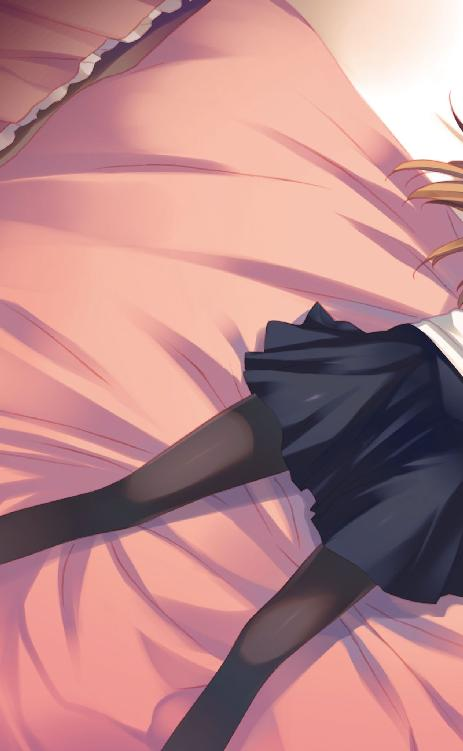

| ＷＨＩＴＥ ＡＬＢＵＭ２ 雪が紡ぐ旋律６ (「ＷＨＩＴＥ ＡＬＢＵＭ２ 雪が紡ぐ旋律」シリーズ) | |
| 月島 雅也 | |
| (2014) | |


ＷＨＩＴＥ ＡＬＢＵＭ２
雪が紡ぐ旋律６
月島雅也

本書に掲載されているコンテンツの著作権等の知的財産権およびその他すべての権利は、ＳＢクリエイティブ株式会社または正当な権利を有する第三者に帰属します。
本書の内容を権利者の許諾なく複製・複写・翻案・放送・出版・データ配信（送信可能化を含む）などすることはできません。
カバーイラスト
なかむらたけし
口絵 本文イラスト
桂憲一郎
Piece of：春希
「んっ......」
蜜のような甘さ。絹のような柔らかさ。
五年ぶりに味わう、何物にも代えがたいかずさの温かさ。
「はむっ......ん、ちゅっ」
そして、ゆっくりと俺に這わせてくる舌の、ぞくりとするような濃厚さ。
おずおずと、しかし次第に強く俺の唇を蹂躙してくる快感。
かずさが俺を求めてくるこの現実に、頭が灼かれていく。
あまりにも甘美。あまりにも愉悦。
この世で最も耐え難い快楽が俺を支配し、動けなくなる。
「春希......春希ぃ」
ヘタクソな、けれど必死なキス。熱い唾液がベタベタに俺を濡らしていく。
秘めていた想いを一気に吐き出すかのような、かずさの一途な熱情。
その様子は五年前のあのときと同じだった。
こんなに長い間会っていなかったのに、かずさは少しも変わっていない......。
そしてその欲望を受け入れている俺もまた、あの頃から何も──
何も変わっていない。
「............」
何も、変わっていない？
この五年間、何も？
そう思った途端。
「ふぁ、んむ、ちゅっ......春希？」
何か俺の変化を感じ取ったのだろう。馬乗りのまま、かずさが唇を離して俺を見る。
「どうか、した？ あたし下手だったか？ 気持ちよく......なかったか？」
「......違う」
首を振る。そうじゃなかった。むしろ逆だった。
「じゃあ、なんでっ」
なんで受け入れてくれない？ とその瞳が不安に揺れる。
「お前言ったじゃないか、あたしを嫌いにも、興味を失ってもないって」
「......言ったよ」
「だったらなんでっ！ 雪菜に遠慮してるのかよ、所詮あたしはその程度の......！」
黙って首を振る。
「ならっ！ 昔からずっと変わってないんだろ、それならっ」
「そうだよ変わってない......俺、全然変われてなかったんだよ」
呟くように言う。
「何にも変わらない。五年も経ったのに、何にも変われてないんだ」
五年ぶりの柔らかな甘さに触れて。
その感触に喜び打ち震えて。
蕩けるような、あまりにも幸福な悦びを感じて。
しかしそのことが逆に、この五年で何も変われていない俺の現実を浮き彫りにした。
「変われてなくてもいいじゃないか。あのときと同じでいいって言ってるだろ？ 雪菜を選んでいい、あたしは今だけの愛で構わないんだ」
かずさがじっと俺を見て言う。
念を押すように──あるいは縋るかのように。
「ただ抱いてくれたらいい。今だけの憐れみでいいんだ、同情でいいんだよ」
「............」
「春希っ」
嬉しかった。
かずさの唇が触れた瞬間、本当に幸せだった。
ずっと求めていたものが、全てを切り捨てても手に入れたかったものが、今まさに目の前にあるとわかったから。
かつての想いが、今も変わらぬ形でそこにあると思い知ったから。
そして──だからこそ俺は絶望してしまった。
五年前と変わらない。
だとしたら、雪菜に語ってきたこの二年の愛は一体何だったのか。
やっと雪菜と結ばれて以来、ずっと育んできたはずの雪菜への愛。
その大切な結晶を、五年ぶりのたった数秒が上回ってしまっただなんて。
あまりにも......あまりにもひどすぎる。
「噓の愛でいいって言ってるじゃないか！ それのどこが、どこがダメなんだよっ」
かずさが叫ぶ。
その目に浮かぶ色は、妖艶なそれから怒りと深い悲しみの色へと変わっていた。
「......ダメなんだよ。俺みたいな奴が誰かを愛するなんて......ダメなんだ」
噓も本当もない。あるいは噓をつき続けてきたせいで何が本当かわからない。
二年前にやっと乗り越えたはずの、「誰が一番大切なのか」という問題。なのに、結局またそこで躓いてしまった。けれど今ならわかる。あのときはただ、乗り越えられたと勘違いしただけだ──かずさが側にいなかったから。
それを勘違いして、雪菜の優しさを俺の手柄であるかのように錯覚しただけなんだ。
「あたしを慰めてくれよ、愛してくれよっ。ずっと、ずっと待ってたのに、夢見てたのに！」
「......ごめん」
「っ......！ なんでっ......なんでだよぉっ！ う、うっ......わああああああっ......！」
馬乗りになっていたかずさが、ずるりと俺の横に倒れ込む。
その悲痛な慟哭が俺の心を切り裂き、傷口からまた真っ黒な血が溢れ出す。
わかってる。俺を押し倒し、身体だけの関係を求めたかずさがその実、どうしようもなく不安を抱えた小心者だということを。
こんな突拍子もないことをしておきながら、そこには単なる勢いだけじゃない勇気が必要だったことを。
「............」
こんなふうにかずさに涙を流させる価値なんて、俺にはない。
やっぱり俺はまだかずさを愛してる。五年前と何も変わらないぐらいに愛している。
だけど俺はもう、俺が誰かに向ける愛というものを信用できない。
全部俺のせいだ。全部俺が悪いんだ。
俺が誰かを愛そうとしたから、悪いんだ......。
「う、ひぐっ......ああああ......っ」
子供みたいに声を上げて泣き続けるかずさ。
けれどその肩に触れることも、言葉をかけてやることも、俺にはできなかった。
身体中を包む絶望感と情けなさが俺を縛り付けていたから。
月明かりの部屋の中、かずさの叫び声だけがいつまでも響き渡っていた。
◇
「はい......それじゃ、よろしくお願いします」
どれだけの時間が経っただろう。すすり泣くかずさの声と涙が一応の収束を見せてからしばらくして、俺はようやく携帯を手にした。
「タクシー、すぐ来てくれるって」
「............」
膝を抱え、真っ赤な目をしたまま座り込むかずさ。
少し落ち着いたとはいえ怪我はしてるし熱っぽいし、とても放ってはおけない状態だ。
けど俺は何もしてやれない。抱き締めてやることも、手を握ってやることも。
かずさを温めてやることなんて、もう。
「......春希」
「ん？」
かずさも、そんな俺のことがわかっているかのように、もう近付こうとはしてこない。
代わりにぽつりと口を開く。
「あたしがさ、もしピアノで成功してなかったら......何もかも失敗して落ちぶれて日本に来たんだったらさ。そうしたらお前──あたしを慰めてくれたかな」
「かずさ......」
「あたしのことを憐れんで、抱いてくれたかなあ......？」
俯くかずさの表情はわからなくても、その声色だけで気持ちは痛いほど理解できた。
けれど当然優しい言葉を返してはやれなくて。
「そうは......ならなかったんだよ」
「っ......」
「仮定の話なんて、過去の話なんてしても仕方ない」
言葉を濁すような俺の台詞。そんなわけないだろ、と断言できずに逃げる卑怯な手。
口に出せるわけなかった──もしかずさの言った通りの状況だったとしたら、自分がどうなっていたのかわからないから。
「そっ、か」ぽつりとかずさは。「ごめん春希......ごめんな」
「......ごめん」
お互いに、何に対して謝っているのか。
そうして今度こそ、俺たちの間に静寂が訪れる。
融けるほど深い暗闇の中で、ただじっとしていた。
ただ、じっと。
Piece of：春希
長い長い夜が明けた、水曜日の午後、編集部。
「え、怪我っ？」
「コンサートのすぐ後に、階段から落ちたらしくて」
「大丈夫なのそれ？ 怪我ってどれぐらいの......」
「手の甲を切ってて、もう片方は手首を捻挫したとかで。両方、骨には異常ないみたいですが」
「うわ、両手ともなんだ......あちゃあ」
俺の言葉に、うーん、と顔をしかめる鈴木さん。
来月の追加公演はどうなるのかなあ、と心配そうに呟く彼女の姿に胸が痛んだ。
噓と真実を織り交ぜた俺の説明は、下手に事実を内包している分、俺自身に罪の意識を強く植え付けていく。
けど、全ての原因が俺のせいだなんてことまで言えるわけもなくて。
「それにしたって、なんで今まで連絡してくれなかったのかな、ホントに」
「すみません、冬馬かずさと連絡取れたのが昨日の夜中で......」
「北原くんに言ってるんじゃないの。冬馬曜子オフィスだよ。そりゃあバタバタしてたんだろうけど、そんな大事なことはすぐ連絡くれないと」
「いや、それは......」
冬馬曜子オフィスも把握してないだろうから仕方ない。
だから、ただ俺の心だけが痛み続けていた。
「とにかくアンサンブルの編集長には連絡しとくね。あっちはまだ冬馬曜子と連絡取れてないらしいから」
「そう、ですか」
俺も曜子さんとは連絡が取れていない。けど、そのことにどこか安堵している自分がいた。事情をどう説明すればいいのかわからなかったからだ。かずさを護れなかったこの俺が、どうやって。
「......そんな事情なので、とにかく取材は彼女の様子を見ながらということにします。それじゃ、今日は夜まで別件の打ち合わせがあるので、行ってきます」
「それ終わったら冬馬かずさのお見舞いに行くんだよね？ 一度わたしも顔出そうか？ 今後のこともあるし」
「いえ、今はあまり他人に会いたくないそうなので」
「そっか......じゃあ、よろしく言っておいてね」
わかりました、と編集部を後にして歩き出す。
自分が口にした台詞にハッとしたのは、駅へと向かう道の途中だった。
他人には会いたくない、だって？
それじゃまるで、俺は他人じゃないみたいじゃないか。
そんなことを口にしていい資格なんて俺にはない──たとえそれが事実であったとしても。
たとえ......かずさがピアノより優先しようとしたのが、この俺だったとしても。
◇
打ち合わせを終え、午後七時には帰宅の途につくことができた。
電車を降り、南末次の駅からマンションへと歩く。
冬の冷たい風に耐えながら進むと、どうしたって頭に浮かぶのは昨夜の出来事。
五年ぶりに入った冬馬家で、独り倒れていたかずさ。ついこの間、家の前で会ったときには来るんじゃなかったと言っていたのに、コンサートを終えたかずさが逃げ込める場所はあそこしかなかった。
結局あいつの時間は、五年前で止まったまま。
この五年間、俺が懸命に雪菜を愛そうとしていたのに対し、かずさはずっと俺を想ってた。
そんな痛くて苦しくて、そして心躍ってしまう真実が俺に突き刺さっている。
ダメなんだ。俺のせいでかずさをそんな目に遭わせたのに、それに喜びを覚えてしまっては。
雪菜への愛が全部まやかしになってしまうから。
五年前と変わっていない、むしろ五年前より最悪になったのが今の俺なのだ。
噓の愛を求めたかずさを受け入れられなかったのは雪菜のためじゃない。
ただ、俺が俺を信じられなくなっただけ。
「............」
だけど、そんな都合なんてかずさには関係ない。
俺に拒絶されたというショックがあいつを傷付け、涙を流させた。
当初の予定通りではあったけれど、これで完全に俺たちの共同生活は維持できなくなり、かずさはこのマンションから出て行く──はずだったのに。
「......ただいま」
俺が鍵を開けて入ったのは自分の部屋じゃなく、隣の......かずさの部屋、だった。
「............」
蛍光灯の光の下、ベッドに腰掛けてテレビを観ていたかずさは、俺を無視するようにして背を向ける。
かずさはまだ、ここにいた。
「やっと起きる気になったか。少しは何か食べたか？ 夕飯買って来たぞ」
俺の言葉にも何も返すことなく、じっとしているかずさ。
あの後──冬馬家でタクシーに乗り込んだ後、結局俺はかずさをここに連れ帰ってしまった。
だって手放せなかったのだ。熱もあったし怪我もしてた。曜子さんと連絡も取れないのに、そんなかずさを一人で放ってなんておけなかった。......そんな自分の最低さを自覚しながら。
当のかずさは、マンションに戻ってから一言も口を利かなかった。怪我の手当てはさせてくれたけれど、あとは服を着替えろと言っても、飯を食えと言っても反応せずに、ずっとベッドに潜り込んでいた。もちろん本当に寝たりもしていただろうが、朝になっても昼になっても起きようとはしないままで。
昼飯を食べろと言っても無反応、少し会社に行ってくると言っても無視。
今になってようやく身体を起こす気にはなってくれたようだが、まだ会話はしたくないらしい。
「作ってやれなくて悪かったけど、ほら、美味そうな弁当だろ？ 打ち合わせした場所の近くによさそうな店があってさ。自家製プリンとゼリーもあるぞ」
「............」
何も言わぬまま、わざとらしくもぞもぞと布団の中に潜り込むかずさ。
ついこの間までは、食事にだけはうるさいぐらい反応していたのに。
「なあ、いい加減ちゃんと起きてくれよ。狸寝入りにも限度があるだろ」
「............」
「怪我のことだってあるし、曜子さんと連絡取れないのも何とかしないと」
「......うるさい」
布団越しに、ようやくかずさが口を開いた。
「あ──うるさくして悪い。でもほら、せめて食事ぐらいちゃんと食べてくれよ」
「......嫌だ。お前がいる前で、飯なんか食えるもんか」
「え？」
「あたし振られたんだぞ。必死に告白して、振られて捨てられたんだ」
「捨てて、なんか......」
ないと言い切れるだろうか？
「優しくするなよ。その目であたしを見ようとするなよ。あたしを憐れまないでくれよ......っ」
「け、けど、今のお前は自分一人じゃ立ち上がれないだろ、だから」
「なら、あたしが今すぐ元気になればお前はいなくなるのか？」
「......そうした方がよければ」
「そんな、そんなわけないだろっ」
「だったら面倒見させてくれよ、食事も、包帯だって替えたいし」
「それも嫌だっ......嫌なんだよ」
布団の中から聞こえるくぐもった声は、溢れる何かを必死に抑えるようで。
「もうどうしていいかわかんない......何なんだよ、なんでこんなことに」
「かずさ......」
「あたしにどこに行けって言うんだよ。どこにもないじゃないか、あたしの居場所も、向かう先も、もうどこにだってないじゃないか。お前のせいだ、皆お前のせいだ。ひ、っぐ......これ以上あたしを惨めにしないでくれよぉ......」
嗚咽を続けるかずさを黙って見つめる。
何が正解だったのかはわからない。
ただ、昨日俺がかずさを受け入れなかったことだけは事実で。
全部が俺のせいだということもまた、事実だった。
「......ごめんな、かずさ」
弁当置いとくから、と呟いて部屋を去る以外に、俺に何ができただろう。
隣の自室に帰った後、俺は俺で食欲なんてなく、独りベッドの上で座り込む。
かずさが求めた、噓の愛すら拒んだ俺。
けれどそれは雪菜のためじゃなかった──もしそうならまだ救いがあったのに──ただ俺が俺に絶望しただけ。
むしろ雪菜への愛すらも空虚だったのだと思い知らされた。噓だったのはむしろ、この二年の愛かもしれなくて。
雪菜を愛していたはずの時間は、一体何だったのだろう。
雪菜の愛は確かに俺に届いていたのに、雪菜が受け取っていたはずの愛は、一体......。
「............」
何も考えたくなくて、逃げるようにベッドに潜り込む。
自分の空腹は気にならなかったが、かずさはちゃんと食べただろうか、と思ってしまう自分が憎かった。
Piece of：かずさ
いつまで経っても彼が戻って来ないので、かずさはゆっくりとベッドから這い出した。
別に彼が戻ってくるのを期待していたわけではない。顔が合わせられないというのは本心だ。ただ来ないなら来ないで、理不尽な何かに対し苛立ちと寂しさを覚えてしまう。
テーブルの上に置かれているのは彼が持ってきた夕食。
脳は必死に空腹を訴えていたが、しかしその弁当を前にかずさは動けなかった。
だって自分は振られたのだ。五年間ずっと彼を想っていたのに、結局ニセモノの愛すら与えてはもらえなかった。そんな相手にまだ面倒を見てもらうだなんて情けないにもほどがある。
だからもう側にいるべきじゃない。そんなことはわかってる、同情の目を向けられるぐらいなら彼の前から消え失せたい気持ちだって確かにある。
けれど無機質なホテルの部屋で一人過ごすことを思うと、どうしようもない恐怖に襲われるのだ。
自分の世界が本当に終わってしまったのだと突き付けられるような気がして。
「う、うっ......うわあっ......」
包帯越しにずっと手の中に握っていた彼の制服のボタンを、さらにぎゅっと握り締める。
この五年間、心の拠り所にしてきた想い。
それが崩れ去ってもなおここにいる自分は、どこにも行けない自分は何なのだろう。
彼への愛がまだ消えない自分は──
彼を諦められない自分は、一体......。
どうしていいかわからなくて。
動くこともできなくて。
汚れた自分の両手と共に、かずさはただ涙を流し続けていた。
Piece of：春希
朝。かずさの部屋の前で立ち続けること五分。
編集部から呼び出しがあったので、その前にかずさの様子だけ見ておこうと思ったのだが、昨日のこともあり入る勇気がなかなか湧いてこなかった。
「............」
これは愛じゃない、ただのお節介だと自分に言い聞かせる。
けれどその方が余計にタチが悪いのかもしれない......同情はやめろとかずさは言っていたのだ。俺のしていることは、いたずらにかずさの傷口を広げるだけじゃないのか。
それでもかずさを見捨てられないのは、結局ただの自己満足でしかない。
手ひどく裏切っておきながら離れることもできないなんて、やっぱり俺は以前と何も変わってないじゃないか。
『決着を付けるためにわたしが必要だったら──』
約束、したのに。
決着を付けるために頑張るって雪菜と約束したのに。
今の俺は雪菜に連絡さえできない。
それどころか雪菜への愛すら疑わしくなって......。
「......ん？」
そのとき、ふと室内から物音が聞こえた気がした。同時にかずさの小さな悲鳴も。
とっさに思わず鍵を開けて中に入ると、そこにはキッチンに突っ立ったままのかずさと、床にひっくり返っている弁当。
「おい、どうしたんだ？ 大丈夫か？」
「別に......何でもない」
俺から目を逸らしながら、そっちこそ何だ、とどこか強がるようにかずさが呟く。
「あ、いや。お前が何か叫んだ気がしたから」
「叫んでなんかない。いい加減お腹減ったから、さすがに食べようかと思って......でもレンジで温めたら熱くなりすぎてて、それで」
こんな手じゃ上手く摑めなかったし、とふて腐れた子供のように言うかずさ。
そういうことか。何にせよ食欲が出てきたのならよかった。
「わかったよ。床は俺が片付けるから、お前は向こうで──」
「......見るなよ」
「え？」
「見るなよ。こんなあたし、見ないでくれよ」
いつの間にかをぎゅっと握り締めていたかずさ。
「お前になんか世話して欲しくないのに......でも今お前が来た瞬間、嬉しがっちゃったよ。見たくなかったはずのお前を見て喜んじゃったよ、あたし」
「かずさ......」
お互いにあれこれ考えながらも、結局はこんな形で顔を合わせてしまう俺たち。
元々危ういバランスで保たれていた共同生活は、俺のせいでさらに奇妙な形に歪んでしまった。
かずさを突き放せない。放っておけない。
けど愛を認めることも決してできない。
どうしていいかもわからない。
「......いいから待ってろ。俺の弁当がまだあるから、これ片付けたら持ってくる」
今まで以上に残酷な現実を突き付ける俺と、それでもなお出て行こうとしないかずさ。
お互い自分がどこにいるのかわからない。それでもただ、ここにいる。
「あと......包帯だけは替えさせてくれ。頼む」
「......勝手にしろ」
どこにも行き場がないことを自覚したままで。
◇
「え？ 増刊号、ですか？」
アンサンブルの件で話がある、と俺を呼んだ鈴木さんが切り出したのは、予想もしていなかった事態だった。
「いつもの編プロが共同作業してくれるし、編集長も全面監修してくれる。けど、メインの作業は北原くんが担当するの。記事書いて写真撮って編集もして......」
つまり北原くんが作る雑誌になるんだよ、と鈴木さんが俺を見て言う。
「こないだのコンサート自体の評価はそれほどでもなかったけど、扱えば数字出せるのはわかってるからね。上が出版に踏み切ったみたい」
話はこうだった──俺が取り組んでいる冬馬かずさの密着取材は、そもそもアンサンブルの単なる一記事、『冬馬かずさ特集』として掲載されるだけのはずだった。
ところが上層部の意向で、丸々一冊を冬馬かずさで費やした特別増刊号を出すことになるらしい。
編プロと共同とはいえ、１００ページ超の雑誌を俺がメインで編集に携わるという、入社一年目の俺にとってはあり得ないほど大きな初仕事。
あり得ないのはスケジュールもだ。締め切りは二月末、発売は三月上旬。普通じゃとても考えられない進行だが、冬馬かずさ日本公演の熱気が冷めやらぬうちに仕掛けて売り上げを見込むつもりなのだろう。
冬馬曜子とは連絡が付かないままとのことでまだ正式決定ではないが、開桜社的にはＧＯサインを出したらしい。
「当然、北原くんの仕事量はかなり増えるよ。密着取材だけじゃなくて会社に出て来て作業してもらうことも多くなるし」
「......はい」
そんなことをやる気分じゃない──なんて、言えるわけがなかった。
俺とかずさの想いとは無関係に、周囲の環境はますます俺たちの距離を狭めてくる。
これ以上かずさと一緒にいればいるほど傷付けてしまうのはわかってる。俺自身も傷付く。
どうすればいいのかわからないのに、離れられない言い訳だけが増えていく。
「彼女の怪我のこともあるから、どこまでを書くのかっていうのはまた応相談ってことで。怪我の件はまだわたしとアンサンブルの編集長しか知らないし」
「............」
「北原くん？」
「あ、はい......わかりました」
いや。
最悪なのは、そうやって自分以外のところに原因を見出そうとする心根かもしれなかった。
◇
「............」
増刊号の話を振ってみても、かずさは表情一つ変えず黙々と炒飯を口に運ぶ。
会社から戻ってかずさの包帯を替え、夕飯を作り、そして二人で食べている今もまだ、かずさはほとんど口を利かないままだった。
やっていることは前と同じなのに、内情はすっかり変わってしまった俺たち。
「まあ、まだどうなるかわかんないけどな。曜子さんならノリノリでＯＫ出す気がするけど」
「............」
「けどまあ、同級生だったから、っていうコネみたいな理由で仕事任されるっていうのも、運がいいんだか何なんだか。そういえばバイト時代もそんなことあったし」
反応の薄いかずさに、それでも俺はいつも通りのフリをして話しかける。
「アレだな、俺の編集者としてのキャリアは全部かずさがきっかけだな、はは......」
その言葉に、かずさの表情が微妙に引きつる。
「かずさ？」
「......悪かったな、恩着せがましくて」
「いや、そんなつもりじゃ」
「鬱陶しいもんな、あたし。恩を着せてそれを武器に関係迫ったりして──」
「やめろ！」思わず叫ぶ。「......そんなこと言うなよ」
「............」
つい声を上げてしまった俺のせいで、沈黙の気まずさが増す。
かずさの台詞は単なる言いがかりだ。お互いそんなことはわかってた。
けれどこんなことになってしまうのは、昨夜確かに何かが壊れてしまった証拠だろう。
しばらく時間が静止した後、先に口を開いたのはかずさ。
「この炒飯......マズい。昼に食べた弁当の方がマシだ」
「......少しは我慢しろ」
デリケートじゃない話題を探して、夕飯に白羽の矢が立つ。
俺の作る食事にはいつも文句を言うかずさだけれど、確かに今日は自分でもイマイチだった。
かずさの特集号、なんて話に俺自身少なからず動揺したせいかもしれない。
やっぱりもう元通りには戻れない。色々なものが。
今ここにいるのは、それでもさよならが言えない俺と、事務所にすら居場所を連絡しない孤独なかずさだけ......このままじゃ怪我の件さえ開桜社経由で冬馬曜子オフィスに伝わりそうだ。
大体、曜子さんはどこに行ってしまったのだろう。
もし俺がかずさと完全に決別してしまったら、側にいてやれるのはあの人しかいないのに。
これも彼女の作戦なんだろうか、と思いかけ、慌ててそんな考えを打ち消す。だから他人のせいにするなよ、俺......。
「なあ」そして食事が終わった後。「あたし、シャワー浴びたいんだけど」
「え？ あ、ああわかった。着替え出しておいてやるから......」
とそこまで言いかけてふと気付く。
「どうやって？」
かずさが両手を見せつけて言う。包帯の巻かれた両手を。
そうだ、今のかずさは一人じゃ風呂にも入れない。
ということは、まさか──
◇
「じゃあ......やるぞ」
自分が使うときの三倍ぐらいの量を手に取り、シャンプーを泡立てて長い黒髪にすり込んだ。
風呂場の腰掛けに座るかずさは、当然ながら何も身に着けていない。下着姿の俺はその背後に立ち、美しく真っ白な背中を目にしながらかずさの髪を洗っていく。
「............」
一体何やってるんだろう、俺。こんなことしてて本当にいいのだろうか。
ある意味じゃ正しいことかもしれないけど、でもおかしいに決まってる。
かずさも何のつもりなんだろうか......？
「もっと強くてもいい。あんまり髪のこと気にしないし」
「あ、ああ」
浴室に響く俺たちの声。
湯気と熱気のせいで、そして指に絡み付く無数の漆黒のせいで、ふいに自分がどこに立っているのかわからなくなる。
「ウザいよな」
「え？」
頭を泡まみれにしながらかずさが言う。
「振られたのにまだこんなに依存して、あたしってウザいだろ？」
「別に......仕方ないだろ。怪我してるんだから」
「噓だね。なんで身体なんか洗わせるんだと思ってるだろ？ なんで振った女の裸なんか見なくちゃいけないんだって辟易してるんだろ？」
「そんな、こと」
「ないのか？ そうだよなあ、悲鳴を聞いたら駆け付けて、一緒に飯食って、風呂にまで入れて。あたしのために何でもしてくれるもんな、春希って。......ただ抱いてくれないだけで」
「っ、いい加減に......！」
「いい加減に、何だ？ 言えよ。いい加減にしてくれ、もう面倒見切れないって言ってくれよ」
曇った鏡越しでも、かずさが俺を見ているのがわかる。
「今度こそあたしを捨てるんだよ。そうすれば煩わされることもなくなる」
「何、言ってんだよ。それでお前はどうする気なんだよ......」
「さしあたって無理やり自分で頭を洗うかな。傷口がどうなるかわかったもんじゃないけど」
軽口を叩くかずさ。けれどどこか冗談に聞こえないのはどうしてだろう。
「......商売道具がダメになったらどうするんだよ」
「知るか。そのときはそのときだ」
「馬鹿言うな、お前の両手には未来がかかってるんだぞ。お前だけじゃなくて色んな人の」
「それこそ知ったことか。あたしにとっては両手よりも大事なものがあるんだから」
思わず指を止めた。と同時にかずさがゆっくりと俺を振り向く。
「今でもまだ......あるんだよ」
その瞳の訴えに、思わず視線を逸らした。
なんでだよ。なんでまだそんなふうに俺を見られるんだよ、かずさ。
「俺、お前を受け入れなかったんだぞ......忘れてくれよ、嫌ってくれよ。俺みたいな奴のことなんて」
「五年も忘れられなかったのに、たった数日でどうやって忘れろって言うんだ？ そんなに忘れて欲しいなら、まずはお前があたしを嫌えよ」
「嫌えよ、って」
「あたしに言えよ。大嫌いだって。二度と顔も見たくないって。早く目の前から消え失せろって小馬鹿にするように言ってくれたら──」
「っ......やめろ」
「そうしたら今度こそ、お前を忘れられるのかも、な」
かずさが寂しそうに視線を切る。
「そんなこと、できるわけないだろ......」
俺にそんな真似ができるのなら、こんなに苦しむこともかずさを苦しませることもなかっただろう。
かずさもそれがわかった上で言っている、俺を責めるためだけの台詞。
「じゃあ、なんでまだあたしの側にいるんだよ。抱き締めてもくれない薄っぺらな同情と憐れみを向けてくれてるなんて、ありがたくて......泣きそうだ」
かずさの白い肩が少しずつ震え出し、声のトーンも下がっていく。
それを慰めるどころか、俺は俺で心に突き刺さる痛みに耐えるので精一杯だった。
「......お前はひどい男だ。あたしにとっても雪菜にとっても。お前のは優しさじゃない。歪んだ正義感だよ。ただのワガママなんだよ」
「っ......わかってる、そんな、こと」
「わかってない。自分からは切って捨てられないから、『忘れてくれ』なんて言ってあたしの心変わりに期待してるんだ。ホントにひどい奴だよ......春希」
俺を責めているはずのかずさが、どんどん小さくなっていく。
俯き、打ち震え、小さな子供のようになるその背中。
「けど、けどな......だからこそあたしは意地でも嫌ってやらない。諦めたりなんかしない。お前の思い通りになんて、なってやるもんか......っ」
「っぐ、あっ......」
を握り、歯を食いしばって、溢れそうな何かを必死に抑える。
俺はもうかずさにこんなことを言われていい人間じゃないのに。
ただの同情で、憐れみでかずさの側にいるなんて、どういうつもりなんだよ俺。
そして──かずさを傷付け続けているこんな状況にいながら、かずさがまだ俺を想ってくれてることを喜んでしまうなんて。
本当に最悪だ。
「う、あ......ぐっ」
泣くな。俺のどこに涙を流す資格があるんだ。
「なあ、そろそろ髪......流してくれよ」
「わかっ、てる......」
振られたのにまだ俺の側に居続けようとするかずさ。
振ったくせに最後まで突き放すことができない俺。
全部俺が悪いのはわかってる。
それでも、一体この先どこへ向かえばいいのかわからないままだった。
決着が付けられない以上、雪菜へ連絡することもできない。
もうどこにも行き場所なんてないのかもしれなかった。
Piece of：雪菜
部屋の中。
「............」
ベッドの上で携帯をただじっと見つめる。
いつまで経っても鳴らないそれを、ただじっと。
「............」
もうすぐ今日が終わり、新しい一日が来る。
新しいはずの時間が始まろうとしている。
けれど──
「............っ」
けれど電話は、鳴らない。
Piece of：春希
翌朝。
俺とかずさは御宿へと出て来ていた。もちろんかずさは久々の変装姿で。
「......ふう」
「ま、正直に話すしかないだろうな......取り繕っても仕方ないし」
朝というより昼に近付いた街を、また以前のようなふりをして並んで歩く。とはいえ話しているのはほとんど俺で、かずさはため息を口にするばかりだった。
昨夜のことを意識しながら──けれどそこに触れないようにして。
「......正直？」
「あ、いや」ふいに喋ったかずさの言葉の意味を考えて。「......ごめん」
言えるわけないか。本当のことなんて。
「ふん......」
再び黙ったまま歩き続け、駅から十数分。
表通りから少し外れた雑居ビルの前で俺たちは立ち止まった。この中の一室にあるのが、株式会社冬馬曜子オフィスだ。所属アーティストの知名度に比べてあまりにも小規模だが、そもそも活動拠点が海外なのであまり支障はないらしい。普段は国内の業務に限って、工藤さんという事務員さん一人だけで切り盛りしている。要するに去年まではそこそこ暇な仕事だったのだろうが、ここ最近は忙殺されているに違いなかった。
「......やっぱ帰ろうかな」
呟いたかずさがまた大きくため息をつく。
今朝数日ぶりに携帯の電源を入れたかずさは、事務所から山のようなメールが届いていたことを知った。そしてそれを知ってしまった以上、変なところで小心者のかずさはどうしたものか困り、それを俺が無理やり引っ張ってきたのだった。
この期に及んでまだ面倒を見てるのか、と思われても仕方ないけれど......やはり放っておいてはいられなくて。
本当にどうしようもなかった。
「やめた。帰る......留守にしてていないかもしれないし」
「でも、せっかくここまで来たんだからさ」
踵を返しかけたかずさをそっと引き留める。
今日この時間なら事務所にいる、ということだけは工藤さん本人に予め確認しておいたけれど、そこまではかずさに伝えられない。
「......はあ。じゃあ行くだけ行ってくる」
「ああ」
中まで付き添おうか、なんて言葉も言えるわけなかった。
「なあ、春希」歩き出したかずさの背中が言う。「もしあたしが事務所クビになって、どこにも居場所がなくなったとしたらさ、そしたらお前は......お前はさ」
「っ......」
思わず息を呑んだら、何でもない、とかずさは言葉を濁す。
「......遅くなるかもしれないから、会社が終わっても迎えに来なくていい」
そう言い残して、かずさの姿はビルの中へと吸い込まれていった。
「ふう......」
かずさがクビになるなんてことはもちろんあり得ない。
けど、たとえば仮にそうなったとしたら、俺はどうするだろう。
ピアノ以外何もできないかずさがピアノを失ってしまったら、それでも俺はあいつに手を差し伸べられずにいられるだろうか。
今現在ですら突き放せないのに。
「......行くか」
肩に重いものを感じ、仕事へ向かうべく来た道を戻ろうとした、そのときだった。
「おーい。ギター君」
その声にハッとして振り向くと、路肩に停まっていたタクシーの窓から曜子さんが俺を手招きしていた。
「なっ......曜子さんっ!?」
「久しぶり。馬鹿娘を連れてきてくれてありがとね」
ひらひらと手を振りながら、普段通りの様子で笑う曜子さん。
「な、なんで......どうしてここに？」
「その前に、時間あったらお茶でもどうかしら。ちょっと──聞きたいこともあるし、ね」
そう言って曜子さんが俺を見据える。
聞きたいことなんて一つしか、いや、一人のことしかないに決まっている。
「......失礼します」
静かに開いたタクシーのドア。
そっと深呼吸して乗り込むと、車は静かに滑り出していった。
◇
「美代ちゃん──ウチの事務のコが連絡くれてね」
昼前だというのにサラダとパスタとリゾットを平らげた曜子さんは、フルーツパフェと向き合う頃になってようやく当たり障りのなかった話題を変えた。
「ギター君、彼女が事務所にいるか尋ねたでしょ。それを聞いてわたしはピンと来たわけ。もしかしたらかずさを連れて来るつもりかもしれないって」
「え？ 工藤さんは、曜子さんともかずさとも連絡が取れないままだって......」
「それは半分だけ本当だったってことね。マスコミにしては信じやすいのね、あなた」
まあ今ごろ美代ちゃんも驚いてるでしょうけど、と薄く笑う曜子さん。
「それにしても、やっぱりあなたと一緒にいたのね、かずさ」
「......ええ、まあ」
「だと思ってたから心配はしてなかったけど。ただこっちもちょっと──あのコンサートの後は色々と忙しくてね。なかなかマンションまで出向く暇もなくて」
今までどこにいたんですか、なんて訊くのは無意味だろう。まさかかずさの言うように男と遊んでいたわけがないし。そもそもこの人を責める資格は俺にはない。
「で、本題なんだけど。ギター君、あのコのコンサート、来てくれなかったわよね」
「......はい」
「別に責めてるわけじゃないのよ、それがあなたの出した結論なんだって思っただけだから。けど、結局今もまだかずさと一緒にいるのよね？」
パフェのフルーツ越しに俺を見据える曜子さん。
「それって、そういうことだと思っていいのかしら」
曜子さんの一言が鋭く胸を抉った。
その通りだと言えたら......そういうつもりで側にいますと言えたら。
だけど。
「いえ......違います。前みたいに、かずさの面倒を見てるだけで」
「ふうん。コンサート後のあのコの様子を知ってたら、『前と同じように』なんてのは信じがたいんだけどね」
「っ......」
そうだ。前と同じなんかじゃない。
前より残酷で自分勝手な状況をかずさに押し付けているだけ。
「受け入れられないけど、捨て切れもしない、ってトコかしら」
ままならないわね、と曜子さんが呟く。なんでこの人は、こんなにも他人を見抜けるのだろう。
「曜子さん、俺......」
「あのねギター君」俺を遮って。「実はわたし、密かな野望ってものがあってね」
「え？」
「それは──いつか日本に帰ってくること」
一瞬、言葉の意味がわからなかった。
「ウィーンからいつかは戻って来ようかなって思ってる」
「どうして......ですか？」
「不思議じゃないでしょ？ 生まれ故郷なんだし。それに、ちょっと男のこともあったりしてね」
もちろん今すぐってわけじゃないわよ、と曜子さんは続ける。
かもしれないけど、でも。
「そうしたら、そのときかずさは......？」
「問題はそこなのよね。そのための布石っていうか、あのコがまた日本で暮らせるのかどうか確かめるために今回わざわざ来日公演を計画したんだけど」
「............」
「でもどうやら、あのコを吹っ切れさせることも、想いを遂げさせてあげることも、どっちもできなかったみたいね。あなたこそがかずさを日本に戻すための最後の希望で......最大のネックだった」
「そんな......そんなこと言われても、俺......」
「かずさの気持ちはちゃんと聞いたんでしょ？ その上で受け入れなかったんだから仕方ない。あのコのあなたへの想いはこの五年間変わらなかった──それはわたしが保証する。だって毎日十時間、ピアノを通してあなたと会話してたんだもの。ずっと冷めない恋してた」
「......っ」
「そんなことやってるうちに、色ボケた音色で世界中に認められるようになっていったけど......肝心の恋はダメだった、か。今のあのコ、まだピアノ弾けるのかしら」
その言葉にハッとする。
毎日十時間以上も練習を欠かさないかずさが、この数日はピアノに触れてもいない......。
もし俺が本当にかずさと決別したとしたら、そのときあいつはまたピアノに向き合えるだろうか？
「ね、ギター君。あなたが今もまだかずさの隣にいるのは、ただの同情？ 罪悪感や義務感でかしら？」
「......それは」
「それでもいい」
俺が言葉に詰まったのを見越したように、曜子さんは言った。
「ちゃんと振ってあげて、って言ったのは私だけど、それができないあなたを責める資格、わたしにはないもの。捨てるんだったらバッサリやってあげて。でなきゃあのコは一生、新しい恋なんてできないから」
けど、と曜子さんは。
「けどそれもできないなら──かずさの側にいるのなら。どんなに小さくても、ゼロじゃない可能性がかずさには残されてるって......勝手に思わせてね」
そこまで言って、曜子さんはパフェを食べる手を止めた。
そして結局、半分以上に最後まで手を付けなかった。あんなに甘い物好きのこの人が。
「可能性、なんて......違うんです、悪いのは全部俺で」
「善し悪しなんてもう意味ないでしょ？ これでも親だもの。かずさがあなたを嫌わないなら、諦めないのなら、わたしも──その望みを捨てない」
微塵も冗談を物語っていない瞳に見つめられ、それ以上何が言えただろう。
ただその視線から逃れるように顔を伏せた。
曜子さん。あなたまでそんなことを......かずさみたいなことを言わないでください。
そんな期待をかけられていい資格なんて俺にはないんです。
かずさの側にいるのは、ただ怖いからなんです。
あいつの人生を壊してしまうかもしれないスイッチを押す勇気がなくて。
そんな卑怯で臆病な男なんです。
「じゃ、そろそろ戻りましょうか。付き合ってくれてありがとう、ギター君。一応かずさには今日のことは内緒にしておいてね」
ここはわたしが奢るから、と小さく笑う顔に、俺は何も反応できなかった。
another point of view
「はあ。やっぱりダメだったかあ、あのコ」
「ま、彼みたいな一般人じゃ、かずさには高嶺の花よね。彼がかずさを選ぶとしたら、今の環境全てを捨てなきゃいけない。それだけ住む世界が違うもの」
「でもまだ関係としてはグレーみたいだし、どうなるかしら」
「どう転ぶかわからないけど、後は天運ってやつね」
「けどホント、ずいぶん自分勝手なこと言ってるわね、わたし」
「......それぐらいしかしてあげられない母親だから仕方ない、か」
「っ、と......！ ふうっ......さすがにちょっと、無理しすぎたかしら」
「タクシー、待っててもらってよかったわね。やれやれ」
「──おかえりなさいませ。次はどちらへ参りましょうか」
「ありがとう。悪いんだけど、大急ぎで......」
「......峰城大学へ」
Piece of：春希
曜子さんと別れた後、出社はしたものの仕事にほとんど身が入らなかった。
正確には特集号の記事を書くために手は動いていた気がするが、何をやっていたのかあまり記憶がなかった。
気付いたら午後九時を回っていて、帰路についていて、かずさがまだマンションに帰っていないことがわかって。
そして無意識のうちに、いつ帰るかもわからないかずさを迎えに駅へと取って返そうとして──
「春希？」
「あ、かずさ......おかえり」
「うん......どっか行くのか？」
マンションの下で、帰ってきたかずさと出くわした。
「いや、その。俺も今帰ったところでさ。で、夕飯のこと忘れてたから、弁当か何か買いに行こうかと思って。お前も行くか？」
てっきり首を横に振ると思ったが、かずさは俺の言葉に「なんだ、また弁当か」と肩をすくめた後、さっさと来た道を歩き出す。
「事務所さ。いたよ、美代子さん」
「そっか。どうだった？」
「クビにはならなかった。ちゃんと謝ったし。むしろ泣かれそうなぐらい心配された」
「ならよかったな」
「それからずっと話し合って、色んなこと決めてきた。怪我が治ったら練習は再開して、追加公演も予定通りちゃんとやることにした」
きっとひどいことになるだろうけどな、と自嘲するようにかずさは笑う。
「弾ける自信は全然ないし、何しろモチベーションが最悪だからな、今のあたし」
両手より大切なものがある、と言ったかずさの台詞が蘇る。
「けどそれが今の実力でもある。素直に受け止めるよ。正直......気持ちの整理なんて、少しもできてないけどな」
「......っ」
かずさの言葉が細く、しかし鋭く俺を貫いていく。
語ることに噓はないだろう。弾けるかどうか本当に不安を覚えているのだろう。
だからこそ逆に思ってしまう。それは曜子さんと話していたときにも感じたこと。
今でもこんな状態なのに、俺と離れてしまったらかずさは二度とピアノと向き合えないんじゃないか、と。
それを心配する資格がないことはわかってる、俺の自己満足だってことも、相手を見下した偽善かもしれないことも。
かずさを見捨てられない......けれど一番望んでいる結果は実現させてやれないなんて、あまりにも不誠実。かずさにも、そして誰より雪菜に対して。
一体いつまでこのままの状態を続ける気なんだ、俺。
かずさがウィーンに帰るまで？
けどいつか曜子さんが日本に帰る決断をして、かずさもそれに同意したら、もう距離なんて関係なくなる。
決着を付けるという雪菜との約束はどうなるんだ。
「............」
「春希？」
「いや......何でもない」
何でもないはずがなかったが、かずさはそれ以上、何も言ってはこなかった。
──雪菜。
会いたい。声が聞きたい。抱き締めて温かさを感じたい。
だけどそれは単なる逃避だ。
『逃げるためだったら話聞かないから』
最後に会ったときの雪菜の声が蘇る。
なあ雪菜。俺どうしたらいいんだろう。
かずさを拒絶できない。雪菜に逃げ込めない。
俺の世界の綻びだけがどんどん深く広くなっていく。
俺は一体どこに行けばいいんだろうか......。
Piece of：春希
土日の二日間がどうやって過ぎ去ったのか、よく覚えていない。
この二年、いつも雪菜と過ごしていた週末は、いつの間に消失してしまったのだろう。
ピアノと向き合うことを決めたせいか、いくらか前のように俺と話をするようになったかずさ。怪我のせいでまだ練習もできず、マンションに籠もっているのも飽きたと言うのを一人で出かけさせるわけにもいかずに、一緒に街へと繰り出して。
かずさがそこに単なる暇潰し以上のものを感じていたのはわかっていたが、それに応えることはできなくて、時折見せる寂しげな表情が胸に突き刺さった。
こんなことを言える立場じゃないけれど、ただ、辛かった。
もともとこの仕事を──密着取材という名のかずさの世話係──引き受けたのは、今度こそかずさに別れを告げるためだった。
五年前からくすぶり続けていた想いを完全に断ち切るためだった。
ところが結果は、五年前と何も変わっていない、二年前とも何も変われていなかった自分に気付かされただけ。
そんな自分に絶望し、それでもなお未だにかずさの側から離れられなくて、仕事でも家でもかずさに浸かった生活を続けている俺。
これでいいはずがない。だけど動けない。
かずさも曜子さんもそんな俺を諦めていないことが、余計に俺の心を締め付けた。
かずさの包帯を替えながら、俺のせいで付いた傷を俺が治療しているという現実にときどきおかしくなりそうだった。
もう二度とこんな傷を付けさせまいと断言できないのだから、再び怪我をさせるために治しているようなもの。クズみたいな本末転倒だ。
そんなふうに、ただ暗い気持ちだけを抱えたまま週明けを迎え。
月曜日の夜、会社から帰ってくると、かずさはベッドに腰掛け目を閉じたまま、まるで目の前にピアノがあるかのように指を宙に躍らせていた。
音こそ聴こえなくても確かにそこに鍵盤があるかのような光景。
また動き出そうと、戦おうとしているかずさの姿に嬉しさを覚えて。
けれど当然、素直には喜べなかった。
俺との繫がりだから、という理由でピアノを弾き続けてきたかずさ。そのかずさが再びピアノと向き合うことの意味を考えると罪悪感で押し潰されそうだった。
それでもとにかく、かずさは。
「じゃ、行ってくる。帰りは六時か七時か......早めに切り上げてくるから」
火曜日の朝、久々の練習へと向かい出かけていった。
「......付いてこうか？ せめてスタジオの入り口まででも」
「タクシーだし平気だ。お前はちゃんと会社に行け。あとあんまりあたしに優しくするな」
勘違いしたくなるだろ、とかずさが言い残した言葉。
それはときどき、忘れた頃にふと出るかずさからの責め。
今も変わらないかずさの気持ちを知っていながら、ただ手元に置き続けるだけの俺への小さな非難。
と同時に、そんな俺から離れられない自分への皮肉なのかもしれなくて。
「............」
口中を苦く染めながら、のろのろと会社へと向かう。
その足取りは本当に、本当に重かった。
Piece of：かずさ
「ふうっ......」
軽く慣らしていた指を止め一息つくと、「お疲れさま」と後ろで声がした。
「......黙って入るなって何回言えばわかる？」
「ようやく戻る気になったみたいね。おかえり、かずさ」
質問には答えず曜子が言う。
「ふん、そっちこそ雲隠れしてたんだろ。どこをほっつき歩いてたんだ」
「美代ちゃんから聞いたでしょ？ あなたのコンサートの事後処理とか色々あったのよ」
「そのついでにあちこち遊行してきたそうじゃないか。どうせオトコと一緒だったんだろ」
「ま、そんなところね。蜜月旅行なんて久々だから盛り上がっちゃって。はいこれお土産」
どこをどれだけ回ってきたのか、曜子が差し出したのは津々浦々の銘菓が山ほど。あっけらかんと娘にそういう話題を振る辺りも曜子らしかった。
「......ほんっと相変わらずだな、あんた」
「そういうあなたもね。怪我の具合、大丈夫？」
「ご心配どうも。軽く弾く分には問題ないよ」
「ってことはまだ完治してないんじゃ......」
「今週はあくまでリハビリで、来週からペース上げてくから問題ない」
コツ、コツと指でピアノを叩いてみせる。
久々に生まれたかずさの旋律は、リハビリにしては悪くなかった。
「......なら、いいんだけどね」
「何だよ？ 奥歯に物の挟まった言い方しやがって。大丈夫だって言ってるだろ」
「わたしが言ってるのは、コンサートじゃなくてモチベーションのことよ」
「はあ？」
曜子がわずかに目を細めて言う。
「結局、白黒付けない生活に甘んじてるみたいだから、ね」
「っ！」それが何を指した言葉なのか考えなくてもわかる。「どっから聞いた？」
「どこからも聞いちゃいないわよ。だからこうして、当事者の反応を見て推測してるわけ」
あなたもギター君も噓が下手ね、と呟く曜子。
「春希に会ったのか？」
「ついさっき、開桜社でね。別に何を話したわけじゃないし、娘の色恋沙汰にちょっかいかける気もないけど」
「......噓つけ。充分介入してるだろ」
「かしらね。じゃあ介入ついでにもう一つ──玉砕も突破もしなくて本当にいいのね？」
「っ......ほっといて」
顔を背ける。
これでいいなんて思っていない。けれど何かに蓋をして生きるこの生活以外には、他にどうしようもない。
彼がかずさを本気で遠ざけようとしない限り、かずさの方から消えるわけにはいかないのだ。
だって......ありもしない希望でも、それに縋らずにはいられないから。
今、彼の一番近くにいるのは自分なのだから。
「この先どうなるのか考えてる？」
「今は未来のことなんて考えたくない。なんであんたにそんな心配されなきゃいけないんだ」
「あなたがわたしと違うからよ。仮にだけど、もしギター君がいなくなったらあなた、将来新しい男も恋もちゃんと見つけられるかどうか」
かずさの言葉に、曜子がふうっとため息をつく。
「将来、か。男なんかいなくてもあんたの老後の面倒ぐらいは見てやるよ」
「......心配なのはわたしじゃなくてあなたの老後なんだけど」
「だったらせいぜい長生きしてあたしの老後の面倒見てくれよ、母さん」
「そうね......善処するわ」
呆れたのか、肩をすくめて言う曜子。
この先の人生なんて考えられなかった。今かずさが立っている足場は不安定で、おまけに足元は暗く、踏み出すどころかバランスを取るので精一杯だ。
だけど。
「じゃ、わたしは先に帰るわね。あなたもほどほどにしなさい、リハビリなんだから」
「......あいつは」
「え？」
「春希はあたしの前からいなくなるかもしれない。元いた場所へ、帰るかもしれない」
それは最初に覚悟していたこと。
噓の愛を受け入れてくれたら、やがて訪れていたはずの結果。
しかし今は──
「けど、未来なんて誰にもわからないだろ......？」
「かずさ......」
そう。
今はまだ未来がどうなるかわからない。
何が待っているのかなんて、誰にも。
春希にもかずさにも、そして......彼女にも。
Piece of：雪菜
「......ふう」
自宅の玄関ドアを開けると、ため息が口をついて出た。
仕事から解放されてほっとするはずの瞬間が、今の雪菜にはどこか苦しみを伴う。
「あ、おかえり姉ちゃん」
「うん......ただいま」
ちょうどそこにいた弟に靴を脱ぎながら応える。
「何だよ、暗い顔しちゃって。ここんとこ仕事しすぎなんじゃない？ 帰りも遅いし」
「......今は忙しい時期なの。仕事なんだから」
「それはわかるけどさあ。家でもずっと疲れた顔してるし、もう少し楽しそうにした方がいいんじゃない？ 気晴らしに北原さんにどっか連れてってもらうとかさ」
弟の何気ない一言に胸が詰まる。
彼氏と遊びに行くというごく当たり前のこと。けれどそれが当たり前のようにできた日が、遠い昔のように感じられて仕方なかった。
まるで大学時代の、苦しかったあの頃の再現だ。
「春希くんも忙しいの。今はまだ......大体、孝宏みたいに暇な学生とは違うんだから」
「ひでえ言われようだなあ。とにかく無理しすぎんなよ、姉ちゃんもうすぐ誕生日なんだし」
誕生日、か。
心躍るはずのイベントに、しかし思い出してしまうのは五年前の、孤独に彼を待ち続けていた雪降る夜のこと。
部屋に戻って着替えた後、雪菜はベッドに倒れ込み再びため息をついた。
真っ白な天井を眺めながら、彼の顔を頭に思い描いてみる。
最後に会ったのは大阪のホテルでだ。かずさのコンサートから逃げてきた彼をまた東京へと戻らせた、あのとき。
彼をかずさの元へと追い返すのは、本当に勇気のいる決断だった。
もし彼が雪菜を騙し通そうとしたのなら、たとえ気付いても騙された振りを続けただろう。
けれど彼は話してくれた。隠し通したままでいようとはしなかった、結局は雪菜に対して誠実であろうとしてくれたのだ。
だから雪菜もそれに応えようとした。彼を振り向かせ、愛を育んできたこの二年間がそれを後押ししてくれた。
きっと大丈夫だからと信じて。
だって彼は雪菜と約束してくれた。決着を付けるために頑張る、と。そのために必要なら連絡して欲しいと告げた雪菜に、頷いてくれた。
ならば雪菜にできるのは信じて待つことだけなのだ。
けれど。
「............」
あれから連絡はないままで。
わかってはいる。そんな簡単に決着を付けられるような話でないことは。
まだ雪菜を呼ぶ段階ではないだけだとそう思ってはいる。
けれど不安は日に日に拭えなくなっていって。
忘れるために必死に仕事に打ち込んで、けれどその反動でますます落ち着かなくなって。
もし彼がこのまま連絡をくれなかったとしたら、それは──
「......っ」
ぎゅっと目を閉じた。恐怖に耐えられそうになくて。
信じている。二人で歩いてきた道は噓ではないと雪菜は信じている。
しかし同時に、彼の中にある五年前からの『想い』のこともわかっている。
かずさが現れなければ彼がそれを引っ張り出すことはなかったかもしれない。けれど、もうそんな仮定の話は無意味だ。
なぜなら今事実として、彼はかずさと一緒にいるのだから。
雪菜はわかっている。三人の誰もが本質的にはあの頃と何も変わっていないことを。
そう、何も変わっていないのだ。
だから今雪菜が寄りかかれる確かなものは──二年前から自分の指に収まり続けている指輪だけ。
二年前の誕生日プレゼントに彼が贈ってくれた大切な宝物。
その存在だけが確かで──
「........................」
今年もまたバレンタインが、雪菜の誕生日がやって来る。
Piece of：春希
午後七時。
「......よう」
スタジオから出て来たかずさに手を上げると、かずさは少し驚いたような顔を見せた。
「春希？ なんで、まさかずっと待ってたのか？」
「違うよ。たまたま会社の用事でこっちの方に来ててさ。ちょうどお前の練習が終わるかも、って時間だったから、帰りに寄ってみただけ。十分も待ってないよ」
噓だった。その十倍以上はここで待っていた。
曜子さんから『かずさとちょっと話したわよ』と電話があり、それを聞いてつい早く会いたくなったのだ。大したことは話していないと知っても、それでもかずさがどんな気持ちでいるのか確かめたくて。
それを知って自分がどうしたいのかはわからないままに。
「......ホントか？」
「ああ。これ以上出て来なかったら先に帰る気だった」
俺の言葉に、かずさはそっと視線を切った。
「......なんで来たんだよ」
そうぼそっと呟いて、そのまま歩き出すかずさ。
「いや、だからたまたま、ていうかおいタクシーは──」
「優しくするなって言っただろ......なのに」
「それは......」並んで歩きながら言葉に詰まる。「ごめん。嫌がってたのに勝手に来て」
「......嫌がってる、だって？」ふとかずさが歩みを止めた。「本気で言ってるのかよ。お前に会いたくないからあたしがそう言ったとでも思ってんのかよ」
「え？」
「嬉しいんだよ......今、いるわけないと思ってたお前がいたからすごく嬉しかったんだよ、喜んじゃったんだよっ」
かずさが俺を見る。非難するような、けれど悲しい瞳で。
「優しくするなよ......あたしに期待を持たせないでくれよ」
「かずさ......」
「望み、持っちゃうだろ。あたしを嫌ってないんなら、いつかもう一度抱いてくれるかもしれないって思っちゃうじゃないかよ......っ」
諦めないと言ったのはかずさ自身なのに、こうして俺を遠ざけるような台詞を言う。
言葉は矛盾しているようで、でも結局すべては純粋な想いに基づくもの。
俺を、俺なんかを想うが故に、かずさは少しずつ自分で自分がわからなくなっているに違いなかった。
「......ごめん」
そんなかずさに謝ることしかできない俺。謝罪なんて何の解決にもならないのに。
「こんなの生殺しだ。今は普段通りに振る舞えてるけど、一人になるとときどき泣けてきちゃうんだよ、あたし」
お前は本当にひどい奴だ、とかずさは俯く。
「あたしを振って、脈はないって思い知らせて、それでもまだ一番近いところに居やがって。けど問題なのは......それでもお前の側にいると嬉しくなっちゃうあたしだ。お前に甘えて、強がって、一人で舞い上がって。イタい女になっちゃうんだよ」
わかっている。俺はかずさを受け入れることも、突き放すこともできなかった。そのどっちつかずの状態がかずさのクリアな心を追い詰めている。
「俺......いなくなった方が、いいか？ お前の前から消えた方がいいか？」
それは雪菜との約束を完全に放棄した、最低の選択。
でもひょっとしたらその方が、かずさのためになるのだろうか──そう思ったのだけれど。
「そんなわけ、ないだろ」かずさの涙声が俺を引き留める。「お前といればいるだけ心がズタズタになっていくのがわかる。お前に優しくされるたびに、新しい傷が増えていくんだよ。それでもお前を......やっと側に居られる今を失うことの方が、ずっと怖い」
そんなのまるで、痛みで恐怖をごまかしてるだけじゃないか。
いつか必ず流しすぎた血の中に倒れ伏す、未来のない地獄の日々。
「だけどそれは......」
「お前こそできもしないこと言うなよ。どうせいなくなったりできないんだろ、あたしを放っておけないんだろっ」
そう言ったかずさが、突然俺の手を自分の両手で包み込む。
「ほら見ろ。お前の手、こんなに冷たいじゃないか。あたしのことずっと待っててくれたんじゃないかよっ」
責めるような言葉はその実、苦しさの吐露のようで。
「諦めたり......するもんか。絶対にお前を諦めたりなんかしてやらない」俺の手を握ったまま、かずさがゆっくりと俺の胸に顔を埋める。「だけど......辛いよ」
「かずさ......」
寄せられた身体の温かさを突き返せない。でも抱き締めることもできなくて。
「ちくしょう、なんでなんだよ......あたし、こんなにお前のことが好きなのに」
ぎゅっと手を握る力が強くなり、ぐっと顔を押し付けて。
「どうして上手くいかないんだよ......っ！」
かずさのくぐもったその声にはもうはっきりと涙が混ざっていた。
それを拭ってやる術も資格も持たない自分が、本当に憎くてやるせなくて仕方なかった。
俺は。
俺はどれだけ人を傷付ければ気が済むんだろう。
雪菜との日々で得たはずの経験は何だったんだよ。
俺が語る愛なんて、少しも信用できないじゃないか。
「.........はは、は」
通り抜けた夜風は、鋭く、濃密で、でもカラカラに乾いていた。
それがいやに冷たくて、俺は自分の頰が濡れていることを知った。
「ははっ。はははっ」
「......？ 春希？」
「ごめんなかずさ。本当に、ごめんな......」
かずさが不審そうに俺の顔を見上げる。それでも俺は、譫言のように謝罪を繰り返す。
人を傷付け、裏切り続けて。
俺は一体いつまでこのままなんだろうか......。
Piece of：かずさ
後から思えば、彼の様子が少しずつおかしくなっていったのはこの頃からだった。
他にも細かい前兆はあったのかもしれない。言葉の端々や、どうでもいい行動や......雪菜だったら気付けたであろう、何らかの違和感が。
けれどかずさがそれらを見抜けぬままだったのは、自分の心の制御で精一杯だったからだ。
嬉しさと悲しさと、心地よさと苦しみと。跳ね回っては切り裂かれ血を流す脆いココロを、どうにか保つのに必死だったからだ。
手の中のボタンを強く握るのに一生懸命で、だからわからなかった。春希をつぶさに見ている余裕がなかった。
もっとも、仮にもっと早く気付けたとしても、かずさに一体何ができただろう。自分のことすらままならないかずさに。
ただ、一つだけおかしいと感じていたことが前にあった。そのときは深くは考えなかったが、思い直してみると奇妙なことが。
それは、春希が作った炒飯がやけに不味かったこと。
五年前の雑炊も、この一ヶ月の食事でも──そんなことは一度もなかったのに。
Piece of：春希
「何やってんだよ北原っ」
「すいませんっ......！」
そう言って頭を下げると、「まあ、チェックを後回しにしたこっちも悪いが」とため息と共に言葉がかけられる。
隣の編集部から頼まれていて、昨日提出した作業データ。その仕様を完全に間違えて提出してしまったのだ。指摘されるまで気付きもしなかった。
こっちから安請け合いしておいた上での重大なミス。こんなこと、今までなかったのに。
自分のデスクに戻ると「ずいぶん絞られてたな」と松岡さんが声をかけてきた。
「あそこ割ときっついからなあ。大体、北原はグラフの人間だっつーのに頼りやがって」
「いえ、俺の方から手を挙げたみたいなものでしたから」
「けど何でもこなすお前にしては珍しいよな。特集号なんて任されたからプレッシャー感じてるとか」
それこそ珍しいけどな、と松岡さんが笑う。
どうもここ数日、単純なミスをすることが多い。
仕事の歯車が上手く嚙み合わないような感覚に陥る。
プレッシャー、なんだろうか。初めての大仕事、しかも勝手知ったるグラフじゃなくアンサンブルでの業務。
やることは確かに膨大だけど、処理が追いつかないほどじゃないはずなのに。
「ひょっとして体調でも悪いんじゃないか？ ま、お前のこういう面を見ると俺は安心するけどな、北原も同じ人間なんだってさ。はは」
「松ちゃーん、プレッシャーもないのに普段からミスばっかりしてるのは誰かなあ？」
現れた鈴木さんがコツンと松岡さんの頭を叩く。
「いてっ。そ、そんなことないっすよ。ていうか今は北原の話なんですから」
「はいはい。あ、でもそうだ北原くん、アンサンブルの編集長が進捗具合を送ってもらってないって。ついでにわたしにも」
「え？ す、すいません、すぐメールしますっ......」
慌てて作業中のデータを送付する。ホントに一体何やってるんだろう、俺。
「おいおい、マジで大丈夫かよ北原。特集号の記事、ちゃんと進んでるのか？」
「それは問題ありません。一応、スケジュール以上の上がりにはなってます」
そう。
ミスは多くなったけど、それは通常業務に限った話だ。かずさの特集号の件に限れば、むしろ精度も速度も文句なしだった。
「なんだ、結局そっちに注力しすぎてるだけか」
「がっかりしたように言わないの。松ちゃんも編集後記に自分の名前が一番に載るように頑張らなきゃダメじゃない？」
「もう、わかってますってば。俺はただ後輩の心配をですね」
「ならいいんだけど～。けど北原くん、進行が問題ないならたまには早く帰ったら？ 確かに疲れてるのかもしれないし。土日ゆっくりしてさ」
「そう、ですかね」
特に疲れているとは思わなかったが、かずさの件にのめり込みすぎて他がおろそかになっている可能性はあるかもしれなかった。
俺がちゃんとしないとこの本を、かずさを日本中に届けてやれないから。そんな思いがきっとどこかにあったのだろう。本当に何様のつもりなんだ。
かずさを振り回して、しまいには皆に迷惑を掛けて......。
「北原くん？」
「あ、すいません。それじゃ......お言葉に甘えて今日は帰ります」
時刻は午後六時。
最近忙しくてかずさに弁当ばかり食べさせてたけど、久々に何か作ることにしようか。今から帰れば充分時間もある。
......かずさのコンサート前までは、外食するなと口うるさく言って、どんなに忙しくても遅くなっても何か作って食べさせてたのにな。
辛くて、苦しくて、大変で。けど楽しかったあの日々。
五年前とは比べものにならないけど、今と比べればずっとずっとマシだった。
今の俺たちは、もう......。
「............」
考えを振り払い、夕飯の献立だけを頭に浮かべながら、夜の街を駅へと向かって歩き出す。
電車に乗って南末次へと戻り、スーパーで目に付いたものを買い込んでマンションへと帰る。
かずさの部屋の冷蔵庫に食材を押し込み、そのままキッチンで料理を始める。
まだあと一時間は帰ってこないだろうから、米を炊いてゆっくりやればいい。
今日はトンカツと筑前煮、それに大根の味噌汁。健康のためにたっぷり野菜を食べさせないと──
「............」
手はほとんど無意識に動いていて、だからまた重い思考が浮かび上がる。
俺、本当にどういうつもりなんだろう。さも当然のようにこっちの部屋で料理していること自体、本来ならおかしいのに。
かずさのためを思いながら、増え続けるかずさの傷には何もしてやれない。
いや。それどころかかずさのためだと思い込むことで、自分に正当性を持たせているのかもしれない。
結局自分の身が一番可愛いのだ。でなければ、かずさの苦しみを取り除くために『決断』をするはずで。
それに......本当に他人を思いやれるのなら、雪菜を今も苦しめ続けているのに、こんな暢気に料理なんかしていられるはずがないじゃないか。
引き延ばせば延ばすだけ、流れる血の量は増えていくのに。
目の前の痛みに恐怖して、一生残る傷跡から目を逸らしている。
「............っ」
もうかずさの愛を受け入れられない。
けれど雪菜の元に戻るには、俺はあまりにも自分の愛に信用がなくなった。
でも、じゃあ一体どうすれば......。
「ただいま」
ガチャ、と玄関のドアが開き、かずさの声で現実に引き戻された。いつの間にか相当時間が過ぎていたことをようやく知る。
「......あ、ああ。おかえり」
「ん、なんだ春希、今日は料理してるのか。せっかくこのところ美味い弁当ばっかり食べられたのに」
文句なのか皮肉なのか、でも要はいつもの軽口を言うかずさ。
「悪かったな。けどたまには自炊したもの食べないと身体によくないからな。確かに最近サボってたし、これからはもう少し作るように──え？」
言いながら。
「春希？ どうしたんだ？」
「あ、いや......」
いつもなら作りながらするはずの味見を忘れていて、でも心配はないだろうと軽くすすってみた味噌汁は、まるで海水のような塩味で飲めたものじゃなかった。
対して筑前煮は甘ったるい酒の味しかせずに気持ちが悪く、トンカツは切ってみると完全に生だった。
ご飯でさえ入れた水の量が多すぎたらしく、炊飯器の中には薄めたお粥みたいなドロドロの液体だけがあった。
気が付けば、キャベツの千切りまでもがどういうわけか微塵切りになっていて......。
「おいってば！」
「え、っと、その......悪い。ちょっと、失敗しちまったみたいでさ。久々に作ったから上手くいかなかったのかも」
「いいよ別に少しぐらい。お前の作る食事はどうせいつもマズいからな」
「......いや、ホントに失敗した」
ごめん、と謝る俺に、かずさは不審そうな顔を浮かべる。
「どうしたんだよ？ 大丈夫か？」
「悪い、ちょっと──会社のことで考え事しててさ。そのせいだ」
「そう......なのか？」
「ここ後で片付けるから、とりあえず何か買ってくる。あ、それとも何か食べに行くか？ せっかく金曜の夜だし。あんまり身体に良くなさそうなものはダメだけどな、ははは......」
料理でこんな失敗をしたのは初めてだった。
自分が何をしていたのかよく理解できなくて、空笑いが零れる。
「なあ春希、お前──」
「ほら早く行こうぜ、遅くなる」
「............」かずさは、何かを呑み込んだようにして。「ま、週末も何も関係ないけどな、あたしは」
疲れて帰ってきたのにまた外出か、とぶつぶつ言いながらも、それ以上深く突っ込んではこなかった。
反対に俺の方は、しばらく混乱しっぱなしだった。
人の少ない喫茶店でパスタを食べながら、かずさの話にどんな相槌を打っていたのか。
マンションに帰り、無駄にしてしまった夕食の処理をし、自分の部屋に戻ってからも漠然とした不明瞭さがまとわりついていた。何かがおかしかった。
気分を変えようと仕事の雑用をしたり音楽を聴いたりしても効果が無く、しかしやがて何の気なしに特集号の原稿を書き始めると、いつの間にか没頭して余計なあれこれを考えずに済んでいた。
それがなぜなのかはわからなかった。少なくとも、このときはまだ。
奇妙な不安を覚えながら、そこに触れるのが、掘り下げるのが怖くて気にしない振りだけをして。
そのまま数日が過ぎ、やがてやって来たのは──
Piece of：かずさ
「あ、おかえりかずさ。すぐ飯にするから」
「......ん」
練習から帰ってくると、彼がちょうど卓上コンロに鍋を運んでいるところだった。
鍋の中身はおでん。湯気と共に漂ってくる出汁の香りがかずさの舌をほのかにくすぐる。
「今日は......お前が作ったのか？」
「いや、コンビニのを鍋に移し替えただけ。けど最近のコンビニおでんって美味いんだぜ」
「......ふうん」
手抜きしやがって、とうっかり零しそうになったいつもの軽口をどうにか押しとどめる。冗談が冗談にならなくなると困るからだ。
ここ最近、彼の──春希の様子はどことなくおかしかった。
かずさと一緒にいても、ときどき心ここにあらずというか、全く別のことを考えているような素振りを見せることがあった。
何より変だと気付かされたのは、数日前に彼が料理を失敗したことだった。
あれだけ外食は身体に悪いと口を酸っぱくして言っていた彼が、健康のためだからと自分で作った食事をかずさに食べさせ続けた彼が、初めて見せた失敗。
毎日の彼の手料理は、もちろん素直に褒めたりなんかしなかったけれど、作り手が彼だというのを差し引いても本当に美味しかった。たとえ簡単なものではあっても、不味いなんてことは一度たりともなかった。
それがコンサート前までの話......あれから彼が料理をしたのは二回だけ。本当に美味しくなかった炒飯、そしてもう一度は食べさせてももらえなかった。
どういうわけか料理ができなくなっている彼。けれど彼自身はほとんどそこに触れぬまま、近頃は出来合いの総菜や弁当だけを買ってくるようになった。
今日は久しぶりに料理をしたのかと思えば、結局はコンビニ商品で。
「............」
鍋の前に座りながら、かずさは夕食の準備を続ける彼をじっと見続ける。
何も言わない、言ってくれない彼。
何でも抱え込む性質なのは知っている、自分のことは自分でどうにかする人間だとも知っている。
それでもかずさは不満だった。彼の不調の原因がかずさに無関係なはずもないのに、それを相談もしてくれない彼のことが面白くなかった。
責められでもすればまだよかったのかもしれない。
理不尽な話だとはわかっていたが、頭では理解していても苛立ちや疎外感のようなものは禁じ得なかった。
そこまで思っていても何も彼に言えぬままだったのは、かずさにとってそれ以上に気に掛けていたことがあったからだ。
それは迫っていたバレンタインデーのこと。
雪菜の誕生日のこと、だった。
「玉子ばっかり食べるなよ。ちくわとか大根とかはんぺんとか、あとサラダも買って来たからさ」
「うるさいんだよお前は......」
それに気付いて以来、心に少しずつ溜まっていくものがあったが、だけど言えなかった。
いよいよ雪菜の誕生日だろ、会いに行くのか、なんて訊けなかった。
このところ彼が雪菜と会うどころか連絡も取っていなさそうなのはわかっていた。けどそれは決してかずさを想ってのことではなく、彼自身が迷い躊躇しているからだともわかっていた。
かずさはまだ彼を諦めていない。......諦めたりなんて、できるわけがない。
だから怖いのだ。
今はまだ悩み苦しみながらもかずさの側にいる彼が、雪菜に会うことで──あの顔に、声に触れることで──引き延ばしにしていた結論を出す気になってしまったら。それがかずさの小さな望みとは反する結果をもたらしたらと思うと、尋ねる勇気などなかった。
そうして一人悩んだまま目前となったバレンタインデー。とはいえ、やはり心には何か暗いものが蓄積していたに違いなくて。
不意にそれが弾けてしまうことは、不思議でも何でもなかった。
『いよいよ明日に迫ったバレンタインデーですが、近年はこうしたイベントの日に入籍するカップルが多いということで、我々取材班は──』
「............」
それは特に意味もなく点けていたテレビのバラエティ。この時期ならやって当然の特集、何もおかしいところなどない。......かずさたち以外にとっては。
「──っと」
おでんの出汁をすすっていた彼が、本当に自然な、見たい番組を思い出したかのような動作でチャンネルを変えた。
それでよかった。それこそが最善だった。
かずさもそれはわかっていた──はずなのに。
「......変えるなよ」
「いや、けど」
「変えるなって言ってるだろっ！」
気付けばかずさはそう叫んでいた。
「そうだよな。バレンタインだよな、明日。雪菜の誕生日だよなあ」
「............」
「早いもんだ、クリスマスにストラスブールでお前に会って、もうバレンタインか。あっという間で──でも長かった」
彼が動きを止める。かずさの箸もとっくに止まっていた。
「残念だったよな、あのとき。あたしと出会いさえしなけりゃ......いや、あたしに見つかりさえしなけりゃ、恋人との最高のクリスマスが過ごせたのに」
やめろ、そんな話をするな、と脳が止めるのも聞かず口が勝手に暴れ回る。
「きっとお前なりのプランとかあったんだろ？ 悪かったな、あたしが無駄にしちゃって」
「......っ」
彼の顔が瞬時に苦く染まるのがわかった。
「その分、明日は雪菜と仲良くしてやれよ。それに、今のテレビ観ただろ？ イベントの日に籍を入れるんだとさ。明日なんかイベント二つ重なってるじゃないか」
「......かずさ」
「誕生日プレゼントに託けて指輪を贈ってやったらどうだ？ もしかしたら記念日が三つになるかもしれないし。そうだよ、雪菜だって待ってるかも」
「かずさ、やめ──」
「何だよっ！」
口を開きかけた彼を遮り、また叫ぶ。
感情がぐるぐると渦を巻いて、泣きたいほど寂しい気持ちがなぜか襲い来る。
「春希、お前明日のことずっと話題にしなかっただろ。あたしの前で少しでも雪菜のことを口にしたくなかったのか？ そんな、そんな気の遣われ方、ウザいだけなんだよっ！」
口にするのを避けていたのはむしろ自分の方なのに、身勝手な言い分は続く。
「それともアレか？ 実はもう、雪菜のところに戻る決心ができたのか？ 最近なんか様子がおかしかったのも全部そのせいかよ、あたしに切り出せないだけなのかよ」
「違う、そんなことない！ 俺は、俺はただ......」
「うるさいっ......もうあたしのことはほっとけばいいだろ、雪菜のトコに行けよっ！」
「かず、さ」
「あたしはお前を諦めない、そんなウザいあたしを捨ててさっさと出て行けよぉっ！」
半分泣きながらそう叫び続ける。一体自分は何を言ってるんだろう。
あまりにも混乱していて、けどどうしようもなかった。
「そんな、こと......今のお前を置いてなんて」
「それだよ春希」かずさは続けてしまう。「お前それ、あたしのせいで雪菜のトコに行けないって言ってるのと同じじゃないか。お前、あたしのためだ雪菜のためだって言うけど、それってあたしたちに責任を押し付けてるだけじゃないかよっ！」
そのとき彼の顔色が変わったことには気が付いた。
でも止められぬまま、かずさは。
「雪菜は恋人だから捨てられない。あたしは可哀相だから捨てられない。......何だよそれ。お前自身の意思はどこにあるんだよ!?」
「え......あ」
「自分じゃ何にも決められないだけのくせに、あたしたちのせいにするなよっ！」
彼を、切り捨てる。
Piece of：春希
自分がろくでもない人間だってことはわかっていた。
雪菜と約束した決着も付けられず、かずさの愛を受け入れも見捨てもできず。
バレンタインデーが──忘れようもない雪菜の誕生日が迫っていることを知りながら気付かないふりをしていた。
かずさを傷付け続けているのを自覚しながら面倒を見ていた。
だけどそれは二人のことが大切だからだと、迷うのだって何よりも二人が大切な存在だからこそだと。
二人のことを一番に考えているのだと、それだけは本当に信じていた。
そのはず、だったのに。
「お前、あたしのためだ雪菜のためだって言うけど、それってあたしたちに責任を押し付けてるだけじゃないかよっ！」
かずさの涙混じりの叫びは、そんな俺の信念を打ち砕いた。
責任を、押し付けてる？
「雪菜は恋人だから捨てられない。あたしは可哀相だから捨てられない。......何だよそれ。お前自身の意思はどこにあるんだよ!?」
「え......あ」
何かにヒビが入る音。意思？
違う、俺はただ二人のことが大切で、だからどうしていいのかわからないだけで──あれ？
「自分じゃ何にも決められないだけのくせに、あたしたちのせいにするなよっ！」
鋭いナイフのような言葉が俺の心に刺さっていく。
決められない？ ......二人のせいにしてる？
違うんだ、違うんだよ。俺はただ、どちらかを選んでしまったら残された方がどれだけ打ちのめされるかわかってるから、だから──
あれ？
「..............................」
それって......二人のせいにしてるのと同じじゃないのか？
二人を傷付けまいと判断を先延ばしにし続けてるだけで、『俺がどうしたいのか』っていう意思はどこにあるんだ？
まるでそこだけ思考を放棄してるみたいだ。
まさか、そうなのか？
俺のせいだ、俺が悪いんだと散々言っていたくせに、自分の意思を隠して、さも他人を思い遣るふりをして、その実逃げていただけ。
自分を介在させなければ、それだけ責任感を感じずに済むから。
かずさがいなくなれば雪菜に、再びかずさが戻ってくればまた悩む素振りをして──
......そういうこと、なのか？
二人よりも自分が傷付きたくないんだって、そういう？
馬鹿な、そんな、そんなはずは──
「違......」
「違うって言うんなら今すぐ雪菜のトコ行って白黒ハッキリ付けてこいよっ！ っ、う、うああああああ......っ！」
それが最後の一撃だった。
かずさは泣きながらベッドの中に潜り込み、俺は動けなくなる。
行けない。雪菜の元になんて行けやしない。......どうして行けない？
白黒付けられないから。......どうして付けられない？
雪菜が大切だから？ かずさが大事だから？
それとも──自分が傷付きたくないから？
この手で誰かの人生を狂わせることが怖いだけ？
ああ、そうだ。
かずさは前から言っていたじゃないか。ずっとわかっていたんだ。
とっくに見抜いていたのに今の今まで言わなかったのは、ただ俺の側に居続けるため。
と同時に、それこそが俺のためだと信じていたから。
比べて俺はどうだ。あまりにも的外れ続きで、とうとう痺れを切らしたかずさに叫ばせてしまった。責任だけを押し付けて。
「............」
俺は......そこまでクズだったのか。
口ぶりとは裏腹に自分の身が一番可愛かったのかよ。
文字通りの無責任。
最悪だ。本当に反吐が出る。
どこまでふざけてるんだよ、俺。
布団越しのくぐもったかずさの泣き声を前に、俺はただじっと動けなかった。
暗く、重く。
俺の手足に闇が絡み付いて離れない。
今までの何もかもが噓に思えて。
俺は。
もう、俺は......。
Piece of：春希
「......らくん。北原くんってば」
「え......あ、すいません」
「どしたの、大丈夫？」
気が付くと鈴木さんの顔が目の前にあった。
一瞬自分が会社にいたことすら忘れかける。
「大丈夫です、それで何か......」
「何ってわけじゃないんだけど。ねえ、ホントに平気？ 今朝からぼーっとしてるみたいだし」
「すいません、ちょっと......疲れてるみたいで」
疲れるどころじゃなかった。昨夜は一睡もしていないし、どうやって出勤したのかも覚えていない。
昨日かずさに言われたことで、頭の中がぐちゃぐちゃのままだった。
「なんだか顔色も悪いよ。頑張ってくれるのは嬉しいけど、身体壊すほど根を詰めるのはダメだって北原くんならわかってるよね？」
「......はい」
初めて雑誌任されるんだから気持ちはわかるけどね、と鈴木さんが小さく笑う。
だけど張り切っていたわけじゃなかった。気が付けば会社に来ていて、余計なことを考えないために仕方なく無理やり仕事と向き合っているだけ。
仕事に逃げ込むなんて、まるで二年前までの俺そのものだった。
ただ一つ不可解なのは、他の何ができなくても相変わらずかずさの記事だけには異様な集中力を発揮して取り組んでいる、ということだった。
そもそもどうしてこの期に及んでかずさの記事なんて書いているのかわからない。今は、今だけはかずさのことから目を逸らしたいはずなのに、どうして。
自分で自分のことがわからない......。
「先週の金曜も同じこと言ったけど、進行はかなりのペースで来てるんだし、今日はもう帰って休みなよ。北原くん一週間で仕事にのめり込み過ぎだって」
「それは......」
「何なら明日は報告に来なくていいから、在宅ワークでいいよ。そのまま土日もしっかり休んでさ、また来週から頑張ろうよ」
「............」
休んだって、時間を取ったって、それが何の解決にもならないことはわかってる。
けれど、ほら行った行った、と鈴木さんなりに部下を気遣うその言葉に押されて会社を出た。
そうしたところで、行けと言われてもどこに行けばいいのか。
かずさの待つマンション？
それとも......。
「............っ」
どこに未来があるのかわからないまま、俺の足はのろのろと駅へ向かって歩き出す。
日の落ちた、街の中へと。
◇
『──何だよさっきからグダグダ。お前、今日の作業は終わったんだろ？ 取材も何も入ってないんだろ？ 会社、出たんだよな？』
「......ああ」
『なのにどうしたんだよ、行けないかもとか遅刻するかもとか、んなことばっか言って』
「だから......締め切り前で......」
『それはもう聞いた。メインで雑誌任されてよかったな。......だからってな春希、お前仕事と彼女、どっちが大切なんだよっ？』
携帯から聞こえる武也の声は、困惑の色に染まっていた。最初、ただ予定を尋ねてきただけの声色は、俺がしゃべるうちに段々と焦りが混ざってきていた。
『大体お前、今日は、今日だけは──』
「......そんなことわかってるよ」
二月十四日、バレンタインデー。
俺たちにとってはもう一つの重要な意味を持つ日。
仕事に逃げてまで忘れようとしたけれど、そんなことは最初から無意味とわかっていた。
『とにかく絶対来いよ、俺と依緖はもうすぐ着くから』
「ああ......」
会社から普段の倍近い時間をかけてやって来た御宿駅のホームに、冷たい闇が吹き荒ぶ。
締め切りなんて今月末だ。だいたい、このところかずさの原稿ばかりやっているからスケジュールが遅れるわけがなかった。
『......おい春希。お前、さっきから声遠いぞ』
「そうか？」
『それともお前の声がやたら小さいだけか？ 元気ないんじゃないのか、お前』
「......さあ、な」
『ホントに大丈夫かよ？ なあ春希、お前──』
「あ、悪い、電車来たから......それじゃ」
『っ、いいから来いよ！ 待ってるからなっ』
まだ何か言いたげだった武也を振り切るように、やって来た電車に乗り込んで電話を切った。
車内の暖房がぬるりと俺を包んだが、妙に肌寒くて仕方なかった。
「............」
いつもの南末次から一駅乗り越して末次町へ行き、そこから十五分ほど歩けば今日の目的地に着く。毎年恒例の、雪菜の誕生日パーティ会場だ。
今の俺に小木曽家へ、そもそも雪菜の元へ行く資格なんて微塵もない。とはいえ、雪菜に何一つ連絡すらもできないままに今日を迎えてしまった。大体......雪菜のことより、かずさのことばかり考えてるっていうのに。
あれから──昨日の夜からかずさとは顔を合わせていない。ただ頭の中で、あの叫び声が延々と反響を続けていた。
もう何もできない。俺には、もう。
バレンタインデーを、雪菜の誕生日を目前に爆発してしまったかずさ。
けどそれはただのきっかけに過ぎない。
もうあり得ないであろう未来を必死に信じ続けて、それでもいいと思い込んでいたかずさ。
そんなかずさの心がわかっていたのに、かずさを追い込み、追い詰め、純粋な心を傷付けているのに、何だかんだと理屈をこねて同じ場所に居続けた俺。
自分だけは傷付かない位置に立ったままで。
「......くそ」
わかってる。わかってるんだ。このままじゃいけないなんてこと、百も承知なんだ。
かずさの隣という立場を捨てて、曜子さんに後は全て任せて。
そうしてやるのが、本当の意味で俺がかずさを思い遣るってことのはずなんだ。
『まもなく 南末次 南末次です......』
両手を組み、祈るようなポーズ──けど骨が軋むぐらい必死に力を込めた。
その痛みに集中しながら、俺は開くドアをじっと眺めていた。
降りるな。かずさの元へ帰るな。誰もが傷付く選択をもう続けるな。
やがてドアが閉まり、電車は俺を末次町へと運んでいく。
歯を食い縛って目を見開き、ひたすら深呼吸を繰り返した。
行け。行くしかない。
雪菜に会うんだ。
決着が付けられなかった惨めな自分と、この数日間の愚かな自分を全部さらけ出すんだ。
許してもらおうなんて思うな。
もう昔には戻れないんだから。
五年前にも、二年前にも、かずさと会う前のストラスブールにも、雪菜と会ったあのホテルにも。
かずさと過ごしたあの密着取材にだって戻れるはずが──
「........................え？」
自分の考えにハッとしたのは、末次町のホームに降り立ったまさにその瞬間だった。
俺、今......何を考えたんだ？
かずさと過ごした日々に戻る、だって？
それってかずさの求めを拒否する前のことなのか？
戻る、って......どういうことなんだ。
まさかあの日々に戻りたいのか？
そんな馬鹿な──
「あ......」
そのとき俺はふいにわかってしまった。そういうことだったのかと。
ここ数日、かずさの特集号の仕事に没頭していた理由。他が満足にできなくてもそれだけは確実にこなせていた理由。
それは、記事のためにあの毎日を思い返していたからだったんだ。
コンサート前までの、俺にとって都合のよかったあの関係を思い出し、そこに浸れていたからなんだ。今思えば本当に楽しかったあのぬるま湯のような生活──五年前の関係をまた再現しているようでどこか嬉しかったあの日々。そこへ、過去へと逃げ込んでいたんだ。
結局......『今』から目を逸らしていただけだったんだ......。
「ははっ。ははははっ」
それがわかった途端、俺は。
「あはは......は、ははっ......」
俺は......。
「う、っぐ............うあああああああっ......！」
ホームにいた人間たちを気にする余裕もなく、崩れ落ちて泣き叫ぶ。
もう嫌だ。
もう、ダメだ。
ごめん雪菜。ごめん、かずさ。
俺、二人を苦しめ続けてる自覚はもちろんあった。
けど俺自身もまた同じ苦しみを味わっていると、そう思ってた。
だけど違った。やっぱりかずさの言った通りだ。
無意識のうちに責任を二人だけに押し付けて、自分が助かることだけ考えてたんだ。
今じゃない時にばかり目を向けて。
言い訳を並べ立てて隠れ蓑にして、卑怯と臆病の渦中で出口ではなく宿り木ばかりを探し回って。
その場しのぎを繰り返して、これしかないんだ、これでよかったんだとその都度思い込んで、そして──大切な人を二人も傷付けた。
「うわああああああああああああっ......！」
思っていた。
俺がしっかりしなきゃかずさはピアノと向き合えないんだと。
見守ってやらなきゃ、かずさは満足に生活もできないんだと。
信じていた。
俺はこれからずっと雪菜と一緒に歩いていくのだと。
雪菜から受け取ったのと同じだけの愛を、雪菜に返していくのだと。
「あああっ、うあああっ......わあああああ......っ！」
茶番だ。
全て噓っぱちだ。
いい気になって勘違いしてたクズ野郎だ。
「う、ああっ......うぐっ......」
携帯が乾いた音色を奏で出す。
そのあまりに残酷な旋律に、俺は耳を塞いで動けない。
電車が走り去り、凍るような寒さだけが優しく俺に身を寄せる。
夜の闇に身体を溶かして、風に乗って消え去れたら。
ここではないどこかへ行けたら。
誰もいない世界へと、旅立てたら。
きっとそこは白黒の世界。
色を失った黒い空と白い大地の他に、何一つ存在しないとしても。
そこなら、もう誰もいないから......。
Piece of：雪菜
「............」
自室から窓の外を見つめ続けて、どれだけ経っただろう。
きっと来ないだろうとは思っていた。
今日が雪菜たちにとって特別な日であっても、いや、だからこそ彼は来ないだろうと、そう思ってはいた。
けれど、来てくれるかもしれないという想いを捨てることなどできるわけがなくて。
リビングには、今日一日かけて準備したパーティ用の料理が並んでいる。ここしばらくは身を粉にして働いていたけれど──なぜか今日は有給を取ってしまった。
仕方なかったのだ。どれだけ考えないようにしようとしても、彼が会いに来てくれるかもしれないという万に一つの可能性から目を逸らすことは無理だったから。
この日のために決心をして、決着を付け終えた彼が雪菜の元に帰ってきてくれるかもしれない、そして雪菜が一生懸命作った料理を食べてくれるかもしれないと......そう願って。
ただそれだけの脆く儚い誕生日プレゼントを、雪菜はただじっと待ち続けていた。
「雪菜～、依緖ちゃんたちよ～」
階下から母親の声。
もうそんな時間らしかった。
「......はーい。今行く」
叫び返してから、手の中の携帯に目を移す。
彼からの連絡は未だにない。依緖たちがすでに連絡を取っているかもしれないが、とにかく雪菜の元には来ていない。雪菜からも連絡はしていない。
たとえ一言でも──二人がこんな状態のままでも、一言ごめんとメールを入れてくれるような彼のはずだった。
雪菜との約束を、それほどまでに頑なに守っているのだろうか？
それとも他の何かが彼を......。
「......っ」
雪は降っていない。寒いけれど雲はなくて、抜けるような暗闇が空に広がっている。
なのにどうしてだろう。言い様のない不安が身にまとわりついて離れないのは。
見えない何かに呑まれそうで、雪菜は必死に頭を振った。
Piece of：かずさ
「............」
いつの間にか窓の外が暗闇と化していた。
今日は練習に全く身が入らず、夕方前にはマンションに帰ってきていた。何をするでもなくベッドの上でただじっとしていて......気が付けば夜になっていた。
二月十四日、バレンタインデー。そして雪菜の誕生日。
彼は──もう仕事を終えただろうか。
会社を出て、電車に乗り......けれどここへは来ず、そのまま小木曽家へと向かっただろうか。
今ごろ雪菜と仲直りして、家族と友人たちと共に食卓を囲んでいるかもしれなかった。
「くそ......っ」
昨日かずさがあんな馬鹿なことを言ったりしなければ、彼はまたここへ、たとえ惰性であってもまたかずさの元へと帰ってきてくれたかもしれない。
なのにかずさ自身が突き放してしまった。我慢できなかったとはいえ、子供のような駄々で彼にぶつかってしまった。
言ってることもやってることも支離滅裂。
噓でもいいとねだった愛を拒否されて、本当ならあのときにすべてが終わったはずだった。
だから、それでもまだ側にいられるだけで、淡い期待に身を浸すだけで充分すぎるほど幸福だったのに。
身体も心も重ねられなくても、ただ寄り添っているだけで、それでよかったのに。
なのに、彼の隣にいたければ今のかずさが絶対にやってはいけないことを、してしまったのだ。
雪菜のことを持ち出して、向こうに行ってしまえと叫ぶなんて。
彼も昨日のことでとうとうかずさを見限る決心が付き......本当にかずさから離れていくかもしれない。
考え得る最悪の──かずさ一人にとっては、だが──結末を自分で招いてしまった愚かさに、かずさは頭を抱えた。
どうして好きという気持ちだけでは上手くいかないのだろう。
五年前には素直さが足りなかった、けど今は......一体今は、何が足りないのだろう。
それこそ彼の存在だけがかずさにとっては足りないものなのに──
「あ......」
そうか、と気付く。
かずさの世界には何よりも彼が足りない。
けれど彼の世界には、かずさは別に必要なわけじゃない。
仕事、生活、仲間、そして恋人。
彼にはもう様々なものが充ち満ちていて、かずさの存在はまさに余計な重荷でしかないのだろう。
彼にとっての幸せは、やはりかずさといることではなく......。
「っ、うああああっ！」
枕を摑んで壁に投げ付ける。
自分のせいで招いた結果。でも受け入れたくなくて、頭の中がぐちゃぐちゃになって。
軋むほど強くボタンを握り締める。縋るように。
もうここを去ろうか。やっぱりホテルにでも引き籠もっているのがお似合いだったのか。
でも、でも、ああ。
わけがわからなくなり、弾かれるようにして部屋を飛び出した。
このまま永遠に駆けていけば、どこかに救われる道があるのだろうか──
「っ!? ......え？」
マンションの廊下に出て、涙を拭き、いざ走り出そうとしたそのときだった。
隣の......彼の部屋の前に誰かの姿を認めたのは。
「春、希？」
ドアを前にしてぼうっと立っていたのは、今ここにいるはずのない彼だった。
「......何してんだよお前。雪菜のところに行ったんじゃ──春希？」
「............」
「おい？ おいってば」
かずさの呼びかけに応えない彼。それどころか虚ろな目で何もない空間をただじっと見つめているだけ。
よく見れば、どこかで転びでもしたのかコートがひどく汚れていて。
「お、おい春希、どうしたんだよ？ 何かあったのか？」
感じる異様さが、霧散しかけたかずさの冷静さを取り戻させる。
おかしい。立っているのは確かに彼だ、しかしまるで別人であるかのようなその佇まい。
雰囲気そのものが、かずさの知る彼ではない気がして仕方がない。
「おい春希、聞いてる──」
「......ごめん」
「え？」
呟くように。
「ごめん。ごめんな。俺が、俺なんかが......」
そして色を失ったその瞳から雫が溢れ出す。
「......おい？」
「行く、から......誰もいないところへ、行くからさ」
「お前何言ってんだよ？ おい春希っ？」
「ダメなんだよ、もうダメなんだ......全部全部、俺がいたせいで」
何がどうなっているのか、雪菜と何かあったのか。
かずさには何もわからない。ただ混乱することしかできない。
「ごめん......ごめんなあ......っ」
子供みたいに泣きじゃくる、彼の姿をした何者かの側で、ただじっとすることしか......。
Piece of：朋
コートを着込んで小木曽家の玄関を出ると、吹いてきた夜風が朋の頰に張り付いた。今夜は寒い。雪が降ってもおかしくないぐらいなのに、夜空は妙に澄み渡っていた。
「三人とも、今日は来てくれて本当にありがとう。寒いから気を付けて帰ってね」
見送りに出てきた雪菜が微笑んで言う。
「こっちこそご馳走さま。いやー久々の雪菜ちゃんの手料理、美味かった」
「武也はホントに食べ過ぎだっての。とにかくおめでとね、雪菜」
武也と依緖が軽く雪菜に応じる。
今日はバレンタインデー、雪菜の誕生日。
小木曽家で行われた誕生日パーティは、家族と友人だけでささやかに、穏やかに済んだ。
けれど朋には──おそらくは武也と依緖にも──わかっていた。
楽しそうに微笑み、嬉しそうにはしゃいでいた雪菜の顔に、終始わずかに滲む暗さがあったことを。
もちろん理由は一つしかない。家族、友人、そして他にもう一人のいるべき人間がいなかったから。
「けど、春希の奴は残念だったね。ほんっとにアイツ、彼女の誕生日を何だと思ってんだか」
少々憤慨したように依緖が言う。
「仕方ないよ、どうしても抜けられない取材が入っちゃったんだから。わたしのパーティなんていつでもできるし」
「俺も絶対来いって念を押しといたんだけどなあ。どこまで仕事人間なんだよ」
「............」
本当に。
果たして本当に彼から連絡があったのだろうか。
冬馬かずさの件がまだ解決していないのは明らかだ、でなければ雪菜の表情が曇ることはないはずだから。
そんな関係のままでも、彼は雪菜に『行けない』と連絡してきたのだろうか？
結局それを雪菜に尋ねることもできないまま、パーティは終わりを告げてしまった。
「ホント薄情っていうかさ。今日ぐらい携帯の電源切って逃げてくりゃいいのにね、あいつ」
「ううん......いいの。その方が春希くんらしいんだから」
「けどなあ。そうだ、帰りがけに俺たちでちょっと様子見に行こうか。もうマンションに帰ってるかもしれないし、少しぐらい時間は......」
「──ダメっ！」
しゃべっていた武也に、突然雪菜が声を上げた。
状況にも性格にも合わない大声が静かな夜の街に響く。
「え？ 雪菜、ちゃん？」
「あ、その......大きな声だしてごめんね」
どこか慌てつつも自然に謝ってみせる雪菜。
「でもね、本当にいいんだ、わたし。春希くんが一生懸命なのを邪魔したくないから。せっかく大きな仕事を任せてもらったんだし、だから今は仕事に集中させてあげて。ね？」
「いやまあ......雪菜ちゃんがそう言うなら別にいいんだけど」
何か釈然としない顔をしながらも、武也はそれ以上何も言いはしなかった。
朋は雪菜に視線を向けたが、それに反応が返ってくることはなく。
「............」
おかしい。何かが......絶対に何かが変だ。
小木曽家を後にし三人で駅へと歩きながら、朋はずっと思考を巡らせていたけれど──
「しっかし何だったのかね、さっきの雪菜ちゃん」
「あたしもびっくりした。まさかまた喧嘩でもしてるのかな、あの二人」
「............」
「俺が電話したときも何かちょっと変だったからなあ、春希。やっぱちょっと様子見に......」
「──あの」
ん？ と武也と依緖がこちらを振り返る。
「お二人とも、今から......ちょっと時間ありますか。いえ、今から付き合ってもらいます」
「？ 何よ、そんな怖い顔しちゃって」
「朋？」
不思議そうに首を傾げる二人に、朋は。
「お二人に、話があるんです。彼の......北原さんのことで」
はっきりと──けれどしっかりと顔は上げられぬまま、言った。
Piece of：かずさ
「............」
すでに時刻は昼過ぎ。しかし彼は未だに眠り続けていた。
昨夜、ひどく憔悴した様子の彼は、とても話ができる状態ではなかった。どうにかベッドに押し込んだ後も、かずさは自分の部屋に戻らずそのまま彼の側で一夜を過ごした。
未だに全くわけがわからない。彼のあんな様子は見たことがなかったし、それに今日は平日だ、会社はいいのだろうか。かずさも床に座ったまま少し眠ったが、今まで彼がかずさより先に起きなかったことは一度もない。
雪菜のこと、だろうか。
それしかあり得ないとは思うが、だとしても一体何が......。
ため息をつき、水でも飲もうかと立ち上がりかけたところでハッと気付く。
「春希？」
「............」
ゆっくりと目を開いた彼は、その倍以上の時間をかけて静かに身体を起こした。ぼうっとしてはいたが、取り乱していた昨日ほどのおかしさはひとまずないようだ。
そしてこちらを向いて口を開く。
「かずさ？ なんでここに......」
「なんでって......ご挨拶だな。仕方ないだろ、何かお前、変だったからさ」
え？ と一瞬首を傾げた後。
「ああ......そうか」思い出したかのように顔を伏せる彼。「わざわざいてくれたのか。悪い」
「べ、別にいいんだけどさ。それよりどうしたんだよ。何か......あったのか？」
かずさの問いに、彼はしばらく黙りこくっていた。
何なのだろう。彼があそこまでおかしくなる何か。雪菜との間柄に関する何か......もしかしたら、そういうことなのか？
雪菜と本当に決裂してしまったのだろうか？
もう雪菜の元には戻らないという、そういう──
「俺さ」ふいに開いた彼の口がかずさの意識を引き戻す。「もう、いいんだ」
「いいって......何が？」
「何もかもだ。もういいんだよ。全部全部、俺のせいだから。俺の存在のせいだから」
「......何？ 何言ってんだよ春希？」
「いつだって誰かのためを思って行動してきた。そのつもりだった」
彼の目は、ただどこか一点を見つめていて。
「でも違った。違ったんだ。この間お前が言った通り、他人を思いやる振りをして、自分のことしか考えてなかったんだよ。俺がいることで皆を不幸にしてたんだ......一人で堕ちればいいのに、大切な人たちをただ巻き込んで」
「だ、だから何言ってんだよ!?」
「お前もそうだよ。ごめんなかずさ、ずっと俺が近くにいたせいで」
「春希っ」
不安にまとわりつかれ、つい叫ぶ。
やっぱり何かおかしい。
「俺はもうやめるよ。かずさにも......もちろん雪菜にも散々苦しい思いをさせてきて、今さらだって思うかもしれないけど、でも決めたんだ」
「何が......決めたって、何を」
「かずさ、言ってたよな。自分で決断できないから相手の心変わりを期待するのが俺だって。けどたぶん違うんだ。俺は相手が心変わりしないことをわかってたんだよ。その上で相手に委ねる振りをして、自分は密かに安心してやがったんだ......クズ野郎だよ」
やっとそれに気が付いた、と呟いて、彼がゆっくりかずさの方を向いた。
「俺は心から雪菜を幸せにできない。お前を護り続けてやることもできない。両方を同時に願ったけど......どっちも望んじゃいけなかったんだ。俺みたいな奴はさ。だから──」
まさか。
「俺はもう──独りで生きていくよ」
「............っ」
息を呑んだのは、その言葉のせいじゃなかった。
そう言った彼の瞳にまるで何の色も浮かんでいなかったからだ。決意も、寂しさも、喜びも悲しさも愛しさも苦しさも読み取れない、人形のような瞳。
心のフィルターがもう何も捉えていないかのようで、一瞬ぞっとする。
「かずさ、曜子さんに言ってホテルに戻れ。俺はもうお前を護ってやれないから、ここにいても無意味だ」
かずさを完全に切り捨てて雪菜のところへ行ってしまうのが怖かった。
噓の愛でいいからかずさを求めてくれるのが願いだった。
そしてもちろん、いつかかずさの隣を歩いてくれるかもしれないという淡い期待が、本当の望みだった。
だけどこれは、こんな結末は予想だにしていなくて。
三人が二人と一人になるどころか、皆バラバラになってしまうだなんて、そんな......。
「雪菜にも......そう言ったのか？ 昨日誕生日だったあいつに、そう言ったのかよ？」
「昨日は会ってない。連絡もしてない。最近ずっと会ってなかった分、顔を見れば、あの声を聞けば、きっと俺はまた揺らぐ。過去の楽しかった思い出の中に逃げ込みたくなるかもしれない。だからもっと......確実に別れる決意を固める」
そんな、そんな。
「ふざけっ......ふざけるな！」
彼の台詞が理解できなくて、目の前にいるのが誰なのか不安になって、ぐるりと渦を巻いてきた思考を振り払うようにかずさは叫んだ。
「お前っ......ホントに、ホントにそれでいいのかよっ！ あたしと雪菜を捨てて、それが本当にあたしと雪菜のためになると思ってんのかっ!?」
「............」
「仮に、一万歩譲ってそうだとして、お前は耐えられるのか？ 雪菜がどっかの誰かと結婚して子供が産まれて幸せな家庭を持って。あたしが母さんみたいに遊び回って自分と同じ境遇の子供を産んでそれでも満足で。そんな状況をお前は笑って見てられるのかよ？ そんな未来、お前にとって幸せなのかよ！」
「......いや」ぽつりと。「考えるだけで、どうにかなりそうだ」
「だったらっ」
「だからなんだよ。きっと俺は耐えきれない、だからこそ俺の世界には俺だけがいるべきなんだ。崩壊しても、他に誰も傷付かないように」
「そんな......」
確かにそれは最も血の流れない選択かもしれない。けれど誰一人として幸せに笑うこともない。傷口を悲壮で覆い隠すような、等しく不幸を受け入れるだけの消極にすぎる選択。
「あたしが変なこと言ったから、か？ 一昨日あたしが余計なこと言ったから、お前──」
「違う。本当はもっと早く気付いてなくちゃいけなかった。それがただ、ようやくわかっただけだ」
「春希、お前はっ」
「いくら恨んでくれてもいい。最初から全部俺が悪いんだから。だいたい、同じクラスの美人に一目惚れしたなんて理由で、俺がお前に声なんてかけなけりゃ......調子に乗ってバンドに誘ったりなんかしなけりゃ、こんな......」
「やめろ！ あたしの過去を、あたしの五年前を否定するな！ お前には、お前だけにはそんなこと......っ」
今のかずさは五年前の延長上に立っている。その立役者に足元を壊されては、かずさはもう何も寄りかかるものがなくなってしまう。
「......ごめん」
その呟きだけは、妙に人間くさくかずさには聞こえた。
「とにかく、そういうわけだから。昨日は迷惑かけて悪かった、でももう放っといてくれ。俺に構わないでくれ」
今まで本当にごめん、とかずさに頭を下げる彼。
「コンサート、頑張ってくれ。ウィーンに帰っても元気でな。それから俺が言えた義理じゃないけど......できれば、幸せになってくれ」
幸せ、なんて言葉の響きが悲しかった。
もちろん彼はわかっているだろう。春希に捨てられたところで、かずさも雪菜も新しい恋なんて出来ないことは。
それでも一人になることを選んだのは、きっと細い枝を渡りきった先にある未来に懸けたからに違いなかった。かずさが淡い希望に縋ろうとしたのと同じように。
「............」
だけど。
だからといって、かずさは......。
「曜子さんに謝っておいてくれ。彼女の期待、全部裏切ったから......」
「なあ」彼の言葉を遮って。「もう昼だぞ。昼飯は？」
「え？ ......自分で何とかしてくれ。俺はもう何もしない」
「じゃあお前の飯は？」
「いらない。食欲ないから」
彼のその台詞に、かずさは。
「なら......あたしもいらない」
え？ と振り向いた彼を尻目に、静かにベッドの端に座る。
ポケットの中にボタンを忍ばせたまま。
「こんな時間に起きやがって。今日は会社サボるしかないな。あたしも今日は練習いいや」
「......かずさ？」
「ホテルになんか帰ってやるもんか」
振り向き彼の目を覗き込む。
「ずっと言ってるだろ。お前に言われたぐらいで諦めたりなんかしてやるかよ」
つい半日ほど前の考えなど、もうどこかに消え失せていた。
だって彼がいるから。理由はどうあれ彼がここにいるから。
かずさの望んだ関係とは違う、むしろ全く逆のものだけれど、それでもいい。
「けど俺はもうお前を護れない......護らないんだ」
「だから何だ？ あたしは別にお前に面倒見て欲しくてここにいるわけじゃない。怪我だってもう平気だし、あたしがどこにいようとあたしの勝手だ」
そう。
かずさがここにいるのはただ、彼の隣にいたいから。ただそれだけ。
「かずさ......ダメなんだよ、俺は誰かと一緒にいたら」
「だったらあたしをぶん殴ってでも放り出せ。それができなきゃ、好きにさせてもらう」
ほんの少しだけ戸惑いの色を浮かべている彼を、真っ直ぐに見て。
「一人でいたきゃお前も好きにすればいい。けど、あたしだけは......お前の世界から追い出さないでくれよな」
「............っ」
そっと微笑んだかずさに、彼は顔を伏せて視線を切った。
だいたい彼は甘い。本当に見捨てたいなら、噓をつけばよかったのだ。かずさには雪菜を、雪菜にはかずさを選んだからさよならだと告げればそれでよかった。あるいは黙って消えることもできただろう。
けれどそれをしなかった甘さは、今は弱さに変わっているから──
かずさはそれ以上何も言わずに、彼の横にいることにした。
いつの間にか逆転し始めた二人の関係にも、何も言わずに。
それに、さっきの話はあくまで仮だ。
かずさが彼以外の誰かを愛することなんて──万に一つもあり得ないのだから。
another point of view
「関係者からの情報によると、かずささんは手を怪我されて次回公演に影響があるとか......」
「そのようなことはありません。前回公演で少し手首に痛みが出たようですが、すでに完治しておりますので」
「前回のコンサートでは本調子ではないという批評もありましたが、その痛みによるものだったということですか？」
「いえ、痛み出したのはコンサート後のようで。とにかく次回は最高のパフォーマンスをお見せします」
「ではやはり前回の演奏は良い出来ではなかったと......」
「そうは言ってません。常により良いものを目指すのは当然でしょう？」
「というようなお話を、かずささんから直接お伺いしたかったのですが」
「ごめんなさいねえ。今朝になって急に、体調が優れないと連絡がありまして」
「......とある他社さんからの取材は頻繁にお受けになっているそうですが？」
「あらご存じ？ 今度開桜社さんのアンサンブルからかずさの特集号が出ますのよ？ 是非そのことを御社の記事でも取り上げていただけると嬉しいですわ」
「............」
「そろそろ時間ですわね。今日はわざわざご足労いただいてありがとうございました」
「......ふう」
「すみません社長......大変なときなのに無理して来ていただいて」
「美代ちゃん、あのコの取材は勝手に請けないでって言ってるでしょ？ こういうことが起こるんだから」
「本当に申し訳ありません......短い時間なら構わないとかずささん本人が口にしていたので」
「昨日までは、でしょ？ それでかずさと連絡取れた？」
「いえ......今日はスタジオにも来なかったみたいですし、フロントも見てないそうで。もしかしたら本当に体調を崩してるのかもしれませんし、一度私が様子見に行きましょうか。お部屋、最上階でしたよね」
「......そういえば教えてなかったっけ」
「はい？」
「ううん、何でも。行かなくても大丈夫よ、体調管理に関しては有能なマネージャーが付いてるから」
「そうなんですか？」
「ええ。たぶん上手くやってると思うんだけど。だからまあ、今はそっとしておきましょ。もうしばらく練習に来なかったらまた考えたらいいわ。きっとあのコにも色々あるから」
「でも次のコンサートまで二週間切ってますよ......前回も調整不足だって評論家に書かれちゃったのに」
「調整なんて三日もあれば充分よ。だいたい人生長いんだから、一度や二度の失敗ぐらい大したことないわ」
「かもしれませんけど......」
「知ってる？ 昔、男追いかけてコンサートすっぽかしたことあるのよ、わたし。それに比べたら日本公演がコケるぐらい、些細なことよ」
「存じてます、しかもＭ響との初コラボで、ですよね。けどその後、日本じゃ何年も干されたじゃないですか。ヨーロッパで認められるまで、日本人にはそっぽ向かれ続けて......」
「それでも今もこうしてピアノでご飯食べられてる。美代ちゃんのお給料もね。だからその程度のことよ。かずさがピアノを続けるなら大丈夫、あのコはわたし以上の才能持ってるから」
「......信じていいんですね？」
「あ、でもピアノを続けるかどうかは知らないわよ？ あのコの場合、何よりも大切なものが別にあるからね」
「だからそうやって不安煽らないでくださいよぉ」
「あはは......おっと。それじゃわたし、そろそろ戻るわね」
「あ、はいっ。社長、本当にすみませんでした」
「ま、とにかく大丈夫よ。たぶん......ね」
Piece of：かずさ
「えーと、次は......ん？ う、うわわわっ」
ふと見遣った洗濯機の蓋から泡が漏れ出していて、かずさは慌てて『切』のボタンを連打する。
「ふう。あーもう、なんでだよ......」
悪態をつく相手はかずさの部屋の洗濯機だ。彼は毎日いとも簡単に使っていたのに、どうして自分がやると上手くいかないのか。
「やっぱ説明書がいるな、くそう」
彼のことだから捨てずにどこかへしまってあるはずだ。こうなったら引き出しを片っ端から開けてみるしかない。読んでも上手くやれる自信はないけれど。
もちろん、説明書がどこにあるのか、あるいは洗濯機の使い方そのものを彼に尋ねれば一番早い。だけどそれはできなかった。
一昨日宣言した通り、彼はかずさの手助けをするのを一切やめた。今までやっていた家事もかずさの世話も全て放棄し、こちらの部屋に来ることもなくなった。
ただ、問題なのはそこではなく、自分自身のことさえほとんどしなくなってしまったことだ。
何もせず、日がな一日ベッドの上でただぼうっとして。
一人で内に籠もって、張りぼての世界を静かに築き上げているかのようだった。
そんな彼の側に、かずさは一昨日も昨日もずっといた。ふさぎ込んでいる彼も、かずさの言葉には時折応えてくれる。一緒にぼうっとしたり、一言二言だけ言葉を交わしたりして、夜だけ自分の部屋で寝た。
当然ながら食事の準備をする者もいない。かずさが買って来た弁当にも彼はほとんど手を付けなかった。どうにか少しずつ、死なない程度に食べてくれるぐらいで。
出て行ってくれ、ほっといてくれ、と何度言われたかわからない。それでもその全てを聞き流し、かずさはただ彼の隣にいた。そしてそれに──悪い気はしなかった。
彼がどこにも行かず、仕事もせず、かずさもピアノのことを綺麗さっぱり忘れて何もせずに過ごす時間は決して悪いものじゃなかった。ある意味じゃ幸せすら感じていたかもしれない。他の一切を追い出そうとしている彼も、結局かずさだけは追い出せぬままなのだから。
ところでさらに困ったのは食事以外で、今の状態が続けば部屋は汚れていく一方だ。着替えだってやがて底を尽く。
そこでかずさは今朝から思い立った。料理は以前自立を試みた際に懲りたが、掃除や洗濯には手を出さずじまいだった。しかしそれぐらい自分でもやれるだろうと考え、さっそく挑戦してみたものの......結果は見ての通り、楽しそうに泡を吹く洗濯機が一台。
「とりあえず洗濯は後回しにしよ......」
ふう、とため息をついて部屋を見回す。
この部屋の何もかも、彼が揃えてくれたものだ。それらを使ってかずさの面倒を見続けてくれた。
今度はかずさが使いこなしてみせるしかない。自分と、彼のために。
「ええと、次は掃除機だな」
本当にすっかり逆転してしまった二人の関係。
おかしさや戸惑いはある。けれどかずさはただ目の前だけを見る。他に誰もいない以上、かずさがやるしかないのだから。
間違っていても、長続きしないとわかっていても、今の関係を少しでも長く続けたかったから。
彼の世界に、かずさの存在を残しておいてもらうために。
「よいしょ、っと......うわあっ」
予想外の重さに、引っ張り出した掃除機ごと引っくり返りそうになる。
「ああもう、くそ」
危なかった。もう少しでうっかり思い切り床に手を突くところだった。
ようやく怪我が治ったからといって、今そんなことをしたら今月のコンサートは絶望的だ。
慣れない家事が原因で、なんてピアニストとしてあまりにも軽率、愚かにもほどがある。
......それでも。
「さて、と。それでどれがスイッチだ......ん？ な、なんだこれうわあああっ!?」
それでもかずさはやめたりしない。
ピアノより大切なものが今、自分の目の前にあるのだから。
護るべきものが確かにここにあるのだから。
たとえそれが──彼の望みではないのだとしても。
Piece of：春希
「ええと、こっちが鶏と焼き野菜の餡かけで、こっちは豚しゃぶサラダ。前行ったあそこの店、持ち帰りやってるなんて知らなかったよ。春希、どっちがいい？」
「............」
「どうした？ ちょっと食事の時間が早かったか？ まだ六時だしな、嫌ならあとにしろよ」
「......なあ。もういいよ、俺のことはほっといてくれ」
今日もまた慣れない様子でテーブルに弁当を広げるかずさにそう言う。
あの日──雪菜の誕生日に気付かされた最低最悪な俺の心。いつでも俺を許す雪菜と、ずっと俺を忘れないかずさを不幸にし続けることにもう耐えられなくて。
雪菜からもかずさからも離れて一人になる決心をしたはずなのに、今度はかずさの方が俺を離してくれなくなった。
「一応野菜が多めなやつを買って来た。昔、ぶつくさうるさい奴がいたからなあ」
「なあって。お前がこんなことしたって、俺は......」
「ふん。勝手にやらせてもらうって言っただろ。本気で嫌ならあたしを叩き出してみろよ」
一緒に買って来たらしいプリンを取り出しながらかずさが言うが、もちろん俺にそんな気力はなかった。
かずさに面と向かって別れを告げただけでも、どれほど心が蝕まれたことか。心の一部が凍て付いて今もひどく痛む。
でも、確かにかずさの言う通りのことができない俺は、本当に甘いんだろう。
これ以上動けないのだ。まだ自分の身が可愛いのだ。ここに至ってもなお。
そしてそんな俺だからやはり、もう誰かの側にはいない方がいいんだ。
「食べたくなきゃ好きにしろ。でもあたしは腹減ったからもう食べるぞ。慣れないことして疲れたし」
「え？」
「気が向いたから、ちょっと家事でもやろうかと思ってさ。まあ洗濯機は泡だらけになったし、掃除機がカーテンの端っこ吸い込んだせいであたしは壁に激突するし散々だったけど」
「お前──」馬鹿なことするなよ俺がやる、と言いかけて。「......無茶するなよ」
ようやく気力がなくなってきたと思えばこれだ。全部捨てるなんて口にしておいて、やっぱりまだ捨てられないじゃないか、決意が固まってないじゃないか。
どこまで自分を甘やかせば気が済むんだ......。
「また自分を責めてるだろ」
ふと気付くと、かずさがじっと俺を見つめていた。
「......責めるも何も、俺が悪いんだから」
「それは否定しない。けどお前、独りになってどうしたいんだ？ 何の解決になるんだよ？」
「何の......って」
かずさの台詞が俺の思考に突き刺さる。
そんなの決まってる。俺がいると誰かを傷付けるからだ。俺がいなければ誰かが苦しまずに済むからだ。
そう......だよな？
「さ、もうそんな話はいいや。お前が選ばないんならあたしは豚しゃぶサラダにしようかな」
いただきます、と割り箸を摑んだかずさを、俺はどんな目で見ているのだろう。
俺はどうしてかずさに面倒を見させているんだろうか。
よりにもよってあの冬馬かずさにこんなことを──
ピリリリリ......
そのとき鳴った携帯の音は、妙に部屋の中に響き渡った。
電源は切れていると思っていたが、誰からも連絡がなかったから気付かなかっただけらしい。
「............」
ちらりとかずさの方を見ると、ぎこちない動作で水菜を口に運んでいた。
雪菜だろうか。誕生日にすら連絡がなかったことで、俺とかずさに何かあったと思ったのか。......いや違う。たとえそう思っても、雪菜は俺との約束を優先する。
何にしても出る気などなくてしばらく放置していたが、どれだけ経っても携帯が鳴り止むことはなかった。
仕方なく電源を切ろうと手に取ったが、表示されていた『飯塚武也』の文字が俺の手を止めた。
「......っ」
押しかけた親指が動かなくなる。
そうか。そうだった。最後に俺に電話してきた奴が、もう一度かけてくる可能性は充分にあった。雪菜の誕生日パーティに行った奴が。
じっと画面を見たまま動けない。目の端でかずさも動きを止めているのがわかる。
切ればいい。それで済む。
だけど無視し続けていたらここに乗り込んでくるかもしれなくて。
それに、どうせいつかは......。
「....................................もしもし」
そして、電話を終えた後。
「夕飯......外で食べてくる」
久しぶりの外出。
かずさはただ──きっと何かを言いたかっただろうとは思う──そうか、とだけ呟いた。
◇
あの日──散々念を押された誕生日パーティに顔すら出さなかったことが、何かを感じさせたに違いない。それに柳原のかずさ目撃談もある。二つが合わされば、自ずと解は導かれるだろう。
武也に呼び出されたのは御宿の、いつもの居酒屋だった。
『話がある......雪菜ちゃんのことで』
だから来てくれ、と言われたのを断る理由はもうどこにもなかった。
どうせいつかは言わなきゃならないこと。雪菜より先に言うべきなのかはわからないが、雪菜に言うよりはまだ気が楽なはずだ。
たとえ大切な友人を......失うことになるとしても。
「えーと、それじゃあ今日もお疲れ様でした！ なーんて日曜だけどな！ かんぱーい！」
「............」
「............」
「............」
「か、かんぱ～い......」
居酒屋に着くと、待っていたのは予想と違わぬ面々だった。
今にも嚙み付いてきそうな目をした柳原と、何かを抑え込んでいるような依緖。
そして、俺に電話してきたときとは全く違うテンションの武也が、いた。
「え、ええと、それじゃ食い物頼もうぜ。外寒かったしいきなり鍋とかいっとく？」
「......飯塚さん」
「あ、ダメか？ じゃあとりあえず普通に、フライドポテトと揚げ出し豆腐と......」
「......武也」
「わかってるって依緖、ホッケとメンチカツな。お前ホント好き......」
「飯塚さん、もう黙って」
「飲み食いなら一人でやってなさい」
「あ、いや......」
武也は必死だった。
痛々しいほどに場を盛り上げようとしていた。この四人が集まった理由を忘れようとするかのように。
場所を居酒屋に決めたのもおそらくは武也だろう。理由はたぶん、暗くなりすぎないように、重くなりすぎないように......つまりは俺のため。
しかし形ばかりの乾杯が済んでしまえば、女性陣を止めることはもう無理だった。
「北原さん。最近......雪菜と会ってないよね？」
柳原の視線が俺を射貫く。
「たぶんもうずっと前から、雪菜のこと、避けてるよね」
「............」
「まあ、このコが言うほどずっとじゃないだろうけどさ。ただ、あたしたちがあんたら二人一緒のところを見たのって、正月が最後なんだよね。もちろんあんたが忙しいのはわかってるけど、前はもう少し......見てた気がする」
「も、もちろん忙しすぎるって理由だけで充分なんだけどな、はは......」
三者三様の声色が俺に向けられた。
「なんで昔みたいに、二年前みたいになってるんです？ 何かあった？ まさか別れ話とかじゃないですよね」
「別れる云々は飛躍しすぎだけど、ちょっと距離置きすぎなのはあるんじゃない？ 誤解ですれ違ってるとかさ」
「そうそう、何かちょっとした誤解だよな？ 何かつまんないことなんだろ？ だいたいちょっと働き過ぎなんだよお前」
武也は相変わらずだが、柳原は敵意を隠さず、そして依緖は微妙な距離で二人の間にいた。
「......ねえ北原さん。あなた冬馬かずさと一緒にいるでしょ」
「っ！」
「おい朋、それは言わないって話だろ、だから今日セッティングを──」
「黙ってて。北原さん、隣の部屋に冬馬かずさ、住んでるよね？」
「............っ」
当然言われるとは思っていたが、ぐっと重いものが俺にのし掛かる。
けれど。
「......ま、さすがにそれは信じてないけど。このコの見間違いでしょ」
「ったくだよ。朋は何でも大げさに言うからな。困ったもんだ」
けれど話がここに至ると、依緖までが少し笑みを浮かべて首を振った。
「ちょっと二人とも、いちいち茶々入れないでよ！ だいたい、わたしがこの人に話があったのにっ」
「その春希を呼び出したのは俺な」
「呼び出せって武也を説得したのはあたし。あんたを一人で突っ走らせるわけにはいかないからね」
「だからってっ！ どうして、前は二人ともわたしの話を真剣に聞いてくれたじゃない！」
「「............」」
わずかに黙り込んだ武也と依緖の顔を見てわかってしまう。こいつら、ほぼ確実な現実を信じようとしてないんだって。
というより......俺を信じたいんだ。そんなわけないだろ、と俺の口から聞きたいんだ。
俺が雪菜とまた離れるなんてあり得ない。かずさとまだ繫がってるなんてあり得ない。
俺たちの友情がぐちゃぐちゃに壊れる可能性なんてあり得ないって、そう......。
「どうして北原さんを前にしたら萎んじゃうのよ？ 誕生日パーティに、あれだけ大切にしてた記念日に来なかったのに。雪菜のこと心配じゃないの？」
「そりゃ心配だよ。けど、春希だからさ」
「ああ、今はとりあえず春希の話を聞こうぜ？ ちゃんと説明してもらえば朋だって納得できるだろ？」
戸惑いすら浮かべる柳原に対し、どこか余裕を見せるような二人。
「だからさ春希、俺たちに話してくれよ。何に困ってるのか」
こいつらはきっと......今、俺が噓をついても信じようとするだろう。
実はつまんない喧嘩しちゃってさ、なんて言えば、なんだよまたかよって呆れた顔で返してくれる。そして仲直りのために協力するからと笑ってくれるだろう。
「あたしたちで力になれること、あるって。だから正直に言ってよ。雪菜のためにも一人で抱え込まずにさ」
「武也......依緖......」
いつもならそれで万事解決な、馴れ合いの過ぎる俺たちの友情。
今回もそうやっていつもの平和な四人に......いや、武也と依緖がいれば五人に戻れるかもしれない。
「俺......俺は」
またあの楽しい日々に、戻れるかも──
「雪菜とは......もう別れる」
戻れるわけ、ないだろ。
過去の思い出に逃げようとするのは、もう無理なんだよ。
「「「..................」」」
三人が息を呑む音がはっきりと聞こえ。
そして俺は語った。何があったのかを。
クリスマスイブのストラスブールに始まり、正月のこと、来日したかずさの面倒をずっと見ていたこと、それが掛け替えのない時間だったこと、そしてコンサート後にやっとかずさを見つけ、そのときに自分が五年前と全く変わらずかずさを愛していると気付いたこと。
柳原にとっての悲痛な得心を、武也と依緖にとっての完璧な絶望を。
ただただ語り通し、三人を絶句させた。
周囲の喧騒に対して、あまりにも重苦しい俺たちのテーブル。
冬馬家のリビングでかずさの唇を避けなかったところまで話して一息つくと、柳原は目に憎しみを浮かべ、武也は何か耐えるようにぎゅっと眉を寄せ。
「はは、は」
そしてふいに零れたのは、依緖の乾いた笑い声だった。
「何だ、それ」
俺ではなく、テーブルのどこか一点を見つめたまま肩を震わせ、依緖は言う。
「噓だ......噓って言えよ春希。全部冗談だって、ふざけたドッキリに引っかかったって、あたしを指差して笑えよ」
「依緖......」
「違う！ あたしが聞きたいのはそんな声じゃない！」
叫んで、依緖が顔を上げた。
信じようとしなかったことを、俺が友情を裏切った事実を、やっと認めたのだ。
「そりゃあたしたちも知ってたよ。五年前、冬馬かずさがあんたのことを、雪菜に負けないぐらい本気で好きだったって。けど今はもうダメだろ？ 五年も姿を消してたくせに......雪菜の存在をわかってるくせに、今さら春希に縋るなんてひどすぎるよ、あいつ」
「違う、そうじゃなくて......」
「わかってるよ一番最悪なのはあんただ！」
俺の言いかけたことを曲解して依緖がまた叫ぶ。
「どうして冬馬かずさを受け入れたんだよ、春希。何年雪菜と一緒にいたんだよ......何回裏切れば、どれだけ雪菜を傷付けたら気が済むの......？」
歯を食いしばり、瞳を潤ませ、肩を震わせて。
怒りと悲しみと悔しさをごちゃまぜにしたその表情。
「何なのよ？ あんたが考えてること、ホントにわけわかんないよっ」
「ごめん......でも違うんだ、俺は」
「ごめんじゃないよ！ あんたが今することは謝ることじゃないだろ、なんでそれがわかんないんだよっ！」
激情に身を任せるようでいて、しかし依緖はまだ友達として俺を見ていた。
俺を雪菜の元に引き戻したいって、二人でいさせるのが正しいんだって、まだそう信じていた。さっきから何も言わない武也もたぶん同じだろう。
だから今、完全に俺を敵だと思っているのはただ一人。
「雪菜は......どうするの？」
柳原がじっと俺を見て言う。
「ついこの間まで、あんなに幸せそうだったんだよ？ 茶化して結婚の話とかすると、いつも適当に誤魔化しながらすごく嬉しそうだった。それを......いきなり地獄に突き落とすんだ？ わざわざ一番深く抉れるところを狙って傷付けるんだ？」
「......っ」
「ねえ。雪菜が何したって言うの？ どうしてそんな目に遭わされなきゃいけないの？」
この中で柳原だけは違っていた。最初から誰よりも雪菜の側に立っていたから。
「雪菜、これまで北原さんありきで何でも決めてきたよね。進学も、就職も、歌も......無限にあった可能性の中から、あなたを最優先にした選択をしてきたよね？ だってこの先ずっと、あなたと一緒に生きていくつもりだったから」
雪菜には本当に才能があった。その筆頭が歌声で、本気でその道を進めば切り開ける未来があったかもしれない。そして柳原は誰よりそれを望んでいたことだろう。
けど何よりも俺と過ごす時間を最優先にする雪菜のことを、柳原は尊重していた。それが雪菜の一番の幸せだと信じていたから。
なのに......その俺がここにきて裏切ったのだ。柳原の怒りは当然だった。
「そんな雪菜を捨てちゃうんだ？ 五年も会ってなかった昔の女に迫られてヤっちゃったら情が移って、五年も近くにいた今の女なんかどうでもよくなったんだ？」
「っ、違う！」
「そんなに良かったんだ？ ずいぶん簡単にたらし込まれちゃって。きっとあの人、五年も海外で男漁ってきたんだろうね。......母親みたいにさ」
「違うっ、かずさをそんなふうに言うな！ だいたい俺はかずさと寝てなんかない、かずさとも別れるんだよっ！」
俺の声に一瞬、三人が三人ともあっけに取られた顔をした。
何を言っているのかわからない、といったその表情。
「......？ 何......どういうこと？」
「ちょっと......ちょっと待ってよ。春希あんた、冬馬かずさに走ったんじゃ......ないの？」
そして俺は続きを話す。
まだかずさを愛していた自分に嫌気が差したこと。だからかずさを抱けなかったこと。
もうこんな俺に誰かを愛する資格なんてなくて、そして──雪菜からもかずさからも離れる結論を出したこと。
「だから俺は......」
「──気持ち悪い」
「え？」
そう言った依緖の目の色が、さっきまでとは明らかに変わっていた。
「何それ。寝てもないのに、何もしてないのに、何か背負ったわけでもないのに。ただ彼女を愛してたからって理由だけで雪菜を切り捨てるの？」
「......依緖？」
「雪菜は何だったの？ 心も身体もあんたのものだったのに、寝てもいない冬馬かずさに負けちゃうんだ？ あんた、どんだけ雪菜を見下してたわけ？」
「ち、違......」
本当のことを......包み隠さず真実を話したのに。
依緖は完全に引いていた。友達として俺を見ていたはずの熱量は消え失せ、ただ冷たい嫌悪感だけが向けられる。
「こっちはプラトニックな純愛です、とか？ しかもその冬馬かずさまで捨てて、自分は素知らぬ顔で生きていくつもりなんだ。すごいね。吐き気がする」
「............っ」
覚悟はしていた。全てを捨てる決意をしたんだから、今日で友情はきっと終わるって。
憎まれても恨まれても軽蔑されても仕方ないって。
だけど依緖の瞳は、まるで道端の雑草か何かみたいに俺を見ていた。
人としてすら扱われないという現実が、俺の背筋に暗い影を流し込んでいく。
「あいつは──かずさは、ずっと色々あって......今でもずっと一人ぼっちなんだ、けどそのかずさも俺がいるから余計不幸に、だから必死に考えて離れようと......」
「雪菜は色々ないからいいんだ？ 独りぼっちじゃないから、必死にならなくてももっと簡単に捨てられるんだ？」
「そんな、こと......は」
痛い。苦しい。大切な人が、少しも俺を愛さなくなっていく。
「北原さん。今の、全部雪菜に言ったの？」
「柳原......」
「答えて！」
柳原の目は依緖とは違った。怒りと憎しみがただ燃えていた──ただし、氷のように。
「雪菜には、まだ......ずっと会ってないままだ。でもちゃんと言いに......」
「行かなくていい。その顔雪菜に見せないでよ。勝手に消えてよ」
目を逸らさぬまま柳原が言う。
「一人になりたいならそうすれば？ そのまま死ねばいいじゃない。本当のことを知るより雪菜の傷は小さくて済むかも」
「っ......」息が詰まる。「でも、そうしないと俺は」
「落ち着かない？ そうよね、誰がどうなってもいいから自分だけは我を通さないとね。北原さん真面目だから」
削ってくるような依緖の言葉に対して、深く突き刺さる柳原の言葉。
「そん、な......俺、俺は......」
自分のためなんかじゃない。自分のことだけ考えてたのは、むしろ今までの方だったんだ。
でもそれを伝える口が動かない。
いや、たとえ伝えたところで何も変わらない。もう心が通じ合えない。
これが誰かを失うということなんだ。
人と人が別れる、本当の意味なんだ。
何年も前からほんの数分前まで続いてきた関係には、もう二度と戻れないんだ......。
「────黙れ」
「え？」
それは。
「武也？」
「お前らはもう帰れ。春希を責めるだけなら必要ない。説得する気がなけりゃ二度と春希に会いにくるな」
それはずっと黙っていた武也の、重く静かな声。
「......飯塚さん？」
「もう諦めろよ。つーかとっくに諦めてるじゃねーかお前ら。なら、もういらねぇよ」
さっきからじっと口を閉ざしていた男が、一瞬で場の空気を持っていく。
「......何だって？」
依緖が奇妙なものでも見る目を武也に向ける。
「俺は違う。諦めたりしない、ちゃんと春希を説得する。雪菜ちゃんとのこと......もう一度考え直させる。だから、お前らみたいに春希を追い込む奴らはいらない」
「武也......よせ」
発した俺の言葉は、武也にも依緖にすら届いていないようで。
「武也、あんた......春希を庇うわけ？ どういうつもり......あたしの方が間違ってるって言うの？」
「知るかよそんなの。ただ、今は春希と話すのにお前が邪魔なだけだ」
「なっ......！」
武也が依緖を否定する。
ずっと同じ目線で俺と雪菜を見つめてきたはずの依緖を、否定していく。
「わかったらさっさと消えろ。いるだけ無駄だから」
「っ......あんた、あたしと春希のどっちの味方なんだよ!?」
今、この場面で武也が俺を庇う理由はない。
だって正しいのは依緖と柳原なんだから。
なのに武也は、こいつは──
「決まってんだろそんなの......」
「よせっておい！」
「──春希だよ」
間違っているはずの俺を、庇う。
◇
「ほら、カイロ代わり」
「......サンキュ」
武也が差し出した缶コーヒーを握ると、指先がほのかに生気を取り戻していく。
「んじゃ、今度こそお疲れさん」
「......ん」
誰もいない公園のベンチで二人、静かに飲む缶コーヒー。
その温かさが少しだけ夜風を忘れさせてくれた。
「悪いな。最後、あんなことになっちまって」
「別に武也のせいじゃない。......そもそも俺のせいだ」
「そりゃそうだけどな、はは」
女性陣を追い返してから、武也はずっと穏やかだった。いや、今日会ったときからずっとかもしれない。四人の中で、誰よりも気を遣い、誰よりも聞き役に徹し......結局は爆発してしまったとはいえ。
「......なあ武也。もしかして最初からキレる予定だったのか？」
「はあ？ んなわけねーだろ、予想外もいいトコだ」
なんでこうなっちまうかね、とわざとらしく肩をすくめる仕草でわかる。予定ではなかったとしても、予期はしていたのだと。
その証拠に、あの後すぐに帰って行った女性陣は、俺以上に武也へ非難の目を向けていたのだから。
俺がどうなるのかわかっていて......少しでもそれを散らそうとしてくれたんだ。
「......ごめん武也。ちゃんと依緖と仲直りしてくれよ。もう俺、二人の間に入れないから」
「この期に及んで他人の心配かよ。自分の立場と状況考えろっつーの」
「そう、だな」
ぐっとコーヒーを口に含み、熱と苦みで自我を確認する。
「さみーなあ。ま、冬だから当たり前だけど。だけど考えてみたら──お前らに何かあるのって、いっつも冬だよな、ホント」
武也の言う通りだった。五年前も、二年前も、そして今も、俺たち三人の心が近付いたり離れたりするのはいつも冬だった。そうして......雪菜を裏切る日には、いつも雪が降っていた。
缶を手にしたまま、そこからしばらく沈黙が続く。
やがてコーヒーの熱がすっかり体内に消え失せた頃、ようやく俺は口を開く。
「俺、さ」
「ん？」
「あの日......冬馬家のリビングでかずさに迫られたとき、泣きたいぐらい嬉しかったんだ」
「............」
「それだけじゃない。かずさと一緒に暮らしてた時間が......本当に、楽しかったんだよ」
語ったのは、さっきはあえて詳しく言わなかったこと。
ただの事実ではなく、俺の感情を多分に盛り込んだ告白。
かずさの声。かずさの顔。かずさの存在そのもの。
面倒くさいワガママや、自分勝手な行動や、時折見せる嬉しそうな微笑み......。
俺の隣に在るその全てがたまらなく愛おしかった。
雪菜のためと信じながらかずさの世話をして。
雪菜のことを頭に浮かべながらかずさと笑い合って。
と同時に......そんなことができてしまっていた自分が、本当に嫌になったこと。
五年経っても、雪菜とあれだけ一緒にいても、ほんのわずかな時間でかずさへの愛を思い出してしまった自分。雪菜への愛は全てまやかしだったと露呈してしまった現実に、もう耐えられなくて。
そして二人のためだと信じていたことの全てが、ただの責任転嫁だったと気付かされて。
自分だけ安全なところにいて、平気で噓の愛をささやける北原春希という奴は、もう誰とも一緒にいない方がいいのだと、苦しんだ果てに出した結論。
ゆっくりと、でも心の全てを、静かに語った。
「............」武也は聞き終えてしばらく黙っていたけれど。「雪菜ちゃんだけじゃなくて、冬馬からも離れるってのは......それだけ自分が信じられないから、か」
「......ああ」
「それに関しちゃちょっとだけ耳が痛いけど。でもおかしいだろ、誰も幸せになれない道をどうして選ばなきゃいけない？」
「二人と一人に別れるより......全員が不幸な方がマシだ。残された一人が致命傷を負わずに済むから。俺が少しだけ多く背負い込めば、それでいい」
たとえその方が残酷だとわかっていても、そうするしかない。
はあ、とため息をつく武也。
「あのさ。俺と依緖、冬馬のコンサートに行ったんだよ」
「そうなのか？」
「ああ。で、ひょっとしてお前が来やしないかと思って、しばらく入り口で張ってたりとかしてさ」
「そっか......」
「冬馬の演奏、すげえ上手かったよ。けど何となく、ＣＤみたいだって感じてさ。それって褒め言葉だと自分で思ってたけど、裏を返せば本人の気迫が伝わってなかった、ってことだよな。その原因が......結局お前だったわけだ」
武也が立ち上がり、ふうっと白い息を風に流す。
「なあ春希。やっぱりお前間違ってる。自分の愛が信じられなかったら、それをまず雪菜ちゃんに正直に話すべきだろ」
「............」
「冬馬はそういう相談相手になりにくそうだけど、雪菜ちゃんならお前の苦しみを一緒に背負ってくれるかもしれないだろ？ 一人で悩んで一人で勝手に結論出したんじゃさ......」
まるで五年前に逆戻りじゃねーか、と武也。
「......かもな。けど、もうあの頃とは違う。今ならどこへだって行ける」
「え？ 春希お前、まさか本当にいなくなる気なのか？ どこから......東京から？」
それもずっと考えていたこと。もう俺たちは子供じゃない。決められた一つの街でしか生きていけないという常識を持ち続けるには、歳を取りすぎてしまった。
「もう誰も俺の世界に巻き込まないためには、それがいいんだよ」
「ったく、なんでそう頑固なんだよ？ 昔っから変に真面目で意固地なトコあったけどよ、結論突飛すぎんだろ......」
なあ、と武也が俺を振り返る。
「今からでも遅くない。雪菜ちゃんと......いや、お前ら三人で話し合えよ。そしたらもっといい未来が見つかるかもしれないだろ」
「......無理だ」
「なんでっ」
「そうしたら俺、きっとまた勘違いするんだよ。これでいいんだって思っちまうんだよ」
雪菜の優しさに。楽しかった過去に。
かずさの純粋さに。頼られた時間に。
「あいつらが俺を肯定してくれて......そこに逃げ込みたくなる。だからだ」
もうそんなことにはなりたくない。これ以上同じことは繰り返さない。
どんな結末にせよ、俺が幸せになっては絶対にいけないから。
「何だよそれ......結局依緖の言う通りじゃねーか。自分がよけりゃそれでいいのかよ？ お前に捨てられた雪菜ちゃんがいつか幸せになれると思ってんのか？」
「俺さえいなけりゃ......新しい恋ができる確率、少しは上がるだろ」
「何年後に、だ？ 十年後？ 二十年か？ 年寄りになっても想像できねえよ。あの雪菜ちゃんだぞ？ そんなの期待じゃない、お前のエゴだろ」
ホント最低だな、と武也が首を振る。
「ついでに、お前に昔の感情を思い出させた冬馬も、最低だ」
「かずさは関係ない、全部俺が......」
「いいや。どんな事情があったところで、お前と雪菜ちゃんを引き裂いたのが冬馬だってことには変わりないんだよ。二人のことを深くわかっていながらそんな真似......ロクでもないな」
「っ......」
「もちろん、そんな女にまんまと心をかき乱されたお前が一番最低だよ、春希」
「わかっ......てる」
「雪菜ちゃんに隠れてこそこそしてた時点でもう、な。お前のこともっと分別のある奴だと思ってたよ。今度こそ誰よりも雪菜ちゃんを、雪菜ちゃんだけを愛してるってそう信じてた」
「............」
何も言い返せない。
「今だって、本当は口も利きたくないんだ。それぐらい軽蔑してんだよ」
「......ごめん」
さっきは依緖と柳原を敵にしてまで俺の味方でいてくれた武也が、寂しそうな目を向ける。
結局その武也までもが、こうして俺の前から去っていくんだ。
全部全部、俺のせいで──
「けど俺......まだお前の親友だからさ」
「......え？」
「望みがないってわかってるけど、変わらないって知ってるけど、それでも......」
武也の目は。
「だからこれが最後の頼みだ。頼むよ春希......元のお前に戻ってくれよっ！」
俺を見るその目は。
他でもない......友達を、見ていた。見てくれていた。
「雪菜ちゃんのところへ戻るって、またやり直すって言ってくれ！ それだけでいいんだ、そしたらあとは全部俺が元通りにしてやる！」
「武也......」
「まだ間に合う、冬馬を選んでないなら、雪菜ちゃんに別れを告げてないんなら、まだ！ 死ぬほど謝って許してもらえ、俺も一緒に土下座でも何でもしてやるから！」
そうか。こんな状況でやっと気付いた。
「依緖も朋も俺が説得する。お前が今日言ったこと、全部なかったことにしてやる！ だから、だからっ」
こいつは、飯塚武也は。
「頼むから、考え直してくれ！ 消えないでくれよ、俺たちの輪の中からいなくならないでくれよっ！」
俺の、本物の親友だったんだ。
「ずっと一緒だったろ？ 一緒に馬鹿やって、笑い合ってさ、喧嘩もしたりして」
雪菜ともかずさとも違う、大切な。
俺にとって唯一の、世界で一番掛け替えのない存在だったんだ......。
「これからもずっと......そうしていけばいいじゃないか。だから頼むよ、悪い冗談だったって、俺の決断は間違ってたって、そう言ってくれよぉっ！」
「武也......俺」今にも限界を超えそうなその目を、もう見られなくて。「......ごめんな」
「春希ぃっ」
「間違ってるのは最初からわかってる。けど、これしかないんだ」
「なんで、なんでだよっ......信じらんねぇよお前っ......」
「ホントにな。馬鹿だからな、俺」
馬鹿にもほどがある。失う今になって、その大切さにようやく気付くなんて。
「けど、一番大きな間違いをしないために、今間違うしかないからさ」
「大きいだろ......一番デカいだろ。雪菜ちゃんを、あんないいコを捨てるなんて......」
見なくてもわかる。
武也の声の震えは、もう。
「撤回してくれよぉ......でなきゃ本当にお前を軽蔑しなきゃいけなくなる、庇いたくなくなっちまう。そんなこと、させんなよぉ......っ」
「......これ以上俺を庇うな。お前まで友達なくすぞ」
「っ......！ 春希、お前、お前っ......マジかよぉっ......！」
そして、俺のために泣いてくれる親友を、俺は切り捨てる。
鈍り、揺らぐ決意を必死に摑んだまま。
「もう帰れ。これ以上話しても平行線だ」
「噓、だろ？ なあ、なあ春希、噓だろぉっ!?」
ごめんな武也。もうお前と一緒にいられなくて。
ありがとな武也。こんな俺の、親友でいてくれて。
「お前が行かないなら、俺が帰る。じゃあな」
「おい......待ってくれよ」背を向けた俺に、武也が最後の声を投げかける。「行くなよ......許さねえぞ、一生許さねえぞ春希っ」
もう壊れてしまったけれど、俺たちの間には本物の友情があったって気付かせてくれて。
本当にありがとう......。
「じゃあな、武也」
「待てよ、なあ、なあっ」
「......元気でな」
ふざけんなぁぁぁ............
夜の街に、なりふり構わぬ男の声が響く。
誰よりも長く一緒にいてくれた親友の声が。
それを背に俺は歩いていく。ここではないどこかへと。
「悪いな武也。こんなことになっちゃってさ」
駅への途中、一人呟く。
「最初に声かけてくれたの、お前の方だったよな。軽い奴だと思ったけど......嬉しかったな」
高校に入って一番最初にできた友達だった。そこからずっと続いてきた腐れ縁は、これかも勝手に続いていくと思っていた。
「バンドにだって誘ってくれたし、ずっとずっと、色々気に掛けてくれてたよな。ホント......お節介なのは誰なんだか。二年前だって俺と雪菜を救ってくれてさ」
俺がどんな状態のときも、変わらず接してくれた。
昔から何があってもウザいほど電話もメールもしてきたのは、やっぱり武也だった。
「だから......お前と依緖のこと、ずっと何とかしてやりたかったけど......もう、手伝え、ない......っぐ......よなあ」
本当にいつも、俺のことを本気で心配してくれた奴だった。
「俺......お前が友達で、よかっ......う、あっ......」
奥歯を嚙み締めて必死に耐える。頰が引きつり、さぞ奇妙な顔をしていることだろう。
「うっ......ぐあっ......」
それでも、今すぐ泣き叫びたいこの想いを爆発させるわけには絶対にいかない。
だって俺が自分で選択した道なんだ。泣いていい資格がどこにある。
前を向け。前に進め。振り返る思い出は、たった今捨ててきたんだから。
「はあ......はあっ......」
昂ぶる何かを抑えながら、重い身体を引きずって電車に乗る。
妙に噴き出してきた汗は暖房のせいか、それとも冷や汗か。
心臓が鼓動を速めていき、吊革を摑む手が震えた。
それでも俺は耐えた。ようやく南末次に到着しホームに降りた後も、痺れたような足を何も気付かないふりをしながら交互に前に出した。
とにかく早くマンションに帰りたかった。俺の城に籠もって世界の扉に鍵をかけたかった。
そればかりを考えていたので、なぜかすっかり忘れていた──俺の部屋の、隣人のことを。
だからそれは、まるで不意打ちのようだった。
「......春希？」
改札を出て、ふらつきながらマンションへと急ぐ俺の前になぜか現れた、変装もしていないかずさの姿を見た途端──
「かずさ......う、あ......うわあああああああっ......あああああああああああ......っ！」
堰を切ったように、何もかもが溢れた。
Piece of：かずさ
彼の口調からして、電話の相手が仕事関係でないことは明白だった。
訊きたかった。雪菜なのか、って。
でも言えるわけがなくて、彼が出て行った後、手付かずの弁当を一人じっと眺めていた。
しかし、まだ会えないと言っていたはずの彼が、雪菜からの電話に出るだろうか？
もちろんかずさは今の彼の交友関係なんてほとんど知らない。
けれど、五年前から変わっていないであろう関係ならば心当たりがある。
そうならばきっと、彼はそれに終止符を打ちに行ったのかもしれないと予想は付いた。
高校時代からの繫がりを断ち切る......その原因がかずさにもあるのだ。とはいえそれがわかったところでどうしようもなくて。
彼の部屋に残されたまま一人、かずさはボタンだけを握り締めてしばらく俯いていた。
どれだけ時間が経った頃だろう。
ふと一つの疑問が、いや、疑問というより不安が浮かんだ。
果たして彼は本当に友人たちを切り捨てるだろうか？
いつも誰かの面倒を見て、自分より他人のことばかり考えていた彼なのだ。そしてそんな彼とずっと一緒にいた友人たちなのだ。
あれだけ涙して決断したのだろうからないとは思うが、万が一友人たちに説得され彼が考えを改めたら。
雪菜の元に戻ることを決めてしまったら。
そうしたらもう、かずさが待つこの部屋には戻ってこないかもしれない──
あり得ないとはわかってはいたが、取り憑かれたその妄想にいても立ってもいられず。
気が付いたらそのままマンションを飛び出していた。
変装なんてしておらず、けど誰かにバレたらなんて考えもしなかった。
行く当てもないのに、かずさの全く知らない人間に会いに行っているかもしれないのに、ただ無意識に南末次の駅へと駆け出していく。
「はっ、はあっ......！」
次第に多くなる人の往来。時折向けられる視線もある。
それでも何も気にせず走り続けて、そして。
「あ......っ！」
雑踏の中、まるで目が吸い寄せられるようにただ一人だけを見つける。
その姿を目にした途端、疲れも迷いも消し飛んでいた。
帰ってきたから。
たとえかずさの元にではなくても、ひとまず彼がここへ戻って来たから。
それだけで感じていた寒さも抱えていた悩みもなくなった。だけど......ならば純粋に喜べたのかというと、それも違っていた。
一目見ただけでわかった。おかしい、と。
出かける前の、どこかふさぎ込んだような暗い顔ではなかった。今にも壊れそうな何かを懸命に支えているような必死さを隠しきれていない。
方向性は違えど、バレンタインデーの夜に見たあの彼に似た雰囲気がある気がした。
とはいえ放っておけるはずもなく、歩いてきた彼にそっと声をかける。
「......春希？」
彼がハッとしたように、なのにゆっくりとかずさの方を向いた。
「かずさ......」
そこからは一瞬だった。
歪に作り上げていた仮面のような顔がぐにゃぐにゃに崩壊し、そして。
「う、あ......うわあああああああっ......あああああああああああ......っ！」
「え？ は、春希っ」
何してるんだ、とか。ほっといてくれ、とか。
彼が言うであろう言葉の予想は全くの大外れだった。
日曜の夜、それなりの人混みの中で彼が突然泣き出すだなんて、誰が予想できる？
「う、うああっ......っぐ、あああ......っ」
「お、おい、春希......っ!?」
「もう、もう嫌だっ」
涙を流し、子供のように叫ぶ。
「な、何が......どうしたんだよお前。しっかりしろよ、なあっ」
「どうしてこんな......あいつを、あんないい奴をどうして俺っ......」
困惑するかずさを残し頭を抱える彼を、周囲が怪訝な顔ですれ違う。
「なんでだよ、なんで俺そんなにひどいことできるんだよぉ......皆を、あんな、目に......うわああっ......」
「............」
そうか。彼はやはり決意を貫いてきたんだ。
ただし、それでも心の平穏を保ち続けることなんて無理だったのだ。だって、彼がそこまでして目指している未来には、きっと不幸しか転がっていない。ありもしない希望のために自分を強く持つなんて、できるわけがない......。
「俺がいると皆傷付くんだ、何かが目の前で壊れるんだ。もうそんなの見たくない......雪菜になんか会えるもんか、このままどっか消えればいいんだ」
「春希、落ち着いて......とりあえずマンションに帰ろう？」
肩に手を掛けると、彼は首を振った。
「お前もだよかずさ......どっか行ってくれよ、いいから俺を捨てていってくれぇ！」
「......春希」
「ホントに、嫌なんだっ......もう嫌なんだ、こんなところに、こんな世界にいたくないんだよぉ......っ」
あれだけかずさを護ってくれていた彼が、衆目を集めるこんな状況で泣き叫んでいる。かずさがすぐ隣にいるというのに。
いつからだろう。彼が、かずさの知る彼ではなくなっていったのは。
全ての原因は、かずさが彼に噓の愛など求めてしまったから？ そもそも来日公演など決めてしまったから？
五年前に......彼を、愛してしまったから？
「けど行かなきゃ......雪菜を切り捨てるために会わなきゃ、俺、俺っ......」
「っ......春希、とにかくほら」
「う、うあああっ......」
でも、とにかく今大切なのは彼の現実だ。
無理やりマンションに連れ帰った後、布団を被って震え続ける彼をただじっと見つめる。
日本にいる間、かずさをずっと護ってくれたのは彼だった。一番近くにいて、常に気に掛けてくれていた。
それが今やまるで逆。彼の食事の面倒すらかずさが見ているという、いつの間にか立場が逆転してしまったこの状況。
そしてそれはますます深みにはまっていっているようだった。
「............」
しばらく自分の部屋に戻ろうかと思ったが、少しでも目を離すのが怖くて座り直す。
一人にしてはおけない。大丈夫だとは思えない。だから今は、かずさが側にいるしかない。
かつて彼がかずさにそうしてくれたように。
雪菜に会いたくないと言った彼。それでも会おうとした彼。果たして次に彼が口にする結論がどちらなのか、わかりはしない。
今度こそ彼はかずさを本気で追い出すかもしれない。それでも、彼の隣にいられるただ一つの方法がそれしかないのなら、かずさは──絶対に彼を諦めたりしない。
Piece of：春希
朝目覚めると、一瞬自分がどこにいるのかわからなかった。
いつもの自分の部屋なのに、昨日までとはまるで違って見えた気がしたから。
そしてそれはおそらく正しかった。部屋だけでなく、俺の見ている世界そのものが変わったんだろう。俺の世界から......大切な友人たちが消え去ってしまったために。
「ん......むにゃ......」
声に振り向くと、テーブルに突っ伏してかずさが眠っていた。それでようやく、昨日電車を降りた後のことを思い出す。
何やってんだ俺......かずさがいたのに、あんな人混みの中で大声出して。
「............」
だけどあのときは、泣くのを止められなかった。
あんなに苦しいんだ。あんなに悲しいんだ。誰かを失うっていうのは、あんなに。
でもあいつらは俺以上に辛い思いをしたはずだ。
なら雪菜にも......さらにそれ以上の苦痛を雪菜にも与えなきゃいけないのか、俺......？
「......っ」
ぞくりと寒気に襲われ、それでもどうにかベッドから這い出す。
月曜の朝八時半。普段の俺ならあり得ないほどの寝坊だが、金曜日よりはマシだ。
今日は十一時に進捗報告がある。その後はアンサンブルの編集会議で、編プロを交えた冬馬かずさ特集号についての打ち合わせだ。
だけど......。
「............」
水を一杯だけ飲んでからベッドの上でノートパソコンを広げる。
そして──
「........................................................................」
しばらく時間をかけて書いたのは、メールでも記事の原稿でもなかった。
それをプリントアウトして鞄に入れ、服を着替えたところで、「ん......」とかずさが目を覚ます。
「......っ」
「あ......春希？」ハッとした、でもすぐに困ったような表情が浮かぶ。「あ、その、ええとさ」
「......昨日は悪かった。でももう大丈夫だから」
「大丈夫......って」
どういう意味でだ、とかずさの顔が尋ねてくるが、それには答えず。
「ちょっと......会社行ってくるから」
「会社？ え、お前、出かけるのか？ ......出かけられるのか？」
「ああ、今日は遅くなる。お前には関係ないけど」
わざとそう言ってみるが、かずさは気にした様子もない。
むしろ気遣わしげなその視線から逃げるように、そのまま玄関へと向かう。
「とにかく、じゃあな」
「は、春希っ！ お前......勝手にどっか行くなよ。いいな」
それにも応えられず、外へ出ると駅へ向かって歩き出した。
時間的にラッシュは一段落し、改札を抜けてホームへ辿り着くと大した人の数はいなかった。ベンチに腰掛けて重い息を吐き出す。
たぶんかずさは恐れている。俺が突然消え去るのを。そして、俺にそんな気配があることにも気付いてる。
かずさのその予感は正しい。ただ、果たしてそれがいつ実行できるかが問題だった。
一人になりたいと言っておきながら、一番最初にどうにかしなくちゃいけない奴と、未だに一緒にいるなんて。
『まもなく 一番ホームに 御宿行きの電車が参ります......』
だけど──だからこそやらなくちゃいけない。雪菜のところにだって行かなきゃいけない。でないと何のために親友に背を向けたのかわからない。
「......ふう」
決意しては揺らぎ、見えない何かに追われて傷と不安ばかりが増していく。
それでも進まなくてはいけない。
昨日がまず一歩。そして今日もまた──もう一歩。
大きく息を吸ってから、滑り込んできた列車に乗るべくベンチから立ち上がり、
「............っ!?」
しかし瞬間、目の前がぐらりと揺れた。
足が身体を支えきれず、どすんと再びベンチに戻る。
「はあ、はあっ......何、だ？」
わけがわからず、もう一度立ち上がってみようとするが、開いている電車のドアを目にすると膝がガクガク震え出す。
頭が痛い。息が苦しい。胸の奥から何かがせり上がってくるようで気持ちが悪い。
傍目にはおかしな男にしか見えないだろう。やがて電車は、俺を残してホームを出て行ってしまった。
どうなってるんだ。これじゃまるで昨日の続きか、それ以上だ。
「うっぷ......」
電車が去ったせいか足はいくらか動くようになり、代わりに吐き気が増してきてトイレへと駆け込んだ。
ろくに食べていないので胃液ばかりが逆流し、喉が灼けるように熱く痛かった。
「はっ、がっ、げはっ」
涙目のままひたすら混乱する。
何だこれ。どうしちまったんだよ俺の身体。
風邪でも引いた？ いやこんなすぐに体調を崩すわけがない。
しばらく吐き通してからベンチに戻り、どうにか落ち着いたところで再び電車に乗ろうとして──また殴られたような目眩に襲われ、動けない。
「っぐ......！」
を強く握り、その痛みで必死に意識を保つ。
わけがわからない。何だよこれ。
行かなくちゃいけないのに、覚悟したっていうのに、どうしてこんな、自分が自分を引き留めるような──
「......まさか」
もしかして無意識のうちに会社へ行くのを嫌がっているのか？
覚悟したくせに、準備までしたのに......まだ傷付きたくないのか。
辞表なんて出したら心が痛むのがわかってるから──逃げたいのか。
「はは......何だよそれ」
どうやら北原春希は、この期に及んでまだ自分の身が可愛いらしい。
皆を巻き込んでボロボロにしておきながら、それでもまだ。
やっぱり自分さえよければそれでいいんだ、俺って。
再びトイレへ駆け込み、胃が引っくり返るんじゃないかと思うほど吐いて。
ああ。
もう、いいや。
Piece of：かずさ
「ちょっと買いすぎたかな......」
手に提げたビニール袋を見ながら呟く。
弁当はともかく、スーパーで食材を買い込んだ経験などほとんどなかった。彼と共に行ったときのことを思い出してはみたものの、結局目に付いたものを適当にあれこれカゴに放り込んできてしまった。
それでもこれはかずさなりの買い物なのだ。構いはしない。
重い荷物に、ビニールが指に食い込む。持つ手を左右入れ替えながら、こんなことしてちゃ完全にピアニスト失格だな、と小さく笑った。
そもそも、再開したばかりの練習でさえ金曜日以降ずっとサボり続けている。母親や事務所から連絡があっても面倒なので携帯も切りっぱなしだ。プロとしても社会人としても失格なのは明らかだった。
けれど、もうそんなことはどうでもよかった。今はただ、彼の存在だけがかずさの全てなのだから。
「ふうっ......」
マンションに戻り、自室ではなく彼の部屋の冷蔵庫に食材を詰め込んだ。
変装の手間を押してわざわざ買い物などしようと思ったのは、料理をするためだ。それも、彼の部屋で、彼がいる前で行うというのが重要だった。
今のところ、彼はまだかずさの近くにいる。でもこのまま本気で一人になろうとしたら止めようがない。
物理的に側にいられても、彼の世界から締め出されてしまえばどうしようもなくなる。
愛で引き留めようにも拒否された。身体で繫ぎ止めようにも涙に変えられた。
だけど少しでも彼に気にして欲しくて。
少しでも彼の気を引きたくて、だから。
彼が見ている前でかずさが料理をすれば、さすがに放ってはおけなくなるかもしれない。無視しようにもしきれず、思わず手を出すような事態になるかもしれない。
うっかりまたかずさの面倒を、見てくれるかもしれない。そう思って。
今さらではあるけれど、少し意味は違うかもしれないけれど、かずさなりの不器用なアプローチ。
「ま、上手くできればそれはそれでいいけど」
そう小さく笑いかけ、ふと我に返る。
はたしてこれでいいのだろうか。
いつもの自分を見失っている彼と、少しもらしくない真似ばかりしているかずさ。
こんな関係のまま行き着く先はいったいどこなのだろう......？
「......ふん」
頭に浮かんだ考えを振り払う。
これでいいに決まってる。今までずっとピアノを続けてきたのは、それが彼に繫がる唯一の手段だったからだ。その彼が隣にいれば、他のことなんてどうだっていい。
そういえば昼食を買ってこなかったな、と思い出し、もう一度出かけることにする。彼がいないのに料理をしても仕方ない。
それとも掃除にでも再チャレンジしてみようか。昼までにはまだ時間があることだし──
「っ!?」
突然、ガチャッとドアの開く音がし慌てて振り向く。
泥棒？ 鍵をかけ忘れた？
しかし違っていた。立っていたのは。
「......春希？」そこにいたのは、出かけたはずの彼。「なんで、お前会社は......」
「俺さ。やっぱりダメだわ」
かずさの問いには答えず、コートを着たまま彼がベッドの端に座り込む。
「ダメ......って」
「ホント、どこまでいってもクズ野郎だよ。自分のことしか頭にないんだ。自分も他人も傷付ける選択をしたはずなのに、いざ自分が傷付くかもってなったら逃げ出すんだ」
「何、言ってんだよ？ ていうかお前顔色悪いぞ？ なんか声も......」
「だろうな。なんせ出勤できなかったぐらいだし」
彼が何を言っているのか全く理解できない。
しかしその目に狂気ではなく、むしろ落ち着いた深い色が浮かんでいて、そのことが余計にかずさの不安を煽る。
「っと、そうだ」
携帯を取り出すと、どうやら電源を切ったらしく、そのままため息と共にベッドへと放り投げた。
「お前、何を......会社サボったのか？ いいのかよ？」
「よくないな。こんなのただの引き延ばしだ......また逃げだよ」
薄く笑うように呟いて、しかし悲しそうに顔を伏せる彼。
「一体......どうしたんだよ。春希お前、何を」
「なあ。俺、間違ってないよな？」
顔を伏せたまま。
「クズだから逃げ回ってるだけで......俺が選んだ道そのものは、間違ってないんだよな？ 俺が一人になるのが、皆にとって一番いいんだよなぁっ......？」
「え......」
「誰もそうだって言ってくれないんだ。俺の身体まで俺を否定しやがるんだよっ......なんでだよぉっ」
声が震え出す。何かに追い詰められているのがありありとわかる、そんな姿。
「必死に考えたんだよ、これがいいって信じたんだよ、なのにっ」
「春希......わ、わかったから、大丈夫だからさ、落ち着いて」
「そうだよ、もう大丈夫だって今朝お前に言ったばっかりだったのに......どうなってんだよ俺」
彼の隣に座って声を掛けるが、その横顔はぐしゃぐしゃだった。
「ちくしょう......皆のためだと思ったことが、なんでできないんだよっ!? そんなに傷付くのが嫌なのか？ そんなに自分が大切なのかよっ」
「春希っ......」
「くそぉっ」頭を抱え、歯を食いしばり。「......会いに行く。雪菜にはちゃんと会うんだ。どんなに吐いたって、震えたって、死んでも雪菜に会ってやる。そしたら、そしたら俺......」
「だ、ダメだ！ 今の、そんなお前じゃ......！」
理解不能なのには変わりない。ただ、こんな状態の彼を雪菜の元に向かわせるのだけは絶対に避けたかった。
たとえ彼の告白を雪菜がどう受け止めようと、その後の彼がどうなるかわかったものじゃない。本当にそのまま消え去らないとも限らない。
「もういい。俺にはもう誰もいない......」
「あたし......あたしがいるから。あたしここにいるからさっ......」
あまりにも小さなその背中に、思わず縋り付いた。
「俺、どうしたいんだろ......何がしたいんだろ」
「春希っ、あの、あたしさあ！ あたし今から料理作るんだよっ」
「......え？」
「ここのキッチン使わせてもらうな。だからさ、見ててくれよ。お前何もしなくていいから、だからそこにいてくれよ......っ」
彼の背中をぎゅっと摑み、かずさは言う。
いつの間にか自分の方が声を震わせていたことに、気付かないふりをしたまま。
Piece of：春希
「......何見てるんだ？」
「ん？ 月だよ、綺麗だぞ」
カーテンを開けて外を眺めていたかずさは、俺の問いにぽつりと答える。
午後十時。食べ終わったピザの箱をそのままに、俺たちはただぼうっと過ごしていた。
「今日は雲がないからよく見える。そういえばあたし、日本に来てから雪は全然見てないな」
「そう......だったか？」
昼飯はサンドイッチを作ろうとしてパンを丸焦げにしたかずさが弁当を買って来た。夕飯では鶏肉を焼いていたフライパンから冗談のような炎が噴き上がり、同時に調味料のビンのほとんどが引っくり返った。
「霙なら見たけどな。お前を......電話ボックスに呼び出したときに」
「ああ......」
結局夕飯は宅配ピザになった。慣れない様子で「え？ 生地？」とあたふたしながら電話したかずさは、変装して受け取りも行った。
かずさはずっと一生懸命だった。四苦八苦しながらも、掃除やら洗濯やらに手を出しては失敗していた。
家事なんて面倒くさいことを......色んな意味でやらない方がいいことを必死にやろうとしていたのは、ひとえに俺のためだろう。
だから俺は、そんなかずさの存在を完全に無視し続けることなんて、もうできなかった。本気で拒絶する気になんて、もうなれなかった。
一人になりきれない──やっぱり俺は自分が可愛いのか。眼前の痛みが怖くて、かずさに甘えたままの状態から抜けられないのか。
五年前と変わっていない自分に気付いて、だからあのときにはできなかった選択をしようとしたのに、結局は......。
「何考えてる？」
ふと気付くと、かずさが俺の顔を覗き込んでいた。
「いや......前に雪降ったのいつだったかな、と思って」
「前、ね。そういえば年末は──ストラスブールはすごかったな」
「ああ、確かにそうだったな......」
あのストラスブールの夜も。五年前の数々の思い出でも。
俺がかずさと見た雪は、必ずもう一人の人物を思い起こさせる。
雪菜、今ごろどうしているだろう。
武也たちから聞いただろうか。今度こそ俺に、愛想を尽かしてくれるだろうか......。
「なあ春希。雪......見に行こうか？」
「え？」
「東京で降ってなくても、北の方に行けばたぶん見られるだろ。あたし、日本の雪なんてずっと見てないし」
それはあまりにも予想外だった台詞。
かずさが旅行のことなんて言い出すのも、雪が見たい、なんて言葉もだ。
旅行なんて......しかも雪を見に行くだなんて。
五年前の、俺たちの唯一の旅を思い出すじゃないか。
「行きたいんだろ？ 誰もいない世界に」
「え？」
俺の思考を遮るようにかずさが言う。
「だったらとりあえず、誰もお前を知らないところに行ってみたらどうだ？ この街でもない、この部屋でもない場所なら......過去のお前に繫がるものは何もない」
「かずさ......」
見くびっていた。わかってなかった。
俺と一緒にいることでかずさが何を見ているのか気付かなかった。
旅行ならあたしも家事やらずに済むしな、とわざとらしく笑うかずさ。
「それにお前だって、どうせ仕事のことも気にしなくていいんだからさ」
「............」このとき。「そう、だな」
どうして俺はかずさの言葉に頷いてしまったのだろう。
お前には関係ないって。コンサート近いのにどうする気だって。たとえ行くにも一人で行かなきゃ意味がないって。どうしてそう言えなかったのだろう。
「ホント......だな？ 春希、いいんだな？」
提案したはずのかずさが、ちょっとだけ驚いたように──ほんのわずか目を見開いて──言う。
「ああ。本当だ」
「そう、か......あの、あたしが調べとくからさ。行き先考えて、ホテルも予約しておくから。だから、お前は何も気にしなくていいんだ」
「......ん」
もう自分が何をしたいのかさっぱりわからなかった。
信じた道から目を逸らし、疑い始め。
生きる意味すらぼやけていて、ただ流されるようにかずさの提案に乗っかっただけ。
でもなぜか少しだけ心が楽になったような気がしていた。
きっとそれはかずさの言葉通り、ここではないどこかへ行けるからだろう。
決着とか、傷付く傷付けるとか、幸せとか将来とか悲しみとか苦しみとか。
悩んでいた様々なことを、考えずに済むから。
嫌なことを全部頭から取り払っていい時間が、きっとそこにあるから。
「決めたらすぐ行かないとな。えーと、北ってどこだ？ 東北？ 何県だろ......？」
「......そんなに慌てなくても」
思わず苦笑する。
奇妙なぐらい俺に何もさせまいとするかずさ。
あの冬馬かずさが、ピアノと美貌以外何の取り柄もないコイツが、よりにもよって俺の面倒を見ている事実。
五年前ではあり得ない、今だってにわかには信じられない状況だけれど、不思議と悪い心地はしなかった。かずさがピアニストとしての責務も期待も投げ出しているのに、俺がそうさせているのに、むしろそのことが俺に優越感を抱かせているのかもしれない。
以前の俺ならそれを良しとするはずがない。けどもうどうでもよかった。ピアニストとしての冬馬かずさを第一に考えていた俺はどこかに消えてしまったようだから。
たぶん......とっくの昔に。
Piece of：かずさ
「......ふふ」
深夜、自室のベッドの中で思わず笑みを零す。
思わず口を突いて出た旅行の話。口走ったのはたまたまだ。彼が昔を......過去を思い出しているのがわかったから、それを振り払わせたくて、つい。口に出してしまった後で、五年前のあの旅行を連想させることに気付いて後悔した。
だけどまさか首を縦に振るなんて思っていなかった。あの彼が、身勝手で仕事を休んだということでさえ驚きだったのに。
過去から逃げるためでも、現実から目を逸らすためであっても、とにかくかずさの提案に乗った彼。
驚いて、本当にいいのかと訊き返して、ちょっとだけ混乱して。
......でも、嬉しかった。
理由はどうあれ、彼がかずさと共にいてくれるから。
今なおかずさの存在を否定せず、彼の世界から追い出さずにいてくれる。
たとえ愛をくれなくても、彼の隣にいられる唯一の存在がかずさなのだ。
それは幸せな──
「............」
──幸せなこと、なんだよな？
全てを捨て去ろうとする彼と。
そんな彼を護ろうとするかずさ。
五年前とは逆の関係であっても、大切な何かから目を逸らしていることがわかっていても、それは......。
「............っ」
手の中のボタンを握り締め。
かずさはそっと目を閉じる。
いや。
ぎゅっと目を、閉じた。
Piece of：春希
「ほら春希、弁当買って来たぞ」
「サンキュ......って何だこれ」
「駅弁に決まってるだろ？ こっちはイタリアンプレートで、こっちがすき焼き御膳」
「いや、普通駅弁って幕の内とかさ......」
「何？ お前ってホントつまんない男だな。面白みの欠片もないこと言いやがって」
旅を楽しもうって姿勢が大事なんだぞ、と俺の隣に腰掛けてかずさが肩をすくめる。
いつからだろう。
俺たちのやり取りが少しずつ、なんだか昔みたいな関係に戻り始めていたのは。
昨日一日かけてだらだらと旅行先を決めた俺たち。いざ出発となった今日でも、朝一番で向かおう、ということには全然ならなかった。いつもの俺なら前日までには必ず済ませておく旅支度が、まったくできてなかったからだ。むしろかずさの方が荷造りを進めていたぐらい。
それだけでなく、出発してから昼過ぎである現在に至るまでの間も無駄ばかりを重ねていた。
乗り換えのホームを探しているうちに目的の列車を目の前で逃したり、うっかり反対方向の列車に乗り込んだり、降りる駅を間違えたり。
時刻表のチェックと乗り継ぎ経路の確認を怠らない普段の俺ならあり得ないミス。でもそれをしなかったのだから当然の結果だった。正確にはかずさがチェックも確認もしていたけれど、それはほとんど無駄に終わった。
でも、別にそれでよかった。効率とか時間とか、そんなものは端から気にしていない。
今日中に宿に着けばいいのだ。どうせ他にやることもないし、誰も文句なんて言わないのだから。俺たち以外は、誰も。
「あとこれ飲み物な」
「ああ......っておい何だこれ!?」
「だから見てわからないのかお前は。ホットおしるこ」
「こんなもん弁当に合うか！」
今度こそ離れようとしたのに、馴れ合ううちにまたかつての時間へと戻っていく。楽しかった、逃げてはいけないと思ったはずの日々に、また。
「寒いから別にいいだろ。それより弁当どっちにする？ あ、それから冷凍ミカンもあるぞ」
「自分の発言に責任を持てよお前......」
けれどその居心地に覚えた快適さを否定する気にも、もうならなかった。
another point of view
「ありゃりゃりゃ......これはちょ～っとだけヤバいかな～？」
「社長」
「ああ、散らかってるからって空き巣とかじゃないわよ、たぶん」
「社長ってば」
「わたしが察するに、これだけ部屋を散らかしたのはかずさ自身......」
「社長！ あなた知ってたんじゃないですか、かずささんがずっとホテルにいなかったって！」
「そりゃ娘のことだもの。この部屋契約したのもわたしだし」
「だ、だったらどうして言ってくれなかったんですか！ あれから一回も練習に来ないし、ホテルに尋ねたらこのところ全く出入りしてないって言うし、それ聞いて私がどれだけ心配したか......」
「それより美代ちゃん。タンスが引っかき回されたこの部屋の惨状を見て、何か思うことはない？」
「話をすり替えないでくださいよぉ！」
「その通りよ、散らかってるのは服だけだわ。着る物だけ鞄に詰めるか何かしたのね」
「人の話聞いてくださいよぉ、もうっ」
「不思議なのは散らかり具合が中途半端なのよねえ。微妙に片付けようとした痕跡まである。普段のあの子だったら、もっと思いっきりぐちゃぐちゃのままにしておくはず。ギター君なら完璧に片付けるだろうし、そこが謎ね」
「はーあ、もういいです......それで、つまりどういうことなんですか？」
「まあその謎は置いておくとして、つまりあの子は数日分の着替えを持ってどこかに行った、ってことになるかしら」
「......その先は想像したくないんですけど」
「要するに、かずさはどこかへ旅に出てしまったようね」
「や、やめてえ～！」
「ところで美代ちゃん。この間言ったわよね、わたしが男追いかけてコンサートすっぽかした話......」
「い～や～！ 聞きたくない～！」
「やれやれ。......おーいギター君。キミはわたしの娘をどうする気なんだ～？ ちゃんと責任取ってくれるんだろうな～？」
Piece of：春希
「かずさ。かずさってば、起きろ」
「ん、んぅう......」
タクシーで御宿まで出たのを皮切りに、出発して何時間経っただろう。
俺たちの乗るローカル線の各駅停車は東京を離れてゆっくりと走り続けた。やがて窓の外はだんだんと建物が減っていき、代わりに森林や田畑が目に付くようになっていった。
「あ......あれ？ もう着いたのか？」
「いや、まだ一時間ぐらいあるけど。そろそろ起きとけ」
最初はいつも通り、というか普段よりかなりテンション上げていたかずさだったが、このところ慣れないことばかり──面倒を見られる側から見る側になって──していたせいで、きっと自分で思う以上に疲労が溜まっていたのだろう、少しずつ静かになっていって。
そうしていつの間にか深い眠りに落ちていたかずさを、指でつついて目覚めさせる。
「あたしどれだけ寝てた？ もう夜なのか......？」
真っ暗な窓の外を見てかずさが言う。
「違うよ。トンネルだ」
ああ、と目を瞬かせ、ゆっくりと車内の様子を確認していくかずさ。
「今は四時ちょい過ぎ。まだ夕方だよ」
「着いてないなら起こすなよ、せっかくいい夢見てたのに......ふわあ」
「......そりゃ悪かった」
いい夢だったか。寝言で俺の名前を何度も呼んでたから、ちょっと気になってたけど。
「悪いと思うならもう少し寝させてくれ。続き見ないと......」
「ダメだ、起きてろ。たぶんもうすぐトンネル抜けるから」
リアルの俺がここにいるのになんで夢を優先するんだよ、と思ったけれど......たぶんこの俺じゃあ期待できないような、そんな夢だったんだろうな。
「トンネル抜けるから何だよ。いいよ別に」
「何ってお前、川端康成読んだことないのか？」
「誰だそれ。戦国武将？」
「ったく、いいから窓の外じっと見てろ！ ほら、もうすぐだから」
「うるさいな、何なんだよまったく......あっ」
トンネルの闇がふっと消え失せ──
「雪、だ......」
代わりに現れた白銀の景色が、俺とかずさの視界いっぱいに開けた。
やや薄暗くはなってきていたが、それでも紛うことなき白が支配する世界がそこにあった。
「すごく......真っ白だ」
「そうだな。ほら、起きててよかったろ」
雪。
二人で最後に見たのはストラスブールでのクリスマス。
二人で最初に見たのも、五年前のクリスマスだった。あの温泉旅行の最中だ。けれどあのときは、もう一人が一緒にいた。
「ホントに......『ＷＨＩＴＥ ＡＬＢＵＭ』の季節だ」
「......だな」
街に降り積もった雪じゃないのは、今回も五年前も同じだった。
そして、だからこそ心に蘇る何かが......あった。
「来ちゃったな、あたしたち。こんなところまで来ちゃったんだな」
「............」
何も考えないための旅なのにそう口にしたかずさの言葉には、どんな意味があったのか。けどそこに口を挟むような真似、俺にはできなかった。
当然最初からわかってた。それでも旅の大目的のために、ずっと知らないふりをしていた。
言い出したのはたぶんかずさ。反対しなかったのはたぶん俺。
場所こそ当時とは違うけれど、日にちもメンバーも違うけれど、そこに行けば当時を思い出してしまうのは避けられない。
だって俺たちの行き先は、雪山にある温泉旅館なのだから。
何もかもから逃避するための旅行なのに、あたかも五年前をなぞるようなスケジュール。
最初に『温泉』という単語が出たのはただの偶然だった気がする。
もちろんお互いすぐにハッとしたけれど、もう遅かった。むしろその言葉を避ける方が不自然極まりない空気になって......それからもあちこち候補は挙がったけれど、最後にはかずさが予約の電話をかけていた。
だってある意味ぴったりな場所ではあったのだ。雪が見られて、東京からそこそこ遠くて、静かで、有名人のかずさでもバレにくい旅行先。そんなの温泉がうってつけだ。何も気にさえしなければ、だけど。
「......これが見せたかっただけ。二度寝するか？」
俺の言葉に、かずさはそっと首を振った。
「いい。よく考えたらあたしはちゃんと起きてないとな」
よしもう起きた、春希こそ寝てていいぞ、と言うかずさに苦笑する。
そうして俺たちは、五年前とは何もかも違う状況で、五年前と微妙にしか違わない場所へと進んでいく。
Piece of：雪菜
「............」
彼のマンションまで来たことに、特に目的があったわけではなかった。
ただ気が付けば、下から建物を見上げていただけで。
彼と最後に会ってから、そろそろ三週間が経とうとしていた。
あのとき交わした約束は忘れていない。むしろ強く抱いている。
だからこそ、あれから連絡はできないままで......そして彼からの連絡もまたなかった。
もちろん雪菜はわかっている。決着を付けるその時が来たなら、彼は必ず連絡をくれることを。まだそれが適わぬだけなのだと。
そして......そのために未だ頑張ってくれているのだと、そう信じている。
けれど心配なのだ。彼が、あの彼が雪菜の誕生日にすら何の反応も見せてくれなかったなんて。
まるで大学時代の再来──しかも今回は彼女が彼の隣にいる。
おそらくはそのせいで......ふと気が付いたら、ここへ歩いてきてしまった。
一体どうしようと言うのだろう。今から彼の部屋に行くつもりなのか？ まだ隣室に彼女がいるかどうかを確認して、二人がどんな生活を送っているのかを知りたいとか？
......そんなことできるわけがない。
「ふう......」
どれぐらいその場に留まっていただろうか。
やがて雪菜は目線を下ろしてため息をつく。
帰ろう。こんなところにいても自分には何もできない。
もしかしたら、今すぐ決断を求めに行くべきなのかもしれない。それが正しいのかもしれない。そうすればきっと、雪菜の心は軽くなる。
だけどそうしないのは、何かを知ってしまうことに恐怖しているから、だろうか。
もし今、決定的な何かを目の当たりにしてしまったら、そのとき自分がどうなるのかわからなくて。
だから雪菜はその場を去ろうと──
「......ホント、どこ行っちゃったのかしらねえ」
去ろうと、して。
「そんなのんきなこと言ってる場合ですかっ、探さないと......！」
「あのね美代ちゃん、日本って割と広いのよね」
マンションから出て来た誰かの言葉が、ふと耳に入る。
見知らぬ二人組の女性──しかしその片方にはどことなく見覚えがあった。
「まあ、かずさも子供じゃないし」
「そういう問題じゃないですよぉ......」
そして、聞こえた名にハッとする。
確かに言った。かずさ、と。
「一体コンサートはどう......いえ、それ以前に無事かどうか」
「たぶん一人じゃないから死ぬことはないと思うんだけどね。しかし諸々、どうなっちゃうかしらね」
「社長ぉ......」
やがて二人が去っていっても、雪菜はその場から動けなかった。
──今の人が、かずさのお母さん......。
どうして耳を傾けてしまったのだろう。気付いてしまったのだろう。
ここに来なければ。もう少しだけ早く去っていれば。
けれど仮定の話なんてもう意味がなかった。
いなくなった。かずさが。誰かと──いや、彼と一緒に。
「............」
二人揃ってこのマンションから消えてしまった理由。
それが雪菜との約束のためだと思えるほど、楽観的にはもうなれなくて。
いない。彼がいない。かずさがいない。
「............」
二人で消えてしまった。雪菜の前から、雪菜の世界から、揃って去ってしまった。
信じていた。
きっと決着を付けてくれると。
逃げずに立ち向かってくれるはずだと。
少なくとも......もう、雪菜を仲間はずれにはしないはずだと、そう──
「............」
薬指のリングが鈍く光る。でもその輝きを見る者は誰もいない。
雪菜は歩き出す。
どこへ向かってでもない。思考は完全に停止していた。
物言わぬ人形のように何かに操られ、ただ足が前へと動いていく。
何も見えない。何も聞こえない。
だってもうこの世界は真っ暗闇になって──だから。
「............？」
鳴り響くクラクションにも、迫っていた車にも、気付けるわけなかった。
突然身体に衝撃が奔る、その瞬間まで。
Piece of：春希
「それではお食事がお済みになりましたらお呼びください。それと、大浴場の方は一応朝の五時まで入れますので」
「あ、はい」
「ではごゆっくりどうぞ」
料理を並べ終えた仲居さんが去り、部屋には鍋が煮えるいい匂いが立ち込めていた。
けど、手を付ける前に俺もかずさもしばらく見入ってしまったのはきっと......五年前の料理を思い出していたから。山奥の温泉旅館の食事ともなると、いくらか似通ってしまうのも致し方ないだろう。
違うとわかっているのに、畳の感触が、着ている浴衣が、来るまで知らなかった部屋専用露天風呂の存在が、俺たちをどこかへと誘う。
「......さ、食べよう春希。冷めたらもったいないしなっ」
先に口を開いたのはやっぱりかずさで、この期に及んでも「これはただの旅行なんだ」と言わんばかりに明るく振る舞おうとしていた。
その言葉に頷き、二人で箸を取る。
「あ、ビールあるな。よっと、ほら春希」
「ん......ああ」
グラスに注がれた黄金色の液体。かずさは自分のグラスも同じように満たし。
「それじゃ、乾杯するか？」
「何にだよ？」
「そうだな......」かずさは、わずかに考えるような仕草をした後。「自由に、かな」
乾杯、と小さく呟いて、お互いにグラスをぶつけ合う。
自由か。
もう何もしなくてもいいし......何をしてもいいのか。
何もかもを捨てる予行演習が、今。
「それにしてもやまないな、雪」
しばらく食べ進めた後、窓の外を見ながらかずさがぽつりと言う。
「それが望みだったろ？ お前が見たがってた日本の雪だよ」
電車の中で見た雪は、最初は積もっていただけだった。しかし目的の駅に近付くにつれて少しずつ降るようになり、タクシーで旅館に向かう頃にはごく普通に雪模様となっていた。
「まあね。ホントに、ウィーンともストラスブールとも違う気がする」
「............」
かずさにつられて窓の外を見る。
あのときも降り続いていた。かずさが運転していた車が脱輪し、そこから三人で見上げた雪は、その日一日......ずっと降り続いていた。
「あっ、見ろよ春希。この串揚げ、シシトウだけじゃなくてネギのもあるぞ」
「......ああ」
あのときも酒を飲んだ。はしゃいで、酔って。それから露天風呂まで一緒に入って。二人じゃなく三人で過ごしたあの時間。
これからもずっと三人でいたいねと言った人は、今ここにいない。
「だ、だけどアレだなこの旅館、卓球場がないなんてさ。温泉といえば卓球なのにな」
「うん......」
ちょうどあの頃だった。俺が焦り出したのは。
恋人にではなく、恋人の親友にばかり目を惹かれていた自分に気付いたから。だから恋人との関係を早く進めなければと必死になってた。
今にして思えば崩壊の予感はすでに漂っていたのだ。そして、五年も経った今もまた......。
「でもいいか、のんびりするにはいいよな、うん。他の客も全然いなさそうだしな、はは......」
「そう、だな」
「......こんなトコ来たくなかったか？」
「ああ......えっ？」
ハッとして顔を上げると、かずさがじっとこちらを見ていた。
「あ、いや違う今のは」
「いいよ。さっきからずっと......五年前の風景しか見てないもんな、お前」
箸を置き、かずさは寂しそうに小さく笑った。
「ごめんな？ せっかくのバカンスが、過去と無関係じゃない場所で」
「別に、たまたまだろ」
「もっと違う場所から慣らしていくべきだったかな。行ったことない場所なんて、他にいくらでもあったはずなのに」
「だから......」
「それとも......あたしなんかと一緒じゃなければよかったかもな」
「かずさっ」
つい荒げた声に、「......ごめん」とかずさが視線を逸らした。
「謝るなよ......悪いのは俺だ」
そうして、何も言葉を交わせぬまま残りの食事を口に運ぶ。もはや味なんてしなくなっていた。
何やってるんだろう、俺。昔を思い出していたのは事実で、それをかずさに見抜かれてしまっただけなのに。かずさは少しでも場を盛り上げようとしてくれてたのに。
悪いのは俺なんだから、どこにかずさを責める資格があるっていうんだ......。
◇
「......ふう」
吐く息は白く、それ以上に立ち上る湯気は白く。
雪の白がすぐさまそれを霧散させては、延々とその繰り返し。
大浴場の露天風呂には他に誰もいなかった。かずさは人目を避けるために、部屋備え付けの露天風呂に入っている。俺も交代で入ればよかったが、少し距離を置きたくて、わざわざ大浴場までやって来ていた。
夜の闇とやまない白に染められながら、必死に「今」を見ようとして──
『ね、ね、雪だよ？ 綺麗だよねっ』
けれど、脳裏に浮かぶのは。
『何やってんだろうな、あたし。全部全部お前のせいだ』
「............」
雪菜のことが浮かんでいるわけじゃなかった。こうして少しかずさから離れたから余計によくわかる。
くっきりと瞳に映るのは、ただただ五年前の記憶だった。
向き合おうとしているわけじゃないのに、むしろ逃げるつもりでいたのに、俺の中の何かがそれを許してくれない。
こんな場所にいるんだから連想したって仕方がない──そう思う一方で、じゃあこれから先の人生はどうなるんだとも思う。
確かに温泉には思い出がある。かずさが絡んだ数少ない、かつとても大きな思い出だ。
けれど雪菜と二人での思い出なんて、この二年で数え切れないほど増えた。もし今回の行き先が温泉じゃなかったとしても、俺はきっと別の何かから雪菜を思い起こしていただろう。
そうだ......あのマンションから逃げたって、たとえ違う部屋を借りたって。そこは確かに何の思い出もない場所かもしれない、けど生活する中で日常の一つ一つに雪菜の影を決して見ないとどうして言えるだろう。今はかずさが近くにいるから気付かないだけだ。
やっぱりダメなのか。結局俺は過去の一切を忘れることなんてできやしないのか。
かずさが五年間俺を忘れなかったように、でもかずさよりずっと後ろ向きで真っ暗なものを抱えて、俺は一人ぼっちで生きていかなきゃいけないのか？
「......っ」
何だよ。また自分のことだけ考えてたのか。
かずさはあんなに一生懸命だっていうのに、俺はまた心の保身だけを考えてやがるのか。
何なんだよ......かずさはずっと俺のことを考えてくれてるんだぞ。ピアノを放り出してまで俺の近くにいてくれるあいつに対して、何も報いるところがないじゃないか。
あのワガママなかずさにあれこれやらせておいて、なんで俺は平然としていられるんだ。
「くそっ......」
このところ同じような思考が堂々巡りしていて、気が変になりそうだった。でも自業自得だ。全部俺が悪いんだから。
ああ、でも──どうすればいいんだ？
雪菜と約束したはずの決着は付けられない。
新しい生活に逃げ込むこともできない。
俺の行き場所なんて、居場所なんて、どこにもないじゃないか。
誰か。
誰か助けてくれよ。
違う、誰に助けを求めるって言うんだ。
悪いのは俺で、だから苦しむのは当たり前で、けど、けど。
「......うあああああああああっ！」
恐怖のような何かが背中を這い、その得体の知れなさに思わず叫んだ。
でも俺の声はただただ雪に呑まれ闇に散っていく。
何も考えたくなかった。もう、何も。
Piece of：かずさ
「あ......」
大浴場の入り口から出て来た彼の姿に、かずさは小さく呟きを漏らした。
向こうも意外だったのだろう、かずさに気付くとハッとしたような顔を見せる彼。
「かずさ？ どうしたんだ？」
「いや......別に」
「いくら他に客が見当たらないからって、変装しないままでうろつくなよ」
「わかってるけどさ」少し口をつぐんだ後。「春希、大丈夫かと思って。風呂入ってたら、なんか......お前の声が聞こえた気がしたから」
「え？」
悲鳴のようでいて、でもどこか違っている気がして。悲痛な何かが混ざったその叫びに不安を覚え、つい迎えに来てしまったのだった。
「......そっか、お前には聞こえたんだな。それでわざわざ......来てくれたのか」
目を伏せる彼の顔は、嬉しそうというより苦しそうな表情を見せていた。
「あ......ごめん、余計だったよな。何でもないならいいんだ、あたし先戻ってるから......」
「違うんだ。違うんだよ」
「違うって何が？」
「俺これじゃダメなんだよ。お前に気遣ってもらうなんて......冬馬かずさに気を遣わせるような生活なんてさあ」
いいわけないじゃないかよ、とその肩がガクリと落ちる。
「お、おい春希」
「おかしいんだよ、間違ってんだよ俺......」
頭を抱えるようにして震え、沈み込んでいく彼。
まただ。またこの春希が顔を出した。少し鳴りを潜めてくれていたのに、きっとまた心と現実の狭間で悩んでしまったに違いない。
けど、それはある意味当たり前だ──かずさがこんな場所に連れてきてしまったのだから。
過去からの逃避先に過去との繫がりの深い場所を選んだ理由は、あのとき頭に浮かんだことをうっかり口に出してしまったせいだった。ふいに思い出してしまったのだ。五年前の旅行、その帰り道での出来事を。
車中で春希も雪菜も寝入ってしまい、思わず彼の唇を奪おうとしてしまったこと。
逃げるように家へ帰り着いた後、身を切られるような孤独と絶望の中で泣き叫んだこと。
本気でウィーン行きを決意するきっかけになった、辛くて苦しい記憶。
──だけど、今なら？
もうあんなことにはならないはずで、あのとき経験した痛みを塗り替えられるんじゃないのか？
そんな下心のような思いが全くなかったと言えるだろうか。
だとしたら、誰が悪いのかなんて考えるまでもなくて。
「春希......違うよ、悪いのはあたしで」
「ワガママ言って、好き放題やってこその冬馬かずさだろ。お前にこんな無理させてる俺の方がおかしいんだ」
「別に、無理なんか......」
していない、はずだ。
「放っといてくれなんて言いながら、結局お前を巻き込んで。けど俺、お前がいてくれるのに、頑張ってくれてるのに、何もしてやれないんだよ......俺にあれこれしてくれたって、お前はずっと不幸なままで......」
「......何？」
彼の身体が小さく弱々しくなっていくのがわかる。自分を責める底なし沼に沈んでいくのが目に見える。
それでも、彼のその言葉がかずさには引っかかって。
「違う」つい語気が強くなる。「お前、あたしのこと何にもわかってないじゃないか！」
「え......」
「お前だけなんだよ。お前さえいてくれればそれでいいんだ、他のことなんてどうだっていいんだよっ」
ただ真っ直ぐに彼を見る。
「ずっとそう言ってるじゃないか。なのに勝手に見当違いな心配しやがって」
「かず、さ」
「だから。だからさ」
人気のない旅館の廊下にいることなんて忘れていた。けど関係なかった。
「もう誰も傷付けたくないなら、傷付きたくないなら──」
勢いだけではあった。それで構わなかった。
そしてかずさは、言う。
「ずっと、あたしと二人きりでいればいいじゃないか」
彼が静かに顔を上げる。
驚きと、困惑と......様々な感情がまぜこぜになってその瞳に浮かんでいた。
「愛だってくれなくてもいい。それだけはお前が譲れないなら、それでもいいんだ。だからあたしの横で、あたしと生きてってくれよ......春希」
愛の告白なんて良いものじゃ全然なかった。
けれど今かずさが言える、精一杯の言葉。
何も持っていなかった五年前には言えなかった、そんな。
Piece of：春希
一瞬何を言われたのか理解できなかった。
いや、本当はわかっていたのだろう。ただあまりにも唐突なそれを脳から心へと届けるのに時間がかかっただけで。
「待っ......待って、くれよ」
「このまま一緒にどこか遠くへ行ったっていい。もう東京に戻らなくたって」
「待てって......馬鹿、言うなよ」
「何がだ？」
「何が、って......」あちこち視線を彷徨わせた後。「お前、来週にはコンサートだって......」
「まだそんなこと言うのか？ そもそも今から練習再開したって、ろくな演奏にはならないし。もういいんだよピアノなんて、どうでも」
かずさはただ俺をじっと見つめる。
「帰ることなんて考えなくていいんだ。お前の世界の中にさ、隅っこの方でいいからあたしを置いといてくれれば......他には何もなくていい」
かずさ、だけ？
元の世界でもなく、俺一人にならなきゃいけない世界でもなく。
かずさがピアノを捨てて、俺と一緒にいてくれる......二人きりの世界？
「余計なことは考えなくていい。全部あたしが何とかするから。お前一人養うぐらいのお金だってある」
そんなの夢物語だ、と思う一方で、頭のどこかが痺れたように語り出す。
この『こうすればいい』とか『何とかする』って台詞は、いつもなら俺が言う言葉だ。それをかずさが言ってくれてることの、どこが悪いんだ？
どうせ今でさえかずさに......面倒を見てもらい続けてるのに。
「誰もあたしたちのことなんか知らない土地に行ってさ。そうだ、あたしがピアノの先生をやるってのはどうだ？」
それに......かずさに何もしてやれない俺でも、かずさの望みが俺の側にいることしかないのなら、それぐらいは叶えてやれるんじゃないのか？
こんな俺でも、かずさのために──
「っ......」
何も言えない俺に、とりあえず部屋に戻ろうか、とかずさが促す。それでも俺は歩き出したかずさを追えず、たたじっと──かずさもそれがわかっているように──去っていく背中を見つめていた。
どれだけの大事になるかわかったもんじゃない。俺一人が消えるのとはわけが違う。
けどかずさがそれを望んでるなら、それでもいいんじゃないのか？
俺があれこれ考えて悩んでも、全部上手くいかなかった。だからもう、かずさの求めに応じることが一番いいのかもしれない。
たとえそれで全てを失っても、かずさが幸せでいられるなら。
かずさ一人だけでも幸せにできるのなら......。
「........................」
しばらくして部屋に戻ると、かずさは窓際の椅子に座って外を見ていた。小さなテーブルを挟んで向かい側に俺も座る。
お互い目線も合わせず、言葉も交わさず、降り続く雪をしばらくじっと見ていた。
休みなく動いているのに一向に変わらぬ景色。あのときと同じにすら思える景色はしかし、ついにその色を変える。
「あ、あのさ春希、さっきの......」
先に口を開いたのはかずさだったが──
「......北にでも」
「え？」
「北にでも、行こうか」
それを遮り俺が言葉を挟んだ。
「ここよりもっと山奥の、秘境中の秘境みたいなところとかさ。そうだ、いっそ北海道にでも飛ぼうか。あっちの雪はもっと綺麗かもしれないぞ」
一瞬ぽかんとした顔を浮かべたかずさが、すぐハッとしたように俺を見つめ直す。
「春希......それ、本気なのか？」
「ああ」
「あたしと逃げるってことだぞ。全部全部捨てて、逃げ回るんだぞ？」
「わかってる。かずささえいてくれればいい。ずっとずっと、二人で暮らそう」
何もかもを捨て去って、新しい俺になろう。
そのときかずさが隣で笑ってくれているなら、それだけで......。
「本当、に......？」
「そうだよ。お前と一緒に、生きていくよ」
「春希......春希ぃっ」
どこか強ばっていた顔が見る間にくしゃくしゃになる。
立ち上がって飛び込んできたかずさを強く強く抱き締めた。
「俺、今度こそお前の側にいるから」
「う、うっ、わああ......っ」
俺を摑むかずさの指がぎゅっと食い込む。ピアニストらしい指の強さが、鍵盤ではなくただ俺に向けられる。
「うあっ......ひ、っぐ」
「泣くなよ。悲しむことなんて何もないだろ？」
「だってあたしっ......それだけで、本当にそれだけでいいんだ。ただあたしといてくれるだけで嬉しくて......んんっ!?」
涙と共に言葉を零し続けるかずさ。その唇をさっと塞ぐ。
「んっ!? ふぁ、んっ、んむぅっ......！」
「............」
「ふぅんっ、ちゅ、ぷはぁっ──は、春希、お前......？」
「ずっと一緒ってことは......そういうことだろ？」
かずさを腕の中に抱えたまま、ゆっくりと部屋の中央へ戻る。
いつの間にか敷かれていた布団は、二つぴったりくっついて並んでいた。
抱き締めた腕を緩めずにその上に押し倒す。
三週間前には受け入れられなかった。でもあのときハッキリとわかったのは、俺がまだかずさを愛しているということ。
そうだ、俺はかずさを愛している。ずっと変わらず愛している。
それだけは唯一確かなものなんだ。
「愛してる、かずさ」
「春希っ......あたしも愛してる、あたしもっ」
世界が変わっていく。
二人の心と身体が他の一切から切り離され、魂が別の次元へと遊離していく。
他に何もなく誰もいない二人だけの世界でなら、きっとお互いを支えていける。
「ずっと、こうされたかったんだぞ」
俺の身体の下で、かずさが熱い吐息をささやく。
「......ああ。ごめん、この間は──」
「馬鹿」
ピシ、と俺の頰を指で叩いて。
「五年間ずっと、だよ」
そして俺たちはもう一度唇を重ねる。
五年前から続く、五年ぶりの愛を確かめ合っていく。
互いの手が身体中を撫で回し、想いがどこまでも高まっていく。細胞という細胞が打ち震え、歓喜の歌に酔いしれる。
かずさの肌を。柔らかさを。その体温を。
思考が融けるほど甘い味と香りを。
深く、熱く、ひたすらに求めていった。
全てと引き替えにしての現実だとしても、祝福してくれる人なんて誰もいなくても、それでもいい。
過去を捨て、持つもの全てを投げ出して、俺たちはやっと繫がることができたんだから。
五年分の夜を経て今夜、俺たちは間違いなく結ばれたんだから......。
Piece of：朋
「あ......雪菜っ」
ようやく目を開いた雪菜に、朋はさっとその顔を覗き込む。
「大丈夫？ 雪菜、ずっと寝てたんだから」
「......朋？ あれ、わたし......ここは......」
「あなたの部屋。ついでに今は八時過ぎ。あ、夜のね」
八時、とぼんやり呟く雪菜。
まだいまいち覚醒しきっていないようだが、とにかく朋はほっと胸を撫で下ろした。
本当にたまたまだった。夕方、南末次の街を歩いていたのは。そしてその途中、覚束ない足取りで歩く雪菜の姿を発見したのは。
声をかけたがそのまま雪菜は歩いて行ってしまい、首を傾げながら後を追おうとした、その瞬間だった。
後ろ姿が、フラフラと車道の真ん中に出て行った。
えっ、と息を呑むと同時に、遠くから走ってくる車の姿が見えて。
クラクションが鳴り響く前にとっさに駆け出し、背後から雪菜の服を摑んで歩道側へ引き倒した──その間、何秒もなかっただろう。
しかし、無事を尋ねた朋の言葉に、雪菜はほとんど反応しなかった。というより、自分に何が起きたのかさえまるで理解していないようで。
朋が何を言っても上の空。どこか恐怖すら覚えるその様子に、仕方なく雪菜に怪我がないのを確認し、タクシーで小木曽家まで連れてきたのだった。二人でいたらちょっと転んじゃって、という説明を家族にはしておいて。
「雪菜、身体は大丈夫？ どこか痛くない？」
「え？ うん、平気だけど。あれ？ ていうか朋、なんでここにいるんだっけ......？」
「覚えてないの？ 雪菜、南末次で車とぶつかりそうになって」
「車？ えっと......わたしどうして南末次に──」
言いかけて、何かを思い出したように雪菜の顔が色を失う。
「雪菜？ 雪菜っ」
「............」
おかしい。明らかに変だ。
そして原因はどう考えても......。
「雪菜、もしかして行ったの？ 彼のマンション」
「............」
「正直に話して。わたし雪菜の味方だから」
あの日──三人で彼を呼び出したときのことは結局、雪菜には話せていない。
どう言えばいいのかも、言うべきなのかもわからなかったから。
けれど、これはもう......。
「......いないの」
「え？」
「春希くんが......いなくなったの。かずさと一緒に、いなくなっちゃったのっ」
「............っ！」
「どうしよう、わた、わたしっ、また仲間はずれに......うっ、うわああああああ......っ」
「雪菜......」
大声で泣き始めた雪菜を目の前に、しかし朋の頭に浮かんでいたのは別の人物。
言っていた。確かに言っていた。冬馬かずさとも離れて一人になるのだと。
そう言っていた──はずなのに。
「あああっ、わああああああああああっ......」
あいつは。
「......雪菜」あの男は。「泣かないで、聞いて」
どれだけ朋の親友を泣かせたら気が済むのだろうか......。
Piece of：かずさ
「ん......」
ゆっくりと身体を起こすと、部屋はまだ真っ暗だった。どうやら夜中に目覚めてしまったらしい。
ふと隣を見ると、布団からはみ出して眠る彼の姿があった。
「う、ん......」
「......何やってんだか」
笑みを零しながら布団をかけ直してやる。
彼がいる。ここで、かずさの隣で眠っている。
五年ぶりに覚えた郷愁に、何とも言えない気持ちが目頭を熱くした。少し外の空気を吸おうとそっと布団を抜け出し、浴衣のまま部屋の露天風呂へと向かう。
引き戸を開くと凜とした冷気が頰を襲うが、それにどこか心地よさを感じるのはなぜだろう。
暗闇の中に立ち上る湯気。対して、降る雪は少しずつその勢いを弱めつつあった。
ほんの何時間か前、かずさは彼と一緒にこの露天風呂に浸かっていた。疲れ果てるほど何度も求め合い愛し合った後、べとべとに混じりあった二人の汗を流すために。
一度目に一人きりで入ったときには、ただ五年前の、三人での記憶が蘇るだけだった。けれど今かずさが強く見ている思い出の中には、睦み合う自分と彼しか出て来ない。
ついに塗り替わったのだ。
ずっと思い描いていた希望がついに現実に追いついたのだ。
隠しておかなければいけなかった想いが、願いが、とうとう叶った。
共に生きてくれると言った彼。愛していると言ってくれた彼。
その腕に抱かれ、子供のように何度も名を呼び、頭の中をお互いでいっぱいにして。
「ふふ......」
幸せだった。
この五年間、ピアノを介してしか会話できなかった彼が、これからはかずさと二人の世界に住んでくれる。
誰もいない、誰も知らない遠くへ逃げて、二人きりで生きていく。
──もちろん。もちろんわかってはいる。そんな生活が永遠に続きはしないだろうとは。
けれどいつまでも続けられるように足搔き、もがいていけば、終わりの訪れを一日でも長く引き延ばしていける。どんなに苦しい道であってもその価値は充分にあるのだ。
彼が一緒なのだから何だって耐えてみせる。ずっと望んでいたことが実現したのだから。
ふーっ、と長いため息をつく。かずさから流れる白い霧はふわりと舞って消えていく。
これからはかずさが彼を支えていくのだ。
彼の側に居続けるため、そして彼との世界を護り続けるため。
そのためなら何だって──
「............え？」
舞い降りた一筋の雪がそっとかずさの髪に降りた瞬間、ふいに。
ただ前だけを向いていたはずの思考がピタリと止まった。
全てを投げ出し独りになる選択をして、でもその意志を貫けなかった彼。そのせいで絶望の淵に立ってしまった彼。
それを引き留め、もう心配いらないと安心させ、同じ投げ出すのならば独りではなく二人でいればいいのだと告白して。そうしてようやく彼との未来を摑んだかずさ。
確かにこれは、望んでいた未来だと言えなくはないのかもしれない。
──けれど。
「..................あれ？」
けれどかずさが五年間夢に見てきた未来は、本当に『これ』だったのだろうか？
彼がかずさのためだけに何もかもを捨てる。
かずさはその彼を献身的に庇い安心させる。
そんな今の状況を、こんな二人の関係を、かずさはずっと望んでいたのだろうか？
「........................あ、れ？」
違う。
かずさが求めていたのは、ずっと期待していたのは、五年前と同じあの関係だったはずだ。
五年前と変わらない彼が、五年前と変わらないかずさの側にいてくれて、あのとき叶わなかった時間と想いの続きをもう一度紡いでいくような、そんな関係だったはずだ。
なのに──今のかずさたちの関係は、あの頃とは全く違う。
お互いの想いだけは何も変わっていないはずで......なのにどうして二人の関係は変わってしまったのだろう？
五年前、かずさはどんな人間だった？
五年前の彼は......どんな人間だった？
「....................................」
彼は──かずさの記憶の中で笑う北原春希という人間は、クソ真面目でつまらなくて融通が利かなくて、社会とか立場とか世間とかに縛られた、でもその全てを大切にして頑張っている奴だった。
かずさは、冬馬かずさという人間だって、ワガママで不器用でどうしようもない、ピアノ以外に何の取り柄もない社交性も生活力も皆無の社会不適合者だったはずだ。
「......誰だよ」
なのに変わってしまった。
今はただ、五年前のどこにも存在していなかった二人がいるだけ。
そしてその原因が誰にあるのかと言えば......。
「誰なんだよ、あたし。誰なんだよあいつは」
いつの間にか、かずさの手が震え出していた。それは決して寒さのせいじゃなかった。
信じていたものが。
いや、無意識に見ないようにしていた何かが、とうとう足元から音を立てて瓦解していく。
先ほど味わったはずの官能さえ、もはや胸に穴が空くほどの空虚さへと変貌していた。
「くそ......ちくしょうっ......う、あ......っ」
やっと気付いたのだ。自分が一番欲しかったものが何なのか。
彼の存在。彼との時間。彼からの愛。けどそれじゃ半分だ。
かずさが好きだったのは。会いたかったのは。愛して欲しかったのは──
「どうして......なんでなんだよぉ......っぐ、うわあああああああああああああっ......！」
声は闇に吸い込まれていく。この世のどこにも届かないかのように、シンとした静寂は決して破られることはない。
そして降り続いていた雪が、全てを覆い隠し続けていた雪が、その舞をゆっくりと終わらせつつあった......。
Piece of：春希
「......ん？」
一瞬自分がどこにいるのかわからなかったのは、聞こえたのが知らない声だったから、というのもあったかもしれない。
『おはようございます。朝食のご用意をさせていただいてもよろしいでしょうか』
「え、あ......ちょ、ちょっと待ってください」
部屋の外から仲居さんが声をかけているらしい、とようやく気付き、慌てて起き上がった。窓の外は明るく、今朝は昨日と打って変わって晴れたらしいとわかる。
寝坊したのか、俺......このところ怠惰な生活だったから仕方ないけど。
『でしたら、もう少し後でまた参りますので』
「あ、すいません。......おいかずさ起きろ、もう飯──あれ？」
起き抜けでも当たり前のように自分の隣を見たのは、寝入る際のあまりの温かさが記憶に焼き付いていたからだろう。久々の一人じゃない夜──それも、五年ぶりの柔らかな感触に包まれて眠った夜だったから。
だから当然隣にいると思っていて......けれどその姿はなかった。
「かずさ？ ......かずさっ？」
このとき、どうして俺はこうも不安になったのだろう。
単に視界に収まっていないだけで、風呂でもトイレでも行っているだけかもしれないのに。
けれど、ただかずさが隣にいないという事実だけで、どうしようもなく不安に駆られた。
手に入れたはずの何かが霧散してしまったような、そんな......。
◇
「はっ、はあっ......」
昨日までが噓みたいな青空だった。
しかし降り積もった深い雪に足を取られ、思うように走れない。何度もバランスを崩し、時には白いクッションの中へ突っ込みながら、気ばかりが焦っていく。
『ああ、お連れ様でしたら、散歩に出かけると仰って......』
仲居さんの言葉を信用しなかったわけじゃない。というかそれが事実だろう。
ただ単に、早朝散歩に出かけただけ。いつまでも起きない俺に呆れて、見たがっていた雪の美しい姿を見に出かけただけ。
だからきっとそのうち戻ってきて、俺の寝坊をからかい、外がいかに綺麗な雪景色だったかを笑いながら語ってくれるに違いない。
それだけのことで......俺が慌てる必要なんてどこにもないんだ。
「はあっ......かずさぁっ......！」
けれど俺は止まれなかった。言い様のない何かに突き動かされて、浴衣姿のまま誰もいない雪の中をひたすら駆けていく。
心配なんていらない。そんな必要はないんだ。俺たちはこれからずっと一緒なんだから。
やっと腕の中に抱き締めることができ、やっと愛を認めることができたんだから。
だから大丈夫だ、大丈夫なんだ──
『大丈夫って、相手を気遣う言葉だろ？』
「............」
いつか、かずさじゃない人に言った自分の言葉が蘇る。
俺は一体、自分自身に何を言い聞かせているのだろうか。
わからない。考えを振り切るようにして、ただ走る。
「......あああああっ！」
空の青。雪の白。
ただそれだけの世界を駆け抜ける──かずさの元へ向かって。
この先にいることはわかっていた。雪の上にはずっと、たった一つの足跡が延々と続いていたから。
それがかずさ以外のものであり得るはずがない。だってこの世界にはもう、俺とかずさしかいないんだから。
大通りからやがて脇に逸れ、細い山道を十分ほど登り。
そして突然、目の前に広大な平原が開けた──一面真っ白な、雪の砂漠が。
「あ......」
そんな朝日に輝く白いキャンバスの中央に、長い黒髪の女が一人。
「......おはよ春希。やんじゃったな、雪」
佇む彼女は、ほんの少しばつの悪そうな顔を浮かべ、同時に小さく微笑んで言った。
「あ、あははっ、はあ......っ」
数時間ぶりに見る懐かしいその顔に、思わず全身の力が抜けそうになる。
俺のような浴衣姿ではなく、ちゃんと着替えたかずさがそこにいた。
「なんだよお前、その『心配したんだぞ』みたいな顔は」
「心配したんだよっ......」
「何をだ？ ちょっと散歩に出たぐらいで心配されるいわれはないぞ」
「そ、それは、だから......そういうことじゃなくて」
「じゃあ何しに来たんだよ。そんな足ガクガクさせてさ」
意地悪く笑いながら、かずさがゆっくりとこっちに歩み寄る。
「違う、その、朝食の時間だから呼びに来ただけで」
「あたしが朝飯抜くのが心配だってのか？ 過保護にもほどがあるだろ」
呆れたような、見透かしたようなかずさの笑顔。
なぜか涙が零れそうになり、思わず顔を背ける。
「どうした？ こっち向いてくれよ、春希」
「う、うるさいっ......何でもないっ」
「やれやれ。......えいっ」
「うわっ!?」
いきなり感じた衝撃と冷たさに転びかける。
「あはは、当たった。やっぱり触ると冷たいな」
「な、何すんだよかずさっ」
「そりゃ雪合戦ってヤツに決まってるだろ？ ......ほらっ」
「うおっ！ こ、こんのぉ......！」
思わず投げ返す。放った雪玉はかずさの髪をかすめて飛んでいった。
「うわっ！ 春希、女の顔を狙うなんてどういうつもりだ。えい、えいっ」
「つめたっ！ こ、こっちは浴衣なんだぞおい！」
「そんな格好で追いかけてきたのが悪いんだろ？ はは、あははっ」
「うるさいんだよこのっ......ふ、ふふっ......あはっ」
さっきまで感じていた不安が消え去ったかのように。
同時にわけのわからないスイッチが入ったように、急にテンションを上げて笑い出す俺たち。
今の俺たちが感じているのがきっと楽しさなのだと、そう信じて雪玉を投げ合って。
いつしか距離は縮まり、ついには肉弾戦へと発展して雪の上を二人、転げ回る。
「はー、はぁっ......朝から余計な運動した。変な男が来たからだ」
二人して雪の上に大の字になったまま空を見上げ、かずさがそう呟く。
「仕掛けてきたのはお前だろうが。汗かいたし暑いんだか寒いんだか」
「なら......そろそろ戻るか？」
かずさの問いに。
「......いや。もうちょっと」
「ふふ......まったく」
「何だよ。笑うなよ」
雪の上に仰向けになって、澄み渡った青空を眺め。
手と手をしっかりと繫いで、指先を雪に冷やしながらもお互いの体温を感じ合う。
「............」
「............」
二人だけの世界で、ただじっと過ごす俺たち。
きっとこのまま時が止まるはずだと思えるほどの、完璧な空間だった。
「......なあ春希」
「ん？」
「本当に、これからもあたしと......ずっと一緒にいてくれるのか？」
「ああ......本当だ」
かずさ一人だけでも幸せにできるのならば、もう俺は答えを違えたりしない。
「あたしが行きたいところ、どこでも一緒に来てくれるのか？」
「行くさ、どこだって」
「もっと北......北海道でも、それこそ海外でも、本当に？」
「当然だろ。俺たちはもう、ずっと一緒なんだから」
「......全部失っても」ぎゅっとかずさの指が強くなる。「何もかも......引き替えにしても？」
その言葉に、視線を空からかずさへと移す。
雪と同化したかのような白い肌。コントラストで輝く黒髪。相変わらず透き通るように美しいかずさがそこにいる。
「......ああ」
このたった一人の人物と共に歩く。そのために全てを犠牲にする。
だから俺は、迷うことなく頷いた。
「..................そっか」
しばらく黙った後、かずさはそう呟いてから指を離して上半身を起こした。
「......かずさ？」
「ありがとな春希。だけどな──」
「あたしはもう、お前と一緒には行けない」
それは。
「......え？」
「いや、違うな。行かない、だ」
「何......言ってんだよ」
「あれ、聞こえなかったか？ しょうがないか、雪の静寂がこんなにうるさいんだもんなあ」
「聞こえたから訊いてんだよ！ お前っ、お前今なんて言ったんだよ!?」
それはただの冗談として聞こえてもおかしくなかった。
「ま、わかりやすく言うと、さよならってヤツだな」
「────っ！」
でもダメだった。
かずさの口調が。顔が。瞳の色が。
ほんのわずかな雰囲気の違いが、俺に教えてしまう。
ふざけてなどいないことを。
「いきなりで悪いけど。ホント、ごめんな」
立ち上がって服の雪を払い、何でもないように言い放つかずさ。
朝の太陽に目を細めるその顔は、作っているのか本当の無表情なのか。
「何......何が、何なんだよ......？」
「理解力ないな。わかってくれよ」
「わかんねえよ！ だから何言ってんだよお前!?」
たぶんかずさの目には俺は滑稽に映っていたことだろう。
混乱し錯乱する俺の前で、静かな視線を向けているのだから。
「さよならなんて......だって昨日約束したろ!? これからずっと一緒だって、ずっと二人で生きていくんだって！」
本気だった。かずさの言葉だって絶対に噓じゃなかった。
なのにどうして急に。
わからない、わけがわからない。
「ああ。そんなこともあったな」
「そんなこと、って......」
「あんなの、あのときだけの冗談だよ。お前に抱いて欲しくて言っただけだ。効果覿面だったろ？」
冷ややかな眼差しが俺を抉る。
「......噓、だ」
「そうだよ噓だ。やっぱあんな台詞、お前だってギャグだと思ったよなあ？」
「そうじゃないっ、今お前の言ってることが噓なんだよっ！」
「わかりにくいな。ま、とにかく昨日のはお遊びだったってこと」
「ふっざ......けんなぁぁっ！ いい加減にしろよ！」
立ち上がり、かずさの肩を摑んで揺さぶる。
「......本気で信じたわけじゃないだろ？ あんなの」
「本気に決まってるだろ！ お前とずっと一緒に生きるって決意したのに......だいたい、お前の方から言ってくれたんじゃないかっ」
「だから抱かれるための方便だよ。お前も気持ちよかったろ？ 五年ぶりのあたし、雪菜と比べてどうだった？」
「っ、やめろ！」叫ぶ。「やめて......くれよ」
「............」
心の中が真っ黒い血で満たされていく。鼓動が全身へ痛みを運ぶ。
「頼むから......冗談だって、からかってるだけだって言ってくれ」
どうにか絞り出す言葉。けれどかずさは目を逸らす。
「お前と一緒にいたいんだよ、本当なんだよっ」
情けない俺。だけど退けなかった。何をどう理解すればいいのか全くわからないから。
「五年間俺を忘れられなかったんじゃないのか？ それも噓だったって言うつもりかよ!?」
「......いいや」しばらく黙った後、かずさは言う。「それは本当だったよ」
「だったらっ！ いるじゃないか、今度こそ俺はお前の隣にいるのに、お前が望んでいた世界にやっと行けるのに、どうしてっ」
そのとき。
「......誰がいるって？」
「誰って、だから俺がっ」
──誰だよお前。
「......え？」
見開いたかずさの目が、俺を射貫いた。
「お前誰なんだよ。そんなふうにあたしの恋人面しやがって、薄気味悪い」
「......かずさ？」
「だと思ってんのか？ あたしのこと、冬馬かずさだと思ってやがるのかお前？」
強く燃えるような瞳。
対する俺は、言われている意味が微塵も理解できない。
「やっぱりな。そんな奴が春希であるわけがないんだ」
「何、言って......」
「さっきあたしに何て言った？ 全部失って、何もかも引き替えにしてもいい、だって？ そんなのはなあ......そんな奴なんか春希じゃないんだよっ！」
咆哮というより、泣き叫ぶようなかずさの声。
「あたしのために全てを捨てるって？ 全部犠牲にするって？ あたしの知ってる北原春希は絶対にそんなこと言わない！ いつだって色んなもの抱え込んで、他人にも首突っ込みまくって、自分にも相手にも厳しくて──それがあたしの春希なんだ！ それこそが！」
「え......」
「お前みたいなふざけた野郎じゃない。あたしが五年間ずっと片想いしてた相手は、お前みたいなぶっ壊れた春希じゃないんだよっ！」
動けない。
「北原春希は誰も見捨てたりしない！ 抱えた全てを何とかする、何とかできる人間なんだ。あたしなんかに面倒を見てもらってるはずがない......そんな無茶してるあたしのことだって、おかしいと思わないはずがないんだ！」
何も、言えない。
「そんなこともわからない奴が、春希のはずがないんだよぉぉおおっ！」
叫んで、かずさが荒く息をつく。
雪が......ただ融けるのを待つだけの雪が、俺たちを見ていた。
そしてどれだけ経った頃だろう──かずさの瞳から流れる、一筋の光。
「......本当はあたしだって一緒にいたかった」
そのがぎゅっと握られる。震えるほど、色が変わるほど強く。
「お前と一緒に、二人だけの世界に閉じこもっていたかった」
「かず、さ」
「けど壊れてく！ あたしといると、お前がどんどん壊れていくんだよ！」
悲痛で必死なその叫び。
「お前を......あたしのせいでおかしくなったお前を、何とかしたかった。一人だけの世界に行くって言い出したお前が、どんなことになるのかわからなくて」
「............」
「護りたかった。今までお前が護ってくれた分、今度はあたしの番だって。それに、お前の側にいられるなら何だってやれる気がしたよ。ピアノより大切なもののためなら、何だって」
けど、とかずさが続ける。
「けどさ......あたし、何一つ満足にできなかった。料理も掃除も洗濯も......バカみたいに不器用で、護るどころじゃなくて」
そんなことない、俺のために弁当を買って来てくれて、俺の側で俺を見ていてくれた。
......でもそれを口に出せない。
「そうこうしてるうちに、お前はどんどん壊れていった。あたしがいるのに大勢の前で泣き出したり、会社サボったり、友達を......なくしたりした。もうあたしじゃどうにもできないって、たぶん心のどこかで気付いてたと思う。それでも足搔いた。だって、やっと手に入れたお前との生活だったんだから」
かずさが一つ、長いため息をついた。
白い息が朝日に煌めいて散っていく。
「......春希、認めるよ。さっきのは噓だ、あたしはお前を愛してる。昨日までは本気でお前と逃げる気だった。今だって、あたしにとってはそれが一番幸せなんだってわかってる」
「ならっ」
「でも、もう一つわかっちゃったんだよ」
悲しく、寂しく、力なく揺れるかずさの瞳。
「お前と別れるかどうか悩み続けて、お前の側にいたんじゃ決心できないと思ったからここに来たんだけどさ。だけど決心できたのは、お前がここに来てくれた瞬間だったんだ」
「え......」
「お前があたしに笑いかけてくれたとき......わかっちゃったんだよ。お前が普通の幸せを摑んで、笑顔のまま長い人生を歩んでいくことに比べたら、あたしのちっぽけな幸せなんて取るに足らないんだって。ついでに気付いた。あたしはお前に幸せになって欲しいんだって。だから......お前とはさよならするよ」
「なんで......どうしてだよ、それなら俺と一緒にいてくれよ。お前といることが俺の幸せなのにっ」
「違うよ。それで幸せになれるのはあたしだけだ。それもニセモノのあたしの方。ま、それはそれであたしにとっては幸せなのかもしれないけど」
「違わない、俺だって幸せなはずだ」
「いいや。だってその選択は、北原春希の周囲の人たちを......お前の一番大切な人を不幸にする、最低な逃げ道だから」
「そんなことっ......それぐらいわかってて、俺は」
「わかってない。そんなことしてお前が幸せになれるはずがないんだよ。人の幸せを望まないお前なんて、好きな人の心配をしないお前なんて......やっぱり、あたしの春希じゃないよ」
いつの間にか、かずさの頰を濡らす雫がとめどなく溢れていた。
いつもの顔で──でも、とめどなく。
「ごめんな春希。本当はあたしがお前を癒してやりたかった。壊れたお前を治して......幸せにしてやりかった」
「違う......俺は、俺は」
息が苦しくなる。心臓がめちゃくちゃなリズムを刻み始める。
感じる冷や汗はこの気温と無関係に流れていく。
「でも無理だったんだ。どんなに頑張っても、できなかったんだ」
俺の変化を悲しそうに眺め、かずさが喉から絞り出すような声で言う。
「あたしの一番大切な宝物は......あたしじゃ護っていけないんだ。どんなに大事にしようとしても、余計に壊れていくだけなんだ」
そしてその声にもとうとう、涙が混ざり出し。
「だからあたしよりも......ちゃんと、護れてっ......ひっぐ......ちゃんと幸せにできる人のところに、っあ......返した、方がっ」
泣きながら、かずさは言った。
「あいつの......雪菜のところへ、返......う、あっ、うああああああああっ......」
「かずさ......」
もう自分たちがどこにいるのかわからなかった。
ただ、俺たち二人が立っていた場所が昨日までとは違うのだということだけはわかった。
もしかしたらそれは......五年前とも違う場所なのかもしれなかった。
永遠に続くはずだった俺たち二人の世界は、あっという間に終わった。
いや......とうとう、終わった。
◇
「もうすぐ、だな」
旅館を出た後でも、タクシーの中でも、駅のホームでもずっと無口だった俺たち。かずさが久々にそう口を開いたのは、列車に乗ってしばらくした頃だった。
けどそれは北へ向かう路線なんかじゃない。東京へ......元来た場所へと戻るローカル線。
二人の旅を終焉へと導く各駅停車が、一度は捨てた世界へと俺たちを運んでいく。
「いいな春希、お前は帰るんだ。自分がたくさんの人の役に立って、ウザがられながらも大切にされる世界にさ」
「......そんなの嫌だっ」
俺も久々に口を開く。
情けなく、子供のような声しか出ないとはいえ。
「ワガママ言うな。帰るんだよ、雪菜のいる世界に」
何でだよ。最初に俺を求めたのはお前だろ。孤独に揺れた俺の気持ちを引き寄せたのはお前だろ。なのに今さらどうして俺から離れていくんだよ。
......けどそんなことは言えなかった。それこそ今さらだったから。
「雪菜は......もう俺を許したりしない。二度と元には戻れない」
「許すよ、あいつは。春希だってわかってるだろ。それに、お前が何も言わなきゃそれでいいじゃないか。あたしたちの間には何もなかったんだ」
「そんな、そんな......俺、何もなかったことになんて」
「できるさ。あたしにはそうしてくれただろ？」
そう言ってかずさが小さく微笑む。
「......え？」
「雪菜のことを忘れて、あたしを愛してくれたじゃないか。あたしだけを見てくれたじゃないか。だから今度は雪菜にそれをしてやればいい。それだけでいいんだよ」
かずさの言葉は鋭くなかった。代わりに、鈍く重く俺の心を打つ。いつまでも消えない深い痛みを蓄積させるように。
「そうすればきっと大丈夫だ。今さら自分勝手だと思うけど、あたしが壊したお前をあいつなら救ってくれるはずだから。......最後は他人任せにするなんてな。やっぱりあたし、自分以外の誰かと関わっちゃいけなかったのかも」
「そんなこと......言うな」
「だって事実だ。あたしはお前を護ってやれない。それができるのは雪菜だけだ」
呟くかずさの響きがあまりにも悲しくて、また俺の涙がみっともなく流れ出す。
「......想いの差なんかじゃない。気持ちの強さだけなら絶対に負けない。それだけは絶対に譲ったりしない。お前のためなら全て投げ出せる。何だって捧げられる」
「うっ......うああっ......」
「それでも、あたしが何をどうしたとしても、お前を治すことはできない。護れない。けど雪菜なら何も捨てなくても、今持っている力を発揮するだけで......お前を救える」
お前を幸せにできるんだ、と俯いてかずさが言う。
「愛なんてものだけじゃどうにもできないことがある。あたしはそういう場面を切り開く力を、今までの人生で身に付けて来なかった。頑張って来なかったから......そのツケが今、回ってきたのさ」
「っぐ......ああああ......っ」
「なあ春希。あたしはお前に何もしてやれない女だ。ただ愛することしかできずに......支えてもやれない駄目な女だ。結局雪菜には......一生勝てないんだよ」
「やめろ、やめろよぉ......うああああああっ......！」
静かに涙を流すかずさ。声を上げて泣く俺。
二人だけの世界じゃない場所で、それでも雫は止められない。
そして音が聞こえる。
白く澄んだ美しい──崩壊の旋律が。
俺を乗せたまま、かずさを乗せたまま、列車は東京へと入っていく。
◇
次に口を開いたのは、御宿の改札口を出たところだった。
「あたしはホテルに戻るから。ここでお別れだな」
「............」
「チケット送っとくから。絶対に来てくれよな。今度こそ本当に」
「............」
「それから、いい加減泣き止めよ。大人のくせにみっともない。泣いて縋ってもあたしの決心は覆らないぞ」
「うる、さいっ......」
泣きはらした俺の目は、鏡で見るまでもなくきっと真っ赤になっているに違いない。
「やれやれ。いいか春希、お前はあたしがいなくても生きていける。ていうか、いない方がちゃんと生きられるから」
「......お前は？ お前は本当に平気なのか？ 俺がいなくて大丈夫なのかよ......？」
「あたしの心配はいらない。生きてみせるよ、母さんと二人で。それでいつか、ちゃんと新しい男も見つけるから」
「っ!? お、お前、ホントにっ......」
「......それは噓に決まってるだろ。お前に気負わせないために強がってやったのに、そんな顔されちゃ台無しだ」
呆れたような、悲しげな顔で肩をすくめるかずさ。
「強がったりなんかするなよ、俺は、俺はそんなことして欲しくない......っ」
「あたしがしたいんだよ。あたしよりお前を幸せにするために、強がって我慢するよ」
「そんな、そんなのっ」
「わかってるさ、エゴだよ。それでもお前には......あたしが愛した、出逢ったときと変わらない春希のままで、これからずっと生きていって欲しいんだ」
「出逢った、とき......」
『お前、ウザいよ』
蘇る。
『軽音がどうなろうとあたしの知ったことじゃない』
声が。あの時間が。
『全然ダメ。調子に乗るなヘタクソ』
でもどうしてだろう。
『迷ったらあたしの音だけ聞け。最後まで引っ張ってやる』
聞こえるのは、蘇るのは。
『確かに歌詞だけダサかったな。......でも悪くはなかった』
ライブのために懸命だった──本当に楽しかった日々の、かずさの声。
「思い出せよ。あの頃のウザい自分を」
そして五年後のかずさが、俺の目の前で言う。
「頑固で、常識に縛られて、けど堅実で。一歩一歩着実に進んで、そうして幸せを摑んでいく......それがお前の正しい人生だろ？」
「っ......かず、さぁっ」
「泣くなって。あたしはもう泣かない。日本にいる間はもう泣かないよ。だから春希も......もう泣かないでくれ」
自分も泣きそうになっているくせに、かずさは強がりを続ける。
「雪菜と仲良くな。まあ、あいつは何があってもお前を嫌わないだろうけど。あたし以上に強情で、あたし以上に一人の男に執着してやがるから」
「............っ」
「だからこそ任せられる。あたしが壊したお前を、あいつになら」
「雪菜に......なんでそんな重荷を負わせるんだよ」
「だってあたし、雪菜のこと嫌いだから。あたしにないもの全部持ってて、あたしにできないことができて、それで......あたしの愛した男を、奪うから」
その言葉を、かずさはどんな想いで言ったのか。
「......さ、ここまでにしよう」わずかに伏せた顔を再び上げて。「今度こそあたし、行くよ」
行き交う人々の中、もう俺たちを繫ぐものは何もない。
「春希、今までありがとう。あたしのために何もかも捨ててくれてありがとう。一時だけでも、雪菜を忘れてくれてありがとう。あたしのために壊れてくれて......ありがとな」
「かずさっ......」
「でもこれで終わりだ。お前は今から本当の北原春希に戻る。雪菜の春希にさ。それでいいんだよ。......だけど」
かずさの両手がそっと伸びて、俺の両手をぎゅっと包む。
「だけどあたし、決して忘れない。お前が、お前の一生をあたしにくれたこと......絶対に忘れたりしない。きっとあれはプロポーズだったんだって、勝手にそう信じさせてくれよな」
「............っ！」
言わなかった。
あの状況でも俺は、結婚しようとだけはかずさに言わなかったのだ。
意識はまったくしていなかった。
口にする意味がないとか、二人の世界ではそんなものに縛られる必要もないとか、理由だっていくらでも並べられる。
だけどとにかく──俺はそう言ってやれなかった。
「たった一晩きりだったけど、誰にも祝福されなかったけど、それでもあたし......世界中の誰よりも幸せな花嫁でいられたから」
「かずさ、俺、俺っ......！」
「いいんだ。いいんだよ」
そしてかずさが、ゆっくりと俺の手から離れた。
温かさの代わりに、手の中に残された何かの堅さ。
「これ......」
「お前にやるよ。って言っても、元々お前のものだけど」
それは懐かしい、付属時代の制服のボタン。
お守りだと言ってかずさがずっと持っていた、あの......。
「言っとくけど一つだけだ。もう一つはこれからもずっと、あたしが持ってる」
「なん......で」
「いらなきゃ捨てろ。どうせあたしがそれを知ることはもうない」
大きく息を吸ってかずさは続ける。
「だけどあたしは思い出す。このボタンを握るたびに五年前のあの夜を思い出してきたけど、これからは昨日のあの夜も思い出すよ。だからお前にそれを渡すのは......ただの自己満足だ」
「......え？」
「あたしはこれでいい。本物は......お前が雪菜にやれよ」
その言葉が何を指しているのか気付くのに、しばらく時間がかかって。
「あっ？ ......ああああああっ!?」
縋るようにかずさを見たけれど、もう。
「愛してる......春希」
その涙と、その笑顔が、俺に向けられて。
「死ぬまで、死んでも、お前だけを愛してる。だから......さよなら」
「あ、あ......かずさぁぁっ......！」
そして、かずさは歩いていく。
最後の表情を俺に見せるなんてヘマはやらずに、一度も振り返ることなく。
その背中を追うことも、声をかけることも、違うどこかへ歩き出すこともできなくて。
いつまでも俺は、その場からじっと動けなかった......。
◇
どうやってマンションに辿り着いたのか記憶がない。
タクシーだったのか、電車に乗れたのか、南末次まで歩いたのか。
ただ、気が付いたらマンションの前に立っていて、そして。
「──殺してやる」
かけられた声でようやく意識がはっきりする。
振り向くと立っていたのは数日ぶりに見る柳原だった。
「......え？」
「あんたなんか生きてなくていい。雪菜を......どこまでもあのコを傷付ける人間なんか」
一目見ただけで異様とわかった。
顔色が悪く、唇は紫色で。一体いつからそこに立っていたのかと思うほどの様子......しかしそれ以上に、俺を睨み付ける瞳と相貌はまるで銃口のように俺へと向けられていた。
「冬馬かずさと逃避行してたんだって？ 何なのそれ」
「............」
なんでそれを、と尋ねる口すら動かなかった。
「一人になるんじゃ、なかったわけ？ どれだけわたしたちを......ううん、そんなのどうでもいい。どれだけ雪菜を馬鹿にすれば気が済むの？」
「......それは」
「あのコはおもちゃじゃない、人間なのよっ！」
明らかにボロボロの身体で、しかし柳原の声は少しも衰えていない。
「......わかってる。俺なんか死んだ方がマシだってことも」
「そうよっ、ホントに殺してやりたかった！ 今だってナイフ持ってたら刺してやるわよっ、でも雪菜は、あのコはっ......」
その肩が震え、顔が俯いていき。
「もう、いい。こんなところにいても無駄だから」
吐き捨てるように言って柳原は踵を返す。
今、誰よりも雪菜のことを考え想っているのは、明らかに彼女だった。
そして。
「もう雪菜を傷付けないで......お願い」
去り際のその呟きだけは、かすれるような声だった。
「............」
雪菜に何かあったのは間違いなかった。
でもそれを誰かに尋ねることも、心配をすることだって、俺にしていい資格はない。
部屋に戻って鞄を放り投げると、そのままベッドの上に座り込んだ。手の中でかずさの忘れ形見をぎゅっと握り締め、虚空を見つめる。
ストラスブールでのクリスマスイブから始まった、この二ヶ月余りの日々。
皆を傷付けるだけ傷付けて、結果はかずさを失っただけ。
ろくでもない痛みを周囲に撒き散らし、クズのような自分勝手さに皆を巻き込んで......その結果がこれだ。
柳原の言う通り、死ぬべきだったかもしれない。それでもよかった。
けれど、俺は。
「............」
この日から、俺は一度も外出できなかった。身体が玄関に向かおうとしなかった。それでも──ベッドの上で震え続けながらも、ときどき水を飲み、冷蔵庫の食材をかじって生き続けた。
命が惜しかったわけじゃない。
もう少しだけ、死ねなかったから。
『チケット送っとくから。絶対に来てくれよな』
後もう少しだけは、どうしても......。
そして。
一週間が、過ぎた。
another point of view
「この前より客......入ってないんじゃないか？」
「まだ開演三十分前だし。それに何ていうか、人の数より静けさの問題じゃない？ 前よりも落ち着いた感じの客が増えた気がする」
「ああ、流行に飛び付いてただけの客が減った、って感じか。ついでにマスコミも」
「だね。こないだは明らかに音楽には興味なさそうなの大勢いたし」
「なら今回は、ようやく落ち着いて冬馬の演奏を聴けるってことか」
「どうせあたしたちには細かい演奏の違いなんてわかんないよ。それに......今回も別に落ち着けるわけじゃないし」
「なあ依緖......この前のこと、悪かった」
「......言っとくけどこれっぽっちも許してない。できればあんたの顔も見たくなかったけど、雪菜のためだから来たんだ。あとついでに......あのコも」
「朋のヤツも相当おかしかったからな。何があったかも頑として言わないし」
「......来るかな。春希」
「さあな。連絡も取れないし、マンションに行っても気配ないし。ホントにどっかで一人きりになっちまったのか。......なんで俺あのとき、もっと止められなかったんだろうな」
「......ごめん武也。この前のこと」
「言っとくけどこれっぽっちも許してない。けどまあ、何はともあれ......来ちまうんだな、俺たちって」
「............」
「............」
「......座ろっか」
「ん......」
◇
「あ、社長」
「美代ちゃんお疲れ様。馬鹿娘は中にいる？ また逃げ出したりしてない？」
「ええ、楽屋から一度も出てませんけど......」
「なら今のうちにからかっておこうかしら。ついでに激励の一つでも」
「あ、でも今はちょっと......」
「どしたの？ 誰も入れるなって言われた？ あ、もしかしてギターく......先約がいる？」
「いえ、彼女一人ですけど......眠ってるんです」
「今？ 開演直前なのに？」
「やっと眠ってくれたんですよ......一週間前にふらりと戻ってきてから、ほとんど身体休めてなかった彼女が」
「けどそれちゃんと起きられるの？ 起きてもちゃんと弾けるの？」
「それでもあのまま演奏に入るよりはマシです。ホントにボロボロだったんですから」
「そう？」
「だいたい二人とも何考えてるんです？ ただでさえ時間がないっていうのに、今回のプログラム、全曲変更するだなんて」
「ギリギリまでサボってたのはあのコ。曲の変更を決めたのもあのコ。この一週間、寝ずに弾き続けてたのもあのコ......」
「止めたらよかったじゃないですか。雇い主なんですから、母親なんだから」
「けど、死んでもやり遂げるって言ったのもあのコ。だったらわたしに反対する理由なんてない」
「............」
「大丈夫、若いんだから平気よ。わたしだって昔は、コンサート前日の夜なのに男が離してくれなかったりしてねえ」
「はあ......そういう自虐風自慢は置いといてですね、とにかく今は──あっ」
「......かずさ」
「ありがと美代子さん。もう、いいよ」
Piece of：春希
「──進行としてはそんな感じ。だから心配しなくていいよ。あとこれ一応、北原くんがやってくれたインタビュー部分の打ち出し。あ、チェックはしなくていいからね」
「すみません、こんなところまで......」
「いいよいいよ。今回はわたしも聴きに来るつもりだったから、ちょうどよかったよ」
そう言って隣の席に座る鈴木さんが笑う。
「あの、俺、本当に迷惑ばっかりかけて......仕事のことも──」
「慌てないの。まずは体調を整えて、それから徐々にね」
「............」
「実は昨日、麻理さんが国際電話で怒ってきてさ。わたしの監督不行届だって、こんこんと説教されちゃった」
「麻理さん......が？」
「今度こういうことがあったら問答無用でアメリカに引っ張ってく、ってさ。どこから聞き付けてきたんだろーね、あはは。でも麻理さんの言うとおりだったよ。バタバタしすぎて北原くんの体調に気を回せなかった。わたしのせいだよ、ごめんね」
「そんな......」
調子の悪そうな姿を最後に出社しなくなり、そのまま連絡も途絶えた俺は、当然ながら編集部内でかなりの問題になった。
何しろグラフで抱えていた雑務はともかくアンサンブルでの重要案件まで放り出し、その業務を誰にも、何一つ引き継いでいない状況だったから。
おまけにようやく連絡が取れた俺は......完全におかしくなっていたから。
鈴木さんは両編集部の間を走り回り、なのに俺にはさらなる休暇が与えられ、その穴埋めをグラフの全員でやるハメになった。
「考えてみたら、北原くんは一年目の新入社員なんだもんね。バイトの頃からの癖で、つい大変な仕事ばっかり頼んじゃってたよ」
「そんなことは......いつも俺が自分からやりたいって」
でもその皆は誰一人俺を責めることなく、俺が逃げ出した仕事を完璧に仕上げてくれた。松岡さんでさえ普段の倍以上、ほぼ一日中編集部に詰めていた。そして何より鈴木さんが、必死に頭を下げて回ってくれた。
明るい愚痴が添えられた松岡さんからのメールでそれを知り、俺は涙が出るほど嬉しくて申し訳なかった。辞表一つで捨て去ろうとしていた俺の居場所を、こんなにも必死に守ってくれる人たちに、本当に本当に胸が張り裂けそうだった。
「それにね、冬馬曜子オフィスからもフォローがあったんだよ。ちょっと無茶な要求をしすぎたかもしれないって」
「曜子さんが......」
どうやら俺が迷惑をかけた人は、編集部内に留まらなかったらしい。わざわざ噓をついてまで、俺なんかの援護射撃をしてくれるなんて。
「だから、自分の責任だとか考えないでね。思い詰めたらダメだよ？ 北原くんには、これからもずっと頑張ってもらうんだからさ」
「鈴木、さん......」
俺はこんなにも大勢の温かい人たちに囲まれていたのに、それを捨てて、背を向けて逃げ出しておいて......けれど結局、こうして何事もなかったかのように帰ってきた。
「あっと、そろそろ始まるね。じゃあわたし、自分の席に行くから」
「あの、鈴木さん。今回の件は、本当に俺......」
「大丈夫、この借りは返してもらうから。なーんてね。心配いらないよ、北原くんなら絶対に取り戻せる。そう信じてるからね。それに、ウチにはやっぱり北原くんが必要だもん」
じゃあまたね、と鈴木さんが笑って立ち上がり、二階席の方へと去っていく。
当たり前にもほどがあるけど──俺の社内での評価は地に堕ちただろう。むしろ『多大な仕事量とプレッシャーに押し潰された新入社員』のレッテルを貼られ、鈴木さんたちの管理能力まで槍玉に上げられたのも明らかだった。
それでも俺を見捨てなかった仲間たちに、俺は本当に恩返しができるのだろうか。
今の俺は、確かなものを何一つ持っていないというのに。
「............」
そしてしばらくの後、開演を告げるブザーが鳴り、舞台の幕が上がっていく。
そこには一台のグランドピアノが静かに今夜の主人を待っていた。
見たくない。心をどこか幻想の中へと放り投げ、逃げ出したくなる。
けれど今はそんな卑怯な逃亡を許すわけにはいかない。何のためにここに来たのかわからなくなるから。
一番深い罪と正面から向き合い罰を受ける。
そのために俺は生きながらえていたのだから。
「......ここ、空いてますか」
そのとき、そう声が掛けられ。
「......はい」
振り向きもせずにそう応える。
「どうも......」
最前列でただ一席だけ空いていた、俺の左隣。
声の主がそこへ座るのと同時に、会場が大きな拍手で包まれた。
空いてますかも何も、その席のチケットを送ったのは、俺にチケットを送った奴と同一人物に決まっている。
つまり今から舞台に現れるであろう、今夜の主役。
あいつがわざわざチケットを送る相手なんて、俺以外にいるはずがない。
ただ一人を、除いては。
「............」
「............」
そして。
断罪が、始まる。
Piece of：かずさ
「よく眠れた？」
曜子がいつもの調子でそう尋ねてくる。
「ああ。夢を見たよ」
「どんな？」
「あいつが客席にいて......あたしのピアノを聴いてくれる夢」
そんな、妙にはっきりとした夢だった。
「......それは正夢ね。ギター君、最前列で見かけたわよ」
「そっか。来てくれたんだな、あいつ。なら、もしかしたら......」
もしかしたら。ひょっとしたら。
その可能性を、かずさは思い描く。
「かずさ。正直、今日のあなたのコンサートがどう転ぶかわからない。練習不足、睡眠不足、栄養不足にプロモ不足。他にもありとあらゆるものが足りなさすぎる」
「最後のはあたしの責任か？ いや、そうだよな。色々ごめん、母さん。今回ばかりは全面的に謝っておく」
「ま、たった一度や二度のコンサートぐらい、どうなっても構わないけどね。これから先、もっと稼げるピアニストになってくれれば」
「なるさ......どこの国でも超満員の一流になってみせる。だってあたしにはもう、ピアノしかないんだから」
「......ふうん」
「それにそこまで有名になれば、どっかの敏腕経営者が日本にこだわる必要もなくなるし」
その言葉に、曜子がわずかに目を伏せる。
「かずさ、本当にもう二度と来日しないつもり？ 自分の産まれた国と、決別するつもり？」
「ああ。もう決めたんだ」
「けどかずさ、あなた......」
そのとき楽屋のドアが開き、「あの、開演五分前です。そろそろ......」と声がかけられる。
「わかった。すぐ行くよ」
「お待ちしてます」
再びドアが閉まり、かずさは母親に向き直った。
「それじゃ、行ってくる」
「ええ。頑張ってらっしゃい」
「......あのさ母さん」歩き出した足を止め。「言ってなかったけどあたし、あたしさ──」
Piece of：春希
「久しぶり、だね」
「......ああ」
一曲目が、終わった。
黒いドレス姿のピアニストが紡ぎ出す旋律は、時を忘れさせるほどに駆け抜けた。
わき起こる拍手には、開演前のそれとは明らかに違う熱気が込められている。
開演からものの十数分で、会場の雰囲気は間違いなく変化の兆しを見せていた。
「たった一ヶ月なのに、ずいぶん時間が経っちゃったみたい。前会ったときも一ヶ月ぶりだったからかな」
「かも、な」
そんな中、俺たちの間には周囲とは違った空気が漂っていた。ほんの少し息が詰まるような、張り詰めた空気が。
「春希くん、少し せた？ ちゃんと......ご飯食べてる？」
せた？ ちゃんと......ご飯食べてる？」
「......雪菜こそ。顔色悪いぞ」
「そう、かな？」
「ん」
「ね、もしかして......朋に会った？」
「ああ、会ったよ。あいつは......別に何にも言わなかったけど」
「そっか。そうなんだ」
「ああ......」
何気ない会話のようでいて、核心を探るような、あるいはそれに触れないように注意するような、そんな俺たち。
「............」
「............」
「何だか、ぎこちないね。嫌だなこんなの。春希くんと離れちゃったみたいで......怖いな」
「......っ」
何が離れてしまったみたいなのか。
それは言葉に出す必要もないほどお互いにわかりきっていて。
やがて二曲目が始まり、俺たちはまた沈黙する。
舞台上のピアニストはその指を躍らせ、ゆっくりと音を立ち上げたかと思うと瞬く間にそれを爆発させ、息をもつかせぬ奔流がホール内を埋め尽くす。
身体の芯から痺れるような衝撃は、しかし何より観客の心へと流れ込んで揺り動かしていく。一曲目が開けた扉から、二曲目が顔を覗かせて唄う。
「っ......うっ......」
「雪菜......ほら」
「あり、がと......ひっ、く......」
その二曲目も熱い拍手と共に終わりを迎え、そして俺は泣き始めた隣の観客へハンカチを手渡す。
「凄い、ね」
「うん」
「かずさ、本当に凄いね。素人でも凄いものは凄いってわかるんだね。ホントに......格好いいよね......っ」
「うん......」
圧倒的、だった。
たった二曲しか終わっていないのに、この場に詰めかけた聴衆の心が同じ方向を向いているのがありありとわかる。
素人の耳にさえ感動を覚えさせるほどの、神がかった演奏。
「わたし、かずさのピアノ聴くの、五年前のコンクールのとき以来で......あのときよりずっとずっと凄くなってるって覚悟してここに来たのに」
「............」
「かずさ、わたしの想像なんてまた軽く超えちゃうんだもん......っく」
「そうだな......」
その通り、だった。想像なんて本当に無意味だった。
考えてみれば、俺もかずさのピアノに触れるのは五年ぶりだった。
この二ヶ月の間、どれだけ一緒に過ごしても、かずさは最後まで俺にピアノを聴かせようとはしなかった。練習も決して見せてくれず、コンサートで驚かせてやると言うだけだった。
今ならその理由がわかる。かずさは俺に最高の演奏だけを聴かせたかったのだろうと。
そして──それを言うときのかずさの顔が、いつも少しだけ寂しそうだった理由も、ようやくわかった。
だって......この曲を聴けば否が応でもわかってしまう。俺とは住む世界が全く違うのだということを。
きっとかずさは、俺と二人だけの世界に入るため、こんな凄まじい音を隠していた。もし俺がもっと早くこの旋律に触れていたら、たとえ一時だけでもかずさと共に生きていけるなどと信じることはできなかったはずだ。俺のような凡人では支えることすら適わない、神に愛された選ばれし才能。それこそが冬馬かずさで、俺なんかの隣で緩やかに過ごしていい存在じゃないのだと、もっと早くに思い知らされていたことだろう。
なのに今になって、かずさがその実力を、実力以上の何かを発揮し見せつけているのは、ただ俺へのメッセージに他ならない。
二人の道はもう交わらないのだと告げる、決別のため......。
「......っぐ」
それがわかってしまってからの俺は、もう隣客の涙を他人事にはできなかった。
「春希くん......ハンカチ」
雪菜は、自分の目を拭っていたハンカチを、元の持ち主の目に当ててくれた。三曲目が観客たちの心を惹き付けていく中、いつの間にか俺の方が雪菜よりも感極まった表情をしていたのだろう。
布越しの指先から、雪菜の体温が伝わってくるようだった。変わらぬ優しさが、伝わってくるようだった。
「大、丈夫......だっ」
説得力のまるでない声で、しかしそう言うしかない。
今の俺が受け取っていいはずのない柔らかさで、余計に涙が零れそうになってしまう。
目の前ではかずさが躍動を続けている。
母親から受け継ぎ教え込まれた芸術家としての表現力と、俺に唆されて覚えてしまった道化師としての演技力。
その二つの能力を昇華させ、別次元の技として存分に見せつける。かずさが思い描く俺の幸せのためだけに。
こんな自分は北原春希なんて男とは釣り合わないのだと、訴えるために。
俺にだけじゃない。そのメッセージは何より、雪菜に対して向けられている......。
「............」
そんな、あまりにも個人的で馬鹿馬鹿しい想いが込められた、しかしこの場の誰をも巻き込んで進んで行く今回のコンサート。
これから先、ピアニスト冬馬かずさを語る上で欠かせなくなるであろう伝説の名演奏が、その炎をより猛らせながら進んでいく。
三曲目が、終わった。
◇
一曲目より、二曲目。二曲目より三曲目。三曲目より四曲目......。
客席からの拍手、歓声、どよめきは、曲が進むにつれてその勢いを増していく。
当然だ。紡がれ続ける旋律は、曲が進むに連れて『最高』を塗り替え、遙かな高みへと昇っていくのだから。
「凄い、ね。かずさは本当にすごいね」
雪菜はもう、涙を拭おうとしていなかった。上擦った声で、くしゃくしゃの顔のままで。
「わたしたち、こんな人と同じステージに立ったんだよね。本当なんだよね」
「......ああ」
「嬉しいな、凄いなぁっ。わたし、かずさと友達でいられてよかったなあっ......！」
「雪菜......」
そしてその手を、震える俺の手に重ねてくれていた。
「今この場だけでも、わたしたち......三人に戻れたんだね。ホントに、嬉しい......」
「......っ」
雪菜の言葉で、そして感じる手の温かさで俺にはわかってしまう。
雪菜が許そうとしてしまっていることを。
何の決着も付けぬままここまで来てしまった俺を、許そうとしている。
大阪のホテルで会ったときの話さえ、なかったことにしようとするほどに。
かずさの言った通り、尽きない優しさで俺を救おうとしている。
『お前が何も言わなきゃそれでいいじゃないか。あたしたちの間には何もなかったんだ』
あのときのかずさの言葉が蘇る。
「またかずさに会えて、本当によかった」
「雪菜、俺......」
言わなきゃいい。言うにしても、致命的なところは避ければいい。
やっと決着付けたんだって。かずさと離れることに決めたんだって。
そうすれば今日が仲直りの記念日だ。今度こそすべての杞憂がなくなり、元通りの、それ以上の二人の関係へとまた戻れる。
「よかった、よね？ そうだよね？」
けど、俺は。
「......違うんだ」重ねられた雪菜の手を振りほどいた。「俺、雪菜にこんな優しくしてもらう資格なんかないんだ。そんな人間じゃないんだよ」
「春希、くん」
「聞いてくれ。あれから後の、今日までの俺の話だ」
「いいよ......やめようよ。何も言わなくていいんだよ」
ここへきて初めて、雪菜の瞳が明らかな不安に揺れた。
怖いのは、苦しいのは、俺だけじゃないんだ。
むしろ雪菜の方が、俺との約束を必死に信じてたであろう雪菜の方が、ずっと......。
「俺さ。捨てようとしたんだ」
「............」
「雪菜のことも、かずさのことも、何もかも。決着付けるどころか、全部放り出して逃げ出そうとしたんだよ......」
それでももう、黙ってはいられない。
◇
四曲目が終わったところで一旦かずさが舞台から去り、十分ほどの休憩時間になっていた。
会場の外へと出ていく人々も、座席に留まる人たちも、誰もが興奮を抑えきれないようにざわついていた。クラシックのコンサートとは思えない、異様なまでの熱気。
そんな中......このだだっ広い会場の中で俺と雪菜だけが、その興奮の渦から取り残されたようにしばらく沈黙を続けていた。
「そっか。雪菜、マンションまで来たんだ。また、知ってたんだ......」
「......まさかかずさのお母さんに会うとは思わなかったけどね」
合点がいった。
俺とかずさの逃避行の件は、まず雪菜が知って、それから柳原に伝わったようだった。
「クズだろ、俺」
吐き捨てる。
「あのとき雪菜がどんな想いで俺を送り出してくれたのか、わかってたのに。お互い頑張ろうって、目を背けずに立ち向かおうって約束したのに、結果は『もう嫌だから逃げ出す』なんて最悪の選択だったんだ」
「............」
「もっと最悪なことに、そう言っておきながらかずさとは離れられずに一緒にいたんだ。口では都合のいいことばかり言って、かずさが、あのかずさが俺に世話を焼いてたのに、それを黙って受け入れて。最後には──またかずさを選んだんだ」
「......っ」
雪菜の唇がぎゅっと結ばれる。
「ごめんな雪菜。また裏切ったよ、俺」
「春希くん......だけ、ど」
「しちゃいけないこと、雪菜が許せないことしたんだ」
声を震わせながらもまだ必死に俺を庇いかける雪菜を、切って捨てる。
許されちゃダメだ。そこだけは、かずさの見立て通りにはなっちゃダメなんだ。
かずさが自分の想いと引き替えにするような、雪菜が裏切られながらも護り救うような、そんな価値があるものじゃないんだ。俺の幸せなんてものは。
「二人で、雪を見に行ったんだ」
「雪......」
「永遠にその世界にいようと思った。さらにその先へ、二人しかいない場所に逃げ出そうと本気で思ったんだ」
雪菜の肩がビクッと震える。きっと気付いたのだろう。俺とかずさが、五年前のあの思い出から、雪菜だけを追い出そうとしたんだって。
三人だったはずの記憶を、塗り替えようとしたんだって。
「俺、かずさを愛してた。今だって変わらず愛してる」
「そんなこと......わかってる」
「自分が五年前と何一つ変わってないことに、気付いたんだ。雪菜にずっと語ってきた愛なんて所詮かずさがいないから言えてただけなんだって、気付いちゃったんだよ」
「それだって五年前からわかってる。今までも、これからも、かずさはずっと春希くんの中から消えないってわかってるよ......」
「一人で苦しむつもりだった。それは本気だった。けどいつの間にか......かずさだけでも幸せにできるならそれでもいいって思ってた」
友人も仕事も切り捨てられたのに、ただかずさだけは拒絶できなかった。
「それで、とうとう......あいつを抱き締めたんだ。それは、それだけは許されない。雪菜が許しちゃいけない。わかるだろ？」
「......っ」俺の言葉に、雪菜はしばらく顔を伏せていたけれど。「でも、今の春希くんは一人だよ......」
その顔が上げられたとき、そこには悲しそうな瞳があった。
しかし雪菜のそれは、自分ではなく俺を見て浮かべている悲しみだった。
どこまで......この人は、どこまで。
「いいんだよ......かずさは俺から去っていった。それがすべてなんだ。生きる世界が違ったんだよ。あいつ、今日のピアノでもそう言ってるだろ......？」
自分の声がかすれるのがわかる。怖い。雪菜が俺を許すのが怖い。それに喜び縋り付くかもしれない自分が怖い。
「春希くんは......どうするの？」
その雪菜は、かずさのピアノでは泣くくせに、聞かされる残酷な現実に対しては必死に自分を保ち続ける。
「どうもこうもないだろ。一人で地獄に堕ちるに決まってる。罰を受けないと」
「そんなの放っておけないよ、春希くんがそんな辛い目に遭ってたら、わたし......」
「いい加減にしてくれ......」
それは裏切られた女の態度じゃなかった。
「俺が何したのか、どうやったら理解してくれるんだよ？ 雪菜の心の方がボロボロだって、どうしたら気付いてくれるんだよっ......？」
「春希くん......」
そして休憩時間が終わり。
幕がまた、開く。
◇
五曲目が、六曲目が終わっても、俺たちの沈黙は続いた。
「......ね、春希くん」
だからその呟きが聞こえたのは、七曲目の後。ラストを前にもう一度かずさが引っ込んだ、ごく短い切れ間のこと。
「あなたはわたしのこと、忘れちゃったのかな。ずっとわたしとの約束が頭にあったって言ってたよね。なら、かずさを抱き締めたとき......そのときも」
「え？」
「かずさを感じながら、わたしのこと、少しでも思い出したりした？」
舞台上から視線を動かさぬまま、雪菜が言う。
「なんで......そんな意味のないこと聞くんだよ」
「意味ないかな？」
「俺がどう答えたところで、雪菜を裏切った事実には何一つ変わりがないんだぞ」
「そうかもね。それで、答えは？」
「だから......」
「意味なくてもいいよ。ただ聞きたいだけ」
答えは？ と雪菜が俺に迫る。
その質問の意図は俺にはわからない。けど意味はわかりすぎるほどわかってる。
もし俺がそうだと言えば、それは雪菜に対する免罪符になる。
完全に仲間はずれにしたわけじゃないって。雪菜のこと、頭から追い出せなかったって。
そうだ。ただ俺が首を縦に振れば、これ以上雪菜を傷付けずに済むはずの──
「......考えなかった。あの夜だけは雪菜のこと、一度も」
「............っ」
雪菜の顔が見られない。
「そんな男なんだよ。平気で裏切れるんだよ。だから、ごめん」
「............」
「許してもらうつもりはない。謝ったのはただの俺のケジメだ。これから一生......一人で背負ってく」
それが俺の罰。永遠に許されない、終わらない苦しみを抱え続ける自己満足でしかない罰。
雪菜にとっては何の救いにもならないけど、俺にとっては地獄のような選択。
それしかないんだ。本当にそれしかないんだ。
「だからさ雪菜......もう俺の側には......」
もう俺の隣にいるべきじゃない。
これから先にだって、どんな辛いことが待ってるかわからないから。
こんな最低の男の罪を、こんな最高の女にも背負わせるわけにはいかないんだ。
なのに雪菜は......。
「......ダメだよ」その顔が、ゆっくり俺を振り向いた。「そしたら春希くん、潰れちゃうよ」
そんなことを、言う。
「っ、だからこそ罰なんだよ、それでいいんだよ」
「よくないよ。また五年前の春希くんに戻って辛い思いをしちゃう」
「俺、五年前よりひどいことしたんだぞ、当たり前だっ」
頭を抱え込んで、叫ぶ。
「どうしてなんだよ雪菜っ？ 俺の心配なんかを、どうして」
わからない。
そういう性格なんだってことはずっと前から知ってる。
でもどうしてそんな性格でいられるのかは俺にはわからない。
「......なんで今日、来たんだよ？ 俺が決着を付けたかもしれないって、信じられたのか？ だから来たのか？」
悲鳴のような俺の問いに。
「......来たくなかったよ」
雪菜はぽつりと答える。
「もしかしたら、かずさと二人でウィーンに行くつもりかもって。その告白をこの場でされるんじゃないかって。それがすごく怖くて、そんなこと聞きたくなくて、だから来たくなかった」
「............」
「もしホントにそうだったらね、逃げ出そうと思ってた。春希くんがそれを切り出したら耳を塞いで走って逃げようって、そう心に決めて家を出た」
でもね、と雪菜は寂しく笑う。
「そうじゃないんだって、すぐにわかった。春希くんの顔見た瞬間に」
「......どうして？」
「だって春希くんの顔、違ったんだもん。かずさと一緒のときの......困ったような、幸せそうな、でもわたしへの申し訳なさが隠しきれてないあの顔じゃ、なかったから」
このときの雪菜の笑顔を、俺は死んでも忘れられないだろう。
いつでも俺を見つめてきた雪菜には。いつでも俺を気にかけてくれた雪菜には。
ずっと俺を愛し続けてきた雪菜には......そんなことまで、わかってしまうのか。
「だから──ちょっとほっとしちゃった」
嫌な女だね、と薄く微笑む顔が、俺の心臓をぎゅっと摑んで。
「せつ、な......俺、俺っ......」
そしてこの後、一体自分が何を言おうとしたのか──それは結局、わからずじまいだった。
「もう、いいよ」
「何が......いいわけないだろっ」
「いいの。だってもう、タイムリミットだよ」
「え......」
雪菜の呟きと同時に、城内が割れんばかりの拍手に包まれる。
舞台袖から現れた黒いドレス。長い黒髪。
どうしようもなく黒が似合う女が──五年前のライブ衣装をなぜ今思い出すのだろう──静かにピアノの前に座り、そして。
「かずさの本気、受け取ろうよ」
「雪菜......」
「だってこれが、最後の曲なんだから」
そう。
ついに今日のプログラムの最後の曲が始まる。
「聴こうよ......春希くん」
「............」
始まって、そして終わったとき。
俺の前からかずさが──消える。
another point of view
「............っ」
「っく......おかしいなあ」
「......何が？」
「なんか、すごい泣けてきた。この前は全然そんなことなかったのに」
「涙拭くなら肩貸すぞ」
「ちょっと......借りようかな」
「っ......依緖お前、やっぱちょっと変だぞ」
「変なのはあのピアノだよ。ほら、周りにも結構泣いてる人いるし。っあー、なんでこんなに素人受けがいいんだろ」
「そりゃ本人も泣いてるからじゃね？」
「何言ってんの、ここ二階席なのに。見えるわけないじゃんそんなの」
「俺が......女の涙、見逃すはずないだろ」
◇
「君の凱旋公演のとき以来じゃないかな、こんな熱狂的な客席は。さすがは君の娘、ってことかな。すごいね彼女。素人の僕でも惚れ惚れするよ」
「あら。あなたの場合、演奏より見た目が大半を占めてるんでしょ？」
「やれやれ。それだけ軽口叩ければ大したものだよ、曜子ちゃん」
「おかげさまでね。......ありがとう、教授。今回はホントに迷惑かけたわ」
「君に教授なんて呼ばれるとくすぐったいね。お互い馬鹿やってた頃が懐かしいよ」
「こっちも因縁浅からぬ相手にしか頼れなかったからね。ここ一年ぐらい、どうも体力が維持できなくなって。ただの貧血だと思ってたけど、ちょうどタイミングよくかずさの日本公演があったし、ついでに専門家のあなたをからかってあげるつもりで」
「よく言うね。娘の前で気を張ってた反動なんだろうけど、フラフラの君を見たときは目を疑ったよ。今だから言うけど、病院から出してあげられる自信がなかった」
「あなたが匙投げたら世界中の誰でも無理でしょ。とにかく、おかげでまたウィーンに戻れそうだわ。オトコと旅行だ夜遊びだ、なんてつまんない噓、ようやくかずさに言わずに済むわね」
「......せめて二、三ヶ月に一度は検査においで。僕としてはこのまま日本に永住してくれると安心だったんだけどねえ。君も最初はそのつもりだったんだろう？ 昔の家を買い戻して」
「あのコがもうこの国にいられないって言うんだから仕方ないわ。......いよいよダメと決まったら人生の最期を日本で過ごす気だけど、あなたのせいで生き長らえちゃったし」
「曜子ちゃん、伊達で君を繰り返し入院させてたわけじゃないよ」
「はいはい、完治は一生望めない、でしょ。聞き飽きたわよ。......だからって、そんなものにむざむざやられてたまるかっての。死ぬほど食べて体力付けて、しぶとく生き延びてやるわ」
「その意気だ」
『あのさ母さん。言ってなかったけどあたし、あたしさ、あいつのこと諦めたんだ』
『......それはまた一大決心したものね』
『でもあいつに恋することは、愛を抱き続けることは一生諦めない。だからもう会わなくてもいいんだ』
『後悔、しない？』
『するに決まってるだろ？ だってあたし、あいつのこと大好きなんだぞ？』
『............』
『あいつの大したことないところが、好きなんだ。格好よくもなくて、変に頑固で優等生で、ダサくてウザくて鬱陶しくて。あたしなんかを放っておけない愚かなところが......どうしようもなく好きなんだ』
『......そう』
『ま、あんたにはバレバレだったみたいだけど、それでも誰かに言っておきたくてさ。あたしの恋はこんなに素敵なんだぞって。呆れたきゃ呆れてくれ。母親にこんな話する娘なんてな』
『娘に自分の恋愛話を聞かせる母親よりはマシなんじゃない？』
『......ありがとう。あたし、母さんみたいな母親になりたかった、かも』
『希望、捨てないことね。そしたら神さまが叶えてくれるかもよ』
『ん......そうする』
『さ、それじゃ行っておいで。わたしの自慢の愛娘』
『自慢、してくれるのか？ あたしのこと』
『そりゃあね。......あなたを産んだこと、後悔なんてしてないわよ』
『............』
『あら、柄にもなかったかしら。恥ずかしいから早く行きなさい』
『......愛してる、母さん』
『え？』
『あたしを産んでくれてありがとう。これからもずっと、よろしくな』
『かず......さ』
『じゃ、行くから』
『......あ』
『あ、ああっ......』
『っ、あっ、うああああああああああああああっ............！』
「............っ」
「僕もウィーンに移住しようかな。大学病院の院長なんていい加減飽きて......曜子ちゃん？」
「まったく......ホントに長生きする必要が出てきちゃったのよね。どんなことをしても、何に代えても。頼むわよ......神さま」
「きっと君を見てるさ。君ほどの存在を、神ってヤツも無視できないだろうからね」
「あら、医者のくせに非科学的なこと言うのね」
「君が言い出したんじゃないか......やれやれ」
Piece of：春希
「っ......う、あああっ......！」
「春希、くん」
言われたのに。
もう泣くなってかずさに言われたのに。
俺自身も、泣いていい資格なんてないとわかっているのに。
「うっぐ......あっ、うわあああっ......っく」
なのに、なのに、無理だ。
凄すぎる。かずさのピアノがあまりにも凄まじすぎる。
どんどん俺から離れていく。ラストスパートでもするかのように、一気に引き離しにかかる。
もう俺なんかが追い付けやしないって、走っている次元が違うんだって、そんな意思が指先から放たれていく。
俺には五年前と変わらないことを求めておきながら、自分はさらなる高みへと昇り詰めていく。
悔しくて、悲しくて、寂しくて。
そしてそれらが裏返って、感動を止める術がない。
「くそっ......ちく、しょお......」
「............っ」
ひたすらに俺の心を揺さぶり、涙を流させながら、旋律は躍り続ける。
五年前とは桁の違う、でも五年前と何も変わらない、俺の大好きなピアノ。
あの第二音楽室から聴こえてきたのが最初だった。
あるときは俺のヘタクソなギターに合わせ。
あるときは三人でのバンド演奏に合わせ。
そしてあるときは......こうして俺たちを置き去りにして、世界へと羽ばたいていく。
俺の手の届かない世界の住人へと、変わっていく。
まざまざとわかる。俺はもうここまでだ。これから先は、かずさを失った喪失感だけを抱えて生きていくしかないんだ。
孤独こそが俺の十字架に他ならないんだから。
......だけど。
「ね──春希くん」
だけど雪菜は、また俺を見る。
泣いていないわけじゃなかった。涙は静かに流れ続けて、雪菜の頰を乾かさない。
ただ、雪菜の声に振り向く俺の方が、顔をくしゃくしゃにしていただけで。
「一つだけ、訊いてもいいかな」
「......何？」
今さら一つだけも何も、あったものじゃない。
それでも雪菜が尋ねたかったのは、どうしても知りたかったのは。
「あなたがかずさを愛したとき......わたしを忘れたそのとき」
「春希くん、かずさと結婚したいって......思った？」
「え......」
それは。
『お前の一生をあたしにくれたこと......絶対に忘れたりしない』
それだけは。
『きっとあれはプロポーズだったんだって、勝手にそう信じさせてくれよな』
それだけ、は......。
『たった一晩きりだったけど、誰にも祝福されなかったけど、それでもあたし......』
──世界中の誰よりも幸せな花嫁でいられたから。
Piece of：雪菜
「......いや」
彼が顔を伏せる。
「思わなかった。それだけは、思わなかった」
くぐもった涙声はさらに色を変える。
「思えなかったんだ......考えもしなかったんだよ......っ」
縮こまった肩が震えて、どこまでも小さく、弱々しくなっていく。
「そっ、か」
どうしてそんなことを尋ねたのか、それは自分でもわからない。
おそらく意味などなかった。
けれど、ただ......聞いておきたかった。
「............」
「............」
今日のチケットが送られてくるまで──それまで雪菜は、ずっと悲しみの中に沈んでいた。自分が聞いた事実と、朋から聞かされた真実を統合して、頭がぐちゃぐちゃになっていたから。
差出人の名がないそのチケットを手にしても、不安が軽くなったわけではなくて。彼に言った通り、それが送られてきた意味を考え続けてしまっていた。
今度こそ彼はかずさの元へと行ってしまうのか。
とうとう雪菜に別れを告げるつもりなのか。
そんな恐怖に、ただただ囚われ続けて。
このまま行かずにおこうか。決定的な痛みを伝えられてしまったら自分はそれに耐えられるわけがない、だから無様に逃げ回ろうか。
ずっとずっと、そう悩み続けていた。
しかしそんな中、ふと生まれたある別の考え。
──ひょっとしてそうじゃなかったら？
最初、一人になろうとしたという彼......それはどうしてだったのだろう？
はじめにかずさの求めに応じなかったのは、隣にいたのに縋らなかった理由は、もしかしたら......心のどこかで雪菜を想ってくれていたからではないだろうか？
その思いは次第に疑問となって思考の片隅に積もっていった。
やがて雪菜は、ほんの少しだけ期待し始めてしまっている自分にふと気付く。
もちろんそれは、そうであって欲しいというただの願望かもしれない。だけどそれすら放り出すことは......希望のない未来を自分で認めることだけは、どうしてもできなくて。
都合のいい期待ではある、けれど行かなければ何もわからない。
──もし、行けば。
彼を前にして、彼女の演奏を前にして、自分はどうなるだろう。
願望通りなら、まだ救いはあるかもしれない──そのとき彼の罪を許せるかは別として。
でも、もしそうでなかったら。まったくの逆だったとしたら、そのときは......。
やめよう。そんなことを考えても意味がない。
「............」
それでも。
今日ここに来て、ここに至ってようやく気付いたけれど、雪菜はまた彼を許そうとしている。
もとより明確な意思を持って彼に会いに来たわけではなかったが、期待も恐怖も否定されてしまった今、宙吊りの心がただじっと彼を見つめることで雪菜はそのことに気付かされる。また彼を許す。今までと同じように。
そう思った瞬間、悩み続けてきたことの結論を探るように、思考が動き始めた──本当にそれでいいのだろうか、と。
雪菜はこれまで、いつだって彼を許してきた。許すも何も、悪いのは雪菜だったのだから。
だけど結果から見てしまえば、その行為がこんな現実をもたらしたのではないだろうか。
この五年間、雪菜はただ春希の側にいるだけだった。彼の行動に一喜一憂して、良いことも悪いことも全部彼が雪菜へと届けて。第二音楽室の彼への告白だけが唯一で、他には自分から何かを起こそうとしたことなんてなかった。
でもそれは、自分を綺麗な立場に留まらせているのと同じではないのか？
自分から進んで何かを変えようとはせず、ただ王子様が泥まみれになりながら自分の元へとやって来てくれるのを待つだけ。
またそれを繰り返すのか？ まだそれを続けるのか？
今度こそ、今こそそんな状況から脱却すべきじゃないのだろうか。
「............」
かずさの演奏を聴くだけで、雪菜にはわかった。
確かにかずさは彼への別れを曲に乗せている。しかしそれは同時に雪菜への告白でもある。
ずっと想っていた男の前から去るのだと、愛しているからこそいなくなるのだと。
あたしは変わったんだと雪菜に強く微笑みかけている。
かずさに、あのかずさにそこまで言わせておいて、雪菜だけが変わらずにいるなんて。
そんなことは──自ら仲間はずれを選ぶようなもの。
彼の罪を認め、その上で自分もまた泥の中へと飛び込む。
そんな覚悟の時が、きっと今。
ただ──一つだけある問題は、かずさが彼の罪を認めたそのとき、ただでさえこんな状態の彼がさらに深く沈んでしまわないかということだ。
手を差し伸べたいからこその行動が、逆に彼の背負っているものを重くするのではないか。
彼がそんな状況に陥ったとしても、その彼を助け、護ることが雪菜にできるだろうか。
かずさが変わったことで彼が受けた傷。
雪菜も変わってしまえば彼の傷は余計に広がるかもしれなくて、それを癒すことが本当に雪菜にできるのだろうか？
それだけが不安だったのだけれど──
「────え？」
そのとき、だった。
はっとして舞台の上に視線を移す。
「............？」
変わらず響いているのは、かずさの最後の曲。雪菜の知らないクラシックの曲。
気のせい、だったろうか？
けれど顔を伏せていたはずの彼もまた、驚いたような顔で舞台上を見ていて。
「春希、くん」
「今......まさか」
顔を見合わせて、疑問符を浮かべて。他には周囲の誰一人として気付いた様子はなくて。
けれどまたすぐに、二人の視線は前を向く。
何かが見えたわけじゃない。
それでも視線を向けたのは──聴こえたから。
「......噓、だ」
隣で彼が呟く。同様の思いは雪菜にもあった。
あり得ない。理解できない。
いかに天才ピアニストとはいえ、いかに冬馬かずさとはいえ。
そんな人間の能力を超えた芸当ができるはずがない。
ならば幻聴なのか。雪菜と彼だけに聴こえる過去の記憶なのか。
けれど、けれど確かにわかる。彼女が贈るそのメロディが。
初めて聴くクラシックが、じゃない。そこに隠れて、そこに紛れて、そっと二人を包み込んでくるあの旋律──
届かない、恋。
「............」
かずさが、煌めく。
舞台上で一人、その才を燃やし輝いていく。
気のせいなんかじゃない。
これは、この鼓動はきっと。
かずさからの──最後のメッセージ。
「......行こう」
え？ と彼が雪菜を振り向く。
「行こう、春希くん」
「行く、って......どこへ」
まだコンサートの最中なのに、と彼が目で困惑を示す。
しかし雪菜にはわかっていた。彼もまた、理解していることを。
「どこかはわからないよ。行く場所なんて......ないのかもしれない。だけど今行かなきゃダメだよね？ そうだよね？」
逃げても、距離を置いても、時間は何も解決してくれない。だから、雪菜が望んだ『三人の幸せ』はもうあり得ない。
それでも──それだからこそ、雪菜は。
「わたし、あなたが悪いって認める。その上で、それでもあなたを助けたい」
「............」
「わたしのこと、見たくもないならそれでもいい。誰よりかずさを愛していても構わない。あなたが一人でももう大丈夫だとわかったら、そのときは一人になりたいって言うあなたの話に耳を傾けてもいい。だからそれまでは......春希くんの隣に、いさせて」
──必ずあなたを救ってみせるから。
「雪菜......」
それが、去っていくかずさのたった一つの望みなのだから。
手を差し出す。彼はじっと、ただじっとそれを眺めてから、静かに手を伸ばしてくれた。
揃って立ち上がると、周囲から怪訝な視線が向けられる。コンサートの最高潮に最前列の二人がいなくなるなんて、確かに非常識だろう。
けれどわかるはずだ。この広い会場の中で、その意味がわかる人間がいるはずだ。
他の誰にわからなくとも、たった三人だけにはわかるのだ。
席を立ち、手を繫いだまま出入り口のドアまで歩いていく。
そっと振り返ると、かずさはその勢いを増して二色の鍵盤に魂を叩き付けていた。
その顔はもう見えない。けれどその心だけは、涙と共に満足そうに微笑んでいる気がした。
きっと......きっとあった。
三人でまた笑い合える日が。
心の全てを晒し合って、憎んで、戦って、そうして全てをわかり合える日が。
三人での決着を付けて、綺麗な涙で抱き締め合える日がいつか来る。
そんな未来の可能性はきっとあった。
この曲をまた三人で紡ぎ、三人でもう一度同じステージに立てる。そんな希望を諦めなくてもいい未来は絶対にあるはずだった。
そのはず......だったのだ。
「............」
──かずさ、ごめんね。
あなたが背中を押してくれてること、ちゃんとわかった。
やれるって、できるって言ってくれてること、わかったよ。
それを嬉しがっているわたしは、本当にひどい女だって自覚してる。
あなたたちの邪魔をしたこと、どれだけ謝っても償いきれないってことも。
だけどあなたが望むなら......わたしの元に彼を置いていくのなら。
彼のことは、必ずわたしが護ってみせる。
託してくれたあなたの期待に、必ず応えてみせるから。
だから、ありがとう、かずさ。
最後の最後まで、わたしを忘れないでいてくれて、ありがとう。
そして。
さようなら。
わたしの一番大切な、あなた。
「......ん」
ゆっくりと目を開ける。
夢を見ていた。
あの頃の、夢を。
「......ふう」
息をつくと同時に、ガチャ、とドアが開いて誰かが部屋に入ってくる。
「あら、寝てたの？ ぼーっとした顔して」
「瞑想だよ。ほっといて」
薄く笑いながらそう言う。
握ったの中に感じるのは、変わらぬ堅さ。
「で、何？ もう時間？」
「十分前。いい加減時間を気にするようにしなさい。それから、この前言ってたパリでのコンサート、本決まりになったから」
「結局またあたしを呼んだのか、あの楽団......懲りないなあ」
わざとらしく肩をすくめてみせると、はあ、とため息が返される。
「あなたね、また本番直前の散歩で迷子になったりしたらただじゃおかないわよ」
「あたしのせいか？ ま、あたしのせいだよな、そりゃ」
「そういうこと。ああ、それとロンドンとフランクフルトからもオファーが来てるわ。わたしとしては前向きな返事を期待してるわよ？」
「はいはい、どっちも行けばいいんだろ。まったく、ろくでもない経営者だな。過労死させられる前に事務所移籍しようかな」
「ご自由に。こんな手のかかるアーティスト、どこも引き取りたがらないと思うけど」
「うるさいな。とにかく、わかったから」
「よろしくね。あ、それから......」
言いにくそうな何かを思い出したような、そんな顔が向けられる。
「何？」
「......言っておくけど、たぶん違うから。舞台からも見えないと思うけど、あなたのことだからうっかり目にして勘違いするかもしれないし」
「だから何が？」
「あのね......客席の後ろの方に──」
それは。
「............」
思いがけない、驚き。
「わたしの見間違いだと思うけどね。一瞬だったし、記憶に自信ないし」
「......わかった。ありがと」
見間違い？
いや、おそらくは違わないだろう。
「ねえ。今って雪降ってる？」
「え？ どうかしら、降り出しそうな気配はずっとあったけど......見てきてあげようか」
「ううん、いい。大丈夫。それじゃあたし、ぼちぼち行くよ」
「......ええ。行ってらっしゃい」
ひらひらと手を振り、何でもないことのように歩き出す。
この数年で幾度となく通ってきた舞台への道──しかし頭の中に浮かぶのは、これまでになかった情景。
そうか。
ずいぶんかかったけれど、やっと......。
「............」
たとえば。
この人生が一冊のアルバムだとしたら、その記録は何年も前で止まっている。
昔の写真を貼り付けたときのまま、空白のページが増していくだけ。
もちろんそれでいい。
見たいのはその頃の写真だけなのだから。
ただ......それはあくまで自分の話だ。
写っているのが自分ではなく大切な人であるならば。
そんな写真なら、新しく増えていくのは厭わない。
「......ふふ」
笑みが零れる。
今夜のプログラムの変更は、もう自分の中で決まってしまった。
何を演ろうか。
聴かせるべき曲。今日という日に相応しい曲。
手の中のお守りがふと、不思議な温かさを放つ。
その感覚に思考が時を越えて飛び、降り立ったのはピアノの前。
懐かしいあの部屋の中。
ああ、そうか。
ここは。この場所は。
ピアノ以外の......自分以外の音に初めて出逢った、あの場所だ。
「............♪」
浮かぶメロディに。
指が独りでに躍り出す。
陽が差す小さな城の中を、優しい微笑みが満たしていく。
そこは始まり。
そして今まさに在る世界。
さあ行こう。
聴こえるから。
窓を開ければ届いてくるから。
──『ＷＨＩＴＥ ＡＬＢＵＭ』の旋律が。
ＷＨＩＴＥ ＡＬＢＵＭ２ 雪が紡ぐ旋律
ＦＩＮ
そこには、たくさんの人が奏でるたくさんの音が飛び交っていた。
手を振って去っていこうとする男性を泣きながら見送る子供たち。
額を寄せ合い、いつまで経っても離れようとしないカップル。
お婆さんに急かされ、ぶつぶつ文句を言いながらスーツケースを引くお爺さん。
見送りの人たちの声援を受け、はしゃいだ面持ちでゲートをくぐっていく若者たち。
そして、天井近くのスピーカーから流れる、地名と時刻と航空会社名と発着便名。
つまりそこは、たくさんの人が行き交い、たくさんの音が飛び交う交通の要所......空港のロビー。
「二時......か」
そんな、いつもより更に賑わっているその場所で、一人静かに独り言を唱えている若い女性。
周囲に埋没しようにも、はっきりと浮いてしまうほどに艶やかで、そして長い黒髪。
小さな顔の中に、切れ長の瞳や薄めの唇バランスよく配置した、東洋的な美しさを誇る容姿。
背は高めで、ウエストは引き締まりつつも豊かな胸を持つモデルのような体型。
なのに、そんな恵まれた肢体を窮屈そうに丸め、椅子の上で体育座りという行儀の悪い格好で、みっともなくも孤高を気取るその態度。
......そんな、若くもぐうたらっぽく、美しくも偏屈っぽい女性の名は、冬馬かずさ。
これでも、世界で数千万くらいの人には名前を知られているピアニストだったりする。
「そういえば、クリスマスだったな......」
かずさは、ぼうっと空港内のディスプレイや人々の荷物などを見渡し、その混雑の理由と、今の季節に思い至る。
もう、冬になっていた。
今のこの場所は、冬の空港だった。
冬馬かずさには、空港に、たくさんの思い出がある。
決裂、想いのぶつけ合い、離別、帰国、そして、新たなる旅立ち。
捨ててきたり、零れてしまったり、溢れてしまったり、蘇ってきたり......
成田の、日本のあの空港には、数えきれない切なさが眠っている。
でも、今は。
そして、ここは......
『Dürfte ich mich neben Sie setzen?（隣、よろしいですか？）』
『Wie? Ähm... ja bitte.（え？ ああ......どうぞ）』
中年の婦人が問いかけてきたその言葉も、かずさの口から咄嗟に出たのも、あの時の場所に溢れていた日本の言葉ではなかった。
何故ならここは、ウィーン・シュヴェヒャート国際空港。
冬馬かずさの、いや、旧姓冬馬かずさの、今の故郷だったから。
もう、ホワイトアルバムの季節じゃない
『一二時には空港に入ってること。俺も打ち合わせが済み次第行くから』
朝、目覚めていたら携帯に届いていたメールにふたたび、いや三たび、いやもう何度目か覚えていないけれど、とにかくまた目を通す。
メールだけでなく、昨夜もベッドの中で寝物語のように何度も聞かされた今日の集合時間を、今回、かずさにしては珍しく忠実に守った。
だから、午後二時をちょっと過ぎたあたりの今、彼女はこの空港で、無為に二時間近く過ごしたことになる。
聞かされている出航時刻は、午後三時ちょうど。
そろそろ搭乗手続きをしないと危ない時間だ。
けれど......
「まったく、いつになったら昼ごはん食べられるんだか」
かずさは危機感のまるで感じられない口調で愚痴り、荷物のポケットをまさぐると、ここに着いてから五本目のチョコレートバーを取り出して頰張る。
そんなふうに、口ではぶつぶつと文句を垂れながらも、かずさはまったく怒っても、焦ってもいなかった。
もはや怠惰に飼い慣らされた彼女にとって、時間は有限ではない。
ぼけっと（特定の）人を待つのも、昔は苛ついたものだが、今は違う。
待つのには、もう慣れた。
キスを交わす前にだって、五時間以上待たされたことがある。
想いを遂げる前にだって、五年以上待たされた。
あの、甘く辛い、愛しく狂おしい日々を思えば、終わりのある待ちぼうけなんか、痛くもかゆくもありはしない。
『打ち合わせ延長中。もう少し。飛行機には絶対に間に合わせるから！』
「人には早く来させておいて自分が大遅刻するとか......社会人失格だな」
やっと来た次のメールを開き、ほんの少しだけ毒づくと、かずさはさっさと携帯を閉じ、その短い文面を頭の中で何度も反芻する。
基本的に、かずさはメールの返信をしない。
というかメールを打つことはない。
生まれつきの、かつ、甘やかされて更にこじらせためんどくさがりな性分のせいもある。
けれど、それよりも大きいのは、『ＭＯＴＴＡＩＮＡＩ』という日本人の美徳に基づく崇高な精神。
......どうしても連絡が必要な時に、相手の声を聴かずに済ませることなどあり得ない。
電話を掛けて、心ゆくまで罵倒して、うんざりするほどの反論と説教を返されて、逆切れして、捨て台詞を残して電話を切って、すぐに後悔して、リダイヤルしようとして、けれど向こうから掛かってきて、歓喜の表情で取って、また長々と説教を聞かされて、最後にほんのちょっとの謝罪をもらって、電話を切って、くすくす笑って、周りに誰もいなければにやけながら笑い転げる。
もう、何年も一緒に暮らしておきながら、かずさはその、〝恋人同士のちょっとしたじゃれ合い〟の、あまりの心地良さから抜け出せずにいる。
『タクシー捕まえた、あと一五分くらいで着く』
「見込みが甘いんだよ、ば～か」
さっきのメールから一○分くらい後。
続いて届いたその短いメールに軽くツッコミを入れると、かずさは、何をするでもなくぼうっと空港の天井を見上げて、大慌てで運転手を急かしつつメールを打っているであろう相手のことを思い浮かべる。
雑誌を読んだり、携帯で音楽を聴いたり、動画を見たりなんかしない。
そんな、頭の中から〝彼〟を追い出す暇つぶしなんか、馬鹿馬鹿しくてできない。
ただ心と体に、たった一人のことを染み込ませる贅沢を、絶対に譲らない。
指が鍵盤の上を動いていてもいなくても、かずさの想像の翼がはためく先は大きすぎ、そして狭すぎる。
『あ、そうだ、先に乗っておいてくれ。俺もすぐ追いつくから』
「やなこった」
続いて届いた追伸のメールを見て、かずさは......やっぱり動かない。
大切なメールのはずなのに、大事な用事のはずなのに、堂々と無視する。
空港の時計を見ると、搭乗時間まであと三○分ちょっと。
もう、タイムリミットに近い。
このままかずさが手続きを済ませなければ、乗り遅れは避けられない状況だった。
しかし......
※※※
「......なんでここにいるんだよ、かずさ」
「それはだな、お前が間に合わなかったからだよ、春希」
午後三時。
搭乗ゲートでも機内でもない、相変わらずの空港ロビー。
メールで連絡を取り合っていた二人がようやく再会を果たしたとき、彼らの乗るはずだった便は、ちょうど大空へと羽ばたいていくところだった。
「お前だけでも乗っとけって言っただろ......」
「いいや言ってない。お前は絶対追いつくとしか言ってない」
椅子の上に体育座りしたままのかずさの前に立ち、いつもの困った表情を浮かべているコート姿の青年の名は、北原春希。
かずさの今の姓と同じ姓を持つ、彼女のマネージャー兼プロモーター。
「俺ならすぐ追いつくって」
「いいや信用できないね。ほら、二年前のニューヨーク、春希の口車に乗って先に現地入りしたら、お前、合流したの公演三○分前だったじゃないか」
「いい加減古いこと覚えてるねお前も......」
かずさとの約束を破り大遅刻したはずの彼は、なのにそれほど悪びれたふうもなく、まるで駄々っ子をあやすかのように半分本気、半分適当で応える。
「あの時、大変だったんだぞ？ お前がいないから外に食事にも出られないし、三日三晩ルームサービスで飽きて死ぬかと思った」
「いや出ろよ。英語くらい喋れるだろ......」
対するかずさも、春希が出国直前の今まで多忙を極めていたのが全部自分のためであることを知っていながら、全ての責任を彼に押し付けて自分は思う存分拗ねている。
「とにかく、そんな訳だから今回の件も全部春希が悪い。あたしが謝ることなんか何一つない」
「いや、だから......いいよ、もう」
なぜなら、二人ともわかっているから。
相手が自分を本気で怒っていないことを。
そして自分が、相手をすぐ許してしまうに違いないということを。
※※※
「とりあえず、二時間後の便にキャンセルが二枚出た......三回乗り継ぐことになるけど」
「席、離れてないだろうな？」
「まぁ、なんとか連番取れたけど......でもエコノミーだぞ？」
「そうか、それは好都合だ」
「何がだよ......」
ファーストクラスなんかを取られると、隣との距離が離れすぎていて、ずっと手を握り合っていることが難しいから。
「余計な出費は控えないといけないだろ。ウチの経営も厳しいし」
......なんてことは、たとえ相手にバレていたとしても決して口には出さない。
「だったらせめて、さっきの便に一人だけでも乗っておいて欲しかったんだけどな」
いつの間にか空いていたかずさの隣の椅子に、やっと春希が座る。
と、待っていましたとばかりに、かずさは全身を春希の側に傾け、その体を預ける。
もちろん春希の方も、その重みを当然のように受け止め、かずさの頭が載りやすいように肩を空ける。
「そうか、あと二時間もあるのか」
「今日の便が取れただけでも幸運だと思えよ」
「ああ、そうだな......今日のあたしはすごく幸運だ」
「遅刻したのは謝るからこれ以上嫌味はやめてくれ」
「相変わらず器の小さい奴だな」
嫌味でもなんでもなく、かずさは、本当に今日の幸運を嚙み締めていた。
春希を思いながら待つ、二時間の待ちぼうけ。
春希と一緒に待つ、二時間の待ちぼうけ。
これ以上幸せな時間なんか、この世のどこにも存在しない。
「ところでいいことを教えてやろう春希......今日はクリスマスイブだぞ？」
「さすがにそれくらいは知ってる」
「なのに朝早くから働いてばっかりだ......お前は本当にヨーロッパの人間か？」
「お前がヨーロッパの人間のくせにクリスマス以外の日も働かないからだ」
「せっかくのイブなのに、ずっと飛行機の中だな。このまま日付変更線越えた瞬間にクリスマスが終わったりしてな」
「喜べ、代わりと言っちゃなんだが、きっと機内食がクリスマスバージョンだ」
「なぁ、あたしのチキンとお前のケーキ、交換しないか？」
二人が交わすのは、周囲から見ても、自分たちで冷静に振り返っても、本当にくだらない、まるっきり実のない会話ばかり。
「あのさ、機内食より先に、今から何か食べようぜ？」
「別に、あたしはお腹すいてない」
「俺は減ってるんだよ......朝から何も食べてないし」
「朝食はとった方がいいぞ。頭の働きが違うらしいからな」
「ここ数年、一度も朝食を作ってくれない人間に言われるとは思わなかったぞ」
「数年前にある奴から『もう朝食は作るな』って言われたのを忠実に守ってるだけだ」
「少しは見返してやろうとか思わないか？ そいつを」
「本当は料理なんて簡単だ。けど、あたしの指は大事な仕事道具だから、無駄なことには使わないだけだ」
「まぁ、それを言われちゃ返す言葉もないんだけどさ」
「あたしが指を使うのは、ピアノを弾く時と、お前の背中に爪を立てる時だけだ」
「お前、アレすごく痛いって知ってた......？」
その表情は、緩やかで、ぼけっとしてて、何の緊張感も、かけらの真剣さもない。
「そんなに腹減ってるなら、あたしのチョコバー食べるか？」
「助かる。マジで腹ペコなんだ」
「......本当に食べるのかよ？ なんてワガママな奴だ」
「いや、ちょっと待てお前。直前の会話の流れを覚えてるか？」
「だって、あと一本しか残ってなかったんだ......」
「それを半分こして仲良く食べるという殊勝な心掛けはないのか？」
「なぁ春希、想像してみろ。好きなおかずとかお菓子とか、最後に一つ丸ごと食べるイメージトレーニングをしてたとするだろ？」
「いや、しないから」
「それを急に『半分で我慢しろ』とか言われてどう思う？」
「俺なら、相手が困ってるなら迷わず差し出すな」
「嫌だ......どうして最後の一つなのに、たったの半分しか食べられないんだよ。そんな理不尽な世界なんて認めないぞあたしは」
「理不尽なのは今のお前の一連の主張の方だと思うんだけどさ......」
「なんと言われようとこれは渡せない。文句があるなら、お前が売店で何か買って来ればいいんだ」
「わかったよ......ちょっと買い出し行ってくる」
「あ、ついでにこのチョコバーも追加で五本な」
「......お前という奴は」
そう、その表情には、緊張感も、真剣さもなくて......
二人がこの国で、緩やかな幸せに満ち、変わらない日々を繰り返し、退屈な喧騒を過ごしてきたことを、言葉よりも雄弁に物語る。
※※※
「なぁ、かずさ」
「ん？」
それからも二人は、ずっと空港のロビーに並んで座ったまま、ハンバーガーを頰張り、軽口を叩きあい、次々と飛びゆく飛行機をぼうっと眺めつつ時間を潰して......
そしてやっと、空港のアナウンスに自分たちが乗る便の名前が出るようになった頃。
「緊張、してるか？」
「してないよ」
春希が、今までとは違う、少し神妙な口調で囁きかける。
けれどかずさは、今までと同じように、かけらも真剣さの感じられない態度でひらりと受け流す。
「だって今度の旅行は、コンサートも取材もない。完全オフなんだから、思う存分満喫させてもらうさ」
「そりゃ、そうなんだけどさ......」
「じゃあ、お前の方は緊張してるのか？ 春希」
「どうなんだろうな......」
そんなかずさのいつも通りの態度にも、春希はやはりさっきまでと違う態度を崩さない。
そういう、お互いに空気を読みあわないところは、あの頃からたがいに変わっていない。
「二度と戻るはずのない場所だと思ってたから、正直、どういう気持ちで臨んだらいいか、わからない」
そう、あの頃から変わっていない。
空気を読むのをやめ、社会との調和をやめ、甘美な地獄を選択した数年前から。
愛した人を捨て。
愛してくれた人たちを捨て。
生まれた国を捨て。
ただ自分たちの欲望に生きることを望んだ数年前から。
「お前がどういう気持ちで臨むべきかなんて、そんなの決まってる」
「どう、すればいいんだ、俺？」
「アナタハ～、ト～マカズサヲ～、エイエンニ、アイスルコト、チカイマスカ？」
「え？」
「......なんて、怪しげなニホンゴを喋るアメリカ人牧師に対して、笑わずに受け答えできるくらいにはガチガチに緊張してろ」
「......ぷっ、くくく......っ」
周りを壊して。
たくさんの人たちを不幸に陥れ。
自分たちまでボロボロに傷ついて。
そうして、やっとのことで手に入れたのは、こんなちっぽけな日常。
......世界の全てを引き替えにしても余りある、本当に、どうでもいい日常。
「お前、今から笑ってどうする？ そんなんじゃ本番が思いやられるぞ？」
「は、ははは......っ、いや、けどマジでやるのかなそれ？」
「少なくとも、チャペルは押さえたって母さん言ってたぞ」
そして、彼らが捨てたはずの世界が、彼らにふたたび与えてくれたのは、そのどうでもいい日常に、さらに穏やかさを付け足した日常。
世界を傷つけて。
なのに、勝手に復活した世界に救われて。
返しきれない恩を受け。
どうしようもないから返すのを諦めて。
「くくく......駄目だ俺、絶対に笑う。大声出してゲラゲラ笑う」
「お前......もし本当に笑ったりしたら蹴り飛ばすぞ？」
「なんだよかずさ、お前ガチかよ？」
「悪いかよ」
「『とっくに籍入れてるのに、今さら式なんてめんどくさいだけだ』って、散々ゴネてたじゃないか」
「そ、それでも、母さんが望んだことだ」
「へぇ」
「お前は、あたしとお前の母親のささやかな願いを無下にするってのか？ そこまで薄情な奴だったのか？」
「ふ～ん」
「......なんだよ、さっきから、その含みのある相槌は」
「いや、全然、嫌じゃなさそうだなって」
「お前は嫌なのかよ......あたしと式挙げるの」
「男はだな、そういうくっだらない質問に『そんなの知るか』って答える権利があるんだよ」
「へ～、男の子ってのはめんどくさい生き物なんだな～」
「そういうお前こそ、どうして今日はそんなに素直なんだよ？ ここはベッドの中じゃないぞ？」
「春希、お前......最近、ぶっちゃけるようになったなぁ」
「こちとら、あけすけな極楽トンボと一生付き合っていかなくちゃならないんでね」
北原春希には、北原かずさには、空港に、たくさんの思い出がある。
決裂、想いのぶつけ合い、離別、帰国、そして、新たなる旅立ち。
捨ててきたり、零れてしまったり、溢れてしまったり、蘇ってきたり......
成田の、日本のあの空港には、数えきれない切なさが眠っている。
そして今日、二人は、数年ぶりにその場所へと赴く。
成田空港へと。
ふたたび、日本の地を踏む。
力強く、優しく、そしてちょっとだけお節介な、あの世界に戻っていく。
皆に、二人が永遠の二人であることを誓うために。
どこでも、いつでも、何度でも、誓うために。
「さてと、そろそろゲートも空いてきたし、行くか」
「母さん、元気にしてるかな」
「とりあえず、今は退院して家で暮らしてるってさ」
「そっか......じゃあ今度こそこっちに来てくれるかな？」
「本人が『もう日本から離れたくない』って言ってるけどな」
「家族と一緒の方がいいだろ？ そうに決まってる」
「お前の口からその言葉が出てくるとはな......」
もう、冬は、ホワイトアルバムの季節じゃない。
雪は、涙の結晶でも、悲しみのしずくでもない。
「行くぞ春希！ 日本へ！」
「ああ、俺たちの故郷へ......帰ろう」
年甲斐もなく、飽きもせず、腕を、しっかりと絡め......
二人は、体を寄せ合いながら、搭乗ゲートへと歩き出す。
（了）
あとがき
運命というものがこの世に存在するかどうかは別として。
人生とは無数に枝分かれした路の上をひた走るようなもので。
その分岐点は、気付かないうちに通り過ぎてしまうこともあれば。
わかっているのに意図しない方向へと行ってしまうこともあって。
ただ、いくつかの大きな分かれ道に直面した際には。
そこには必ず自分の意志が介在していたはずで。
だから、無限にあった可能性の中の一つが『今』なのだと、そう信じれば。
これから先にもまた、ありとあらゆる未来が待ち受けている。
選んでいける。
いつでも、どこにいても、きっと。
《謝辞》
本書の出版にご尽力くださいました方々、特に丸戸史明先生、なかむらたけし先生、桂憲一郎先生、アクアプラスの皆様、杉浦高橋両編集、ねこぴょん氏に恐縮ながら厚くお礼申し上げます。
──ここまでお読みいただき、本当にありがとうございました。
月島雅也
著者
月島雅也（つきしま まさや）
１９８５年生まれ。
会いたい人に、また会いたい。
丸戸史明（まると ふみあき）
今回のＳＳは、とにかく『ドラマチックにならないこと』に腐心して書き上げたというか、もうこの作品内での恋愛ドラマはネタ切れなので、色々と諦観したり安心したりしつつご覧いただけたら幸いです。
あ、月島さんお疲れ様でした。
イラスト
なかむらたけし
小説版「WHITE ALBUM2」最終巻になります。
ゲームを楽しんでいただいた方も、アニメを見ていただいた方ももちろん本書の読者の皆様も、この物語にお付き合いいただきまして誠にありがとうございました。
桂憲一郎（かつら けんいちろう）
液タブを買ったので、今回の最終巻にして初めてフィニッシュまで監修しました。いつも以上にキレのある仕上がりになったと思っています。
久々の買って良かったと思える買い物でした。
ファンレター、作品の感想をお待ちしています
＜アンケートページはこちら＞
https://emob.jp/m/fi.php?a=gabunko&d=6&i=6076
（このページのスクリーンショットを撮って、ＱＲコードリーダーアプリで読み取ればアンケートページにアクセスできます）
〈あて先〉
〒１０６－００３２
東京都港区六本木２－４－５
SBクリエイティブ（株）
ＧＡ文庫編集部 気付
「月島雅也先生」係
「丸戸史明先生」係
「なかむらたけし先生」係
「桂憲一郎先生」係
http://ga.sbcr.jp/
ＧＡ文庫
ＷＨＩＴＥ ＡＬＢＵＭ２
雪が紡ぐ旋律６
月島雅也
発行人 小川 淳
発行所 SBクリエイティブ株式会社
〒１０６－００３２
東京都港区六本木２－４－５
装 丁 株式会社ケイズ（大橋勉／菅田玲子）
印刷・製本 中央精版印刷株式会社
２０１４年９月３０日 初版第一刷発行
２０１４年１２月１日 電子第一版発行
©Masaya Tsukishima ©2012 AQUAPLUS ISBN 978-4-7973-7718-7